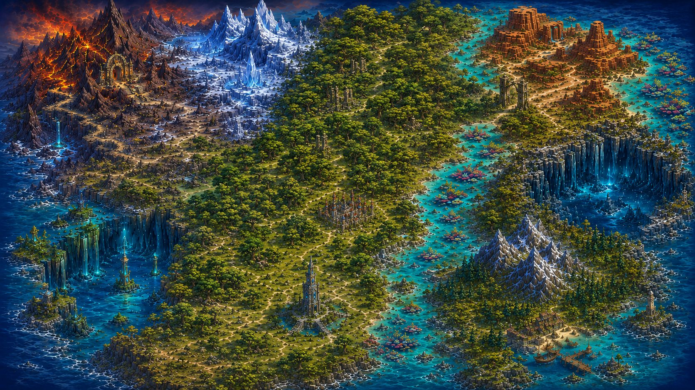

<!DOCTYPE html>
<html lang="en">
<head>
<meta charset="UTF-8" />
<meta name="viewport" content="width=device-width, initial-scale=1.0" />
<title>Study Quest</title>
<link rel="preconnect" href="https://fonts.googleapis.com">
<link rel="preconnect" href="https://fonts.gstatic.com" crossorigin>
<link href="https://fonts.googleapis.com/css2?family=Cinzel:wght@500;600;700&family=Inter:wght@400;500;600;700&display=swap" rel="stylesheet">
<script src="https://cdn.tailwindcss.com"></script>
<script src="https://cdnjs.cloudflare.com/ajax/libs/react/18.2.0/umd/react.production.min.js"></script>
<script src="https://cdnjs.cloudflare.com/ajax/libs/react-dom/18.2.0/umd/react-dom.production.min.js"></script>
<script src="https://cdnjs.cloudflare.com/ajax/libs/babel-standalone/7.23.5/babel.min.js"></script>
<script src="https://cdnjs.cloudflare.com/ajax/libs/Chart.js/4.5.0/chart.umd.min.js"></script>
<style>
  /* Glowing pulse used on Recommended Quest cards in the Study Quest
     Atlas. Plain CSS (not a Tailwind utility) since Tailwind has no
     built-in animated box-shadow pulse. */
  @keyframes questPulseGlow {
    0%, 100% { box-shadow: 0 0 18px rgba(250, 204, 21, 0.55); }
    50% { box-shadow: 0 0 34px rgba(250, 204, 21, 0.9); }
  }
  .quest-pulse-glow {
    animation: questPulseGlow 2.5s ease-in-out infinite;
  }
  /* Fantasy-ecosystem typography: every heading across the app uses the
     Cinzel engraved serif (same face as the Atlas realm plaques), while
     body/labels/buttons stay in the clean default sans for readability. */
  h1, h2, h3, h4 {
    font-family: 'Cinzel', 'Trajan Pro', Georgia, serif;
    letter-spacing: 0.025em;
  }
  /* Unified fantasy quest-action buttons (Action Plan section): shared
     dark base, accent set per-button via --qa-accent/--qa-glow custom
     properties so purpose is differentiated by accent + icon + label,
     never by color alone. */
  .quest-action-btn {
    display: flex; align-items: center; justify-content: center; gap: 0.5rem;
    padding: 0.85rem 1.25rem; border-radius: 0.75rem;
    font-weight: 600; font-size: 0.875rem; color: #f1f5f9;
    background: linear-gradient(180deg, rgba(30,41,59,0.92), rgba(10,15,28,0.95));
    border: 1px solid var(--qa-accent);
    box-shadow: 0 0 10px var(--qa-glow), inset 0 1px 0 rgba(255,255,255,0.07);
    transition: transform 180ms ease, box-shadow 180ms ease, filter 180ms ease;
  }
  .quest-action-btn:hover {
    transform: translateY(-2px);
    filter: brightness(1.18);
    box-shadow: 0 4px 18px var(--qa-glow), inset 0 1px 0 rgba(255,255,255,0.1);
  }
  .quest-action-btn:focus-visible { outline: 2px solid var(--qa-accent); outline-offset: 2px; }
  .quest-action-btn svg { color: var(--qa-accent); filter: brightness(1.3); }
  /* Quest Quiz Header - each quiz section's cinematic banner built from
     that quest's OWN artwork (the same normalized banners BiomeBanner
     uses), with a left-to-right readability gradient, a realm-colored
     tint/border/glow, and the quest's established icon in a medallion.
     CSS vars (--quest-image, --image-position, --realm-color,
     --realm-glow) are set inline per quest from the shared metadata. */
  .quest-quiz-header {
    position: relative;
    isolation: isolate;
    min-height: clamp(170px, 20vw, 250px);
    overflow: hidden;
    border: 1px solid var(--realm-color);
    border-radius: 1rem;
    background-image:
      linear-gradient(90deg, rgba(5,10,24,0.94) 0%, rgba(7,14,29,0.82) 36%, rgba(7,14,29,0.45) 66%, rgba(7,14,29,0.2) 100%),
      linear-gradient(180deg, var(--realm-tint), rgba(5,10,24,0.28)),
      var(--quest-image);
    background-size: cover;
    background-position: var(--image-position);
    background-repeat: no-repeat;
    box-shadow:
      0 14px 38px rgba(0,0,0,0.28),
      inset 0 0 0 1px rgba(255,255,255,0.04),
      0 0 22px var(--realm-glow);
  }
  .quest-quiz-header::after {
    content: "";
    position: absolute;
    inset: 0;
    z-index: -1;
    pointer-events: none;
    background: linear-gradient(180deg, transparent 55%, rgba(4,8,20,0.45) 100%);
  }
  .quest-quiz-header__content {
    position: relative;
    z-index: 1;
    display: flex;
    align-items: center;
    gap: clamp(1rem, 2.5vw, 1.75rem);
    min-height: inherit;
    padding: clamp(1.1rem, 3vw, 1.9rem);
  }
  .quest-quiz-header__icon {
    display: grid;
    flex: 0 0 auto;
    place-items: center;
    width: clamp(44px, 5.5vw, 56px);
    aspect-ratio: 1;
  }
  /* Fallback-only medallion ring: applied when no quest icon PNG exists
     and an SVG realm/quest icon is rendered instead. */
  .quest-quiz-header__icon--fallback {
    border: 3px solid var(--realm-color);
    border-radius: 999px;
    background: radial-gradient(circle at 40% 30%, rgba(255,255,255,0.1), rgba(7,15,31,0.86) 64%);
    box-shadow: 0 0 16px var(--realm-glow), inset 0 0 18px rgba(255,255,255,0.05);
  }
  .quest-quiz-header__icon svg {
    width: 48%;
    height: 48%;
  }
  /* The quest icon PNGs are finished circular buttons with transparent
     backgrounds, so no extra ring/background is drawn around them -
     just a subtle drop shadow (no color-altering filters). */
  .quest-quiz-header__icon-image {
    width: 100%;
    height: 100%;
    object-fit: contain;
    user-select: none;
    filter: drop-shadow(0 2px 6px rgba(0, 0, 0, 0.45));
  }
  @media (max-width: 720px) {
    .quest-quiz-header__icon { width: clamp(40px, 11vw, 48px); }
  }
  @media (max-width: 720px) {
    .quest-quiz-header {
      min-height: 250px;
      background-image:
        linear-gradient(180deg, rgba(5,10,24,0.7) 0%, rgba(5,10,24,0.85) 70%, rgba(5,10,24,0.94) 100%),
        var(--quest-image);
    }
    .quest-quiz-header__content { align-items: flex-end; }
  }
  @media (prefers-reduced-motion: reduce) {
    .quest-quiz-header, .quest-quiz-header * { transition: none !important; animation: none !important; }
  }
  /* Newest progression-path segment flows subtly toward the Current
     Quest (dash offset animation on the atlas SVG). */
  @keyframes questTrailFlow {
    to { stroke-dashoffset: -7; }
  }
  .quest-trail-flow {
    animation: questTrailFlow 1.8s linear infinite;
  }
  @media (prefers-reduced-motion: reduce) {
    .quest-action-btn { transition: none; }
    .quest-action-btn:hover { transform: none; }
    .quest-pulse-glow { animation: none; }
    .quest-trail-flow { animation: none; }
  }
</style>
</head>
<body>
<div id="root"></div>
<script type="text/babel">
const { useState, useEffect, useRef } = React;
// ============================================================
// Icon Components
// ============================================================
const CheckCircle2 = ({ className }) => (
  <svg className={className} fill="none" stroke="currentColor" viewBox="0 0 24 24">
    <path strokeLinecap="round" strokeLinejoin="round" strokeWidth={2} d="M9 12l2 2 4-4m6 2a9 9 0 11-18 0 9 9 0 0118 0z" />
  </svg>
);
const Calendar = ({ className }) => (
  <svg className={className} fill="none" stroke="currentColor" viewBox="0 0 24 24">
    <path strokeLinecap="round" strokeLinejoin="round" strokeWidth={2} d="M8 7V3m8 4V3m-9 8h10M5 21h14a2 2 0 002-2V7a2 2 0 00-2-2H5a2 2 0 00-2 2v12a2 2 0 002 2z" />
  </svg>
);
const Brain = ({ className }) => (
  <svg className={className} fill="none" stroke="currentColor" viewBox="0 0 24 24">
    <path strokeLinecap="round" strokeLinejoin="round" strokeWidth={2} d="M9.663 17h4.673M12 3v1m6.364 1.636l-.707.707M21 12h-1M4 12H3m3.343-5.657l-.707-.707m2.828 9.9a5 5 0 117.072 0l-.548.547A3.374 3.374 0 0014 18.469V19a2 2 0 11-4 0v-.531c0-.895-.356-1.754-.988-2.386l-.548-.547z" />
  </svg>
);
const Target = ({ className }) => (
  <svg className={className} fill="none" stroke="currentColor" viewBox="0 0 24 24">
    <path strokeLinecap="round" strokeLinejoin="round" strokeWidth={2} d="M12 8c-1.657 0-3 .895-3 2s1.343 2 3 2 3 .895 3 2-1.343 2-3 2m0-8c1.11 0 2.08.402 2.599 1M12 8V7m0 1v8m0 0v1m0-1c-1.11 0-2.08-.402-2.599-1M21 12a9 9 0 11-18 0 9 9 0 0118 0z" />
  </svg>
);
const TrendingUp = ({ className }) => (
  <svg className={className} fill="none" stroke="currentColor" viewBox="0 0 24 24">
    <path strokeLinecap="round" strokeLinejoin="round" strokeWidth={2} d="M13 7h8m0 0v8m0-8l-8 8-4-4-6 6" />
  </svg>
);
const Focus = ({ className }) => (
  <svg className={className} fill="none" stroke="currentColor" viewBox="0 0 24 24">
    <path strokeLinecap="round" strokeLinejoin="round" strokeWidth={2} d="M15 12a3 3 0 11-6 0 3 3 0 016 0z" />
    <path strokeLinecap="round" strokeLinejoin="round" strokeWidth={2} d="M2.458 12C3.732 7.943 7.523 5 12 5c4.478 0 8.268 2.943 9.542 7-1.274 4.057-5.064 7-9.542 7-4.477 0-8.268-2.943-9.542-7z" />
  </svg>
);
const FileText = ({ className }) => (
  <svg className={className} fill="none" stroke="currentColor" viewBox="0 0 24 24">
    <path strokeLinecap="round" strokeLinejoin="round" strokeWidth={2} d="M9 12h6m-6 4h6m2 5H7a2 2 0 01-2-2V5a2 2 0 012-2h5.586a1 1 0 01.707.293l5.414 5.414a1 1 0 01.293.707V19a2 2 0 01-2 2z" />
  </svg>
);
const Lightbulb = ({ className }) => (
  <svg className={className} fill="none" stroke="currentColor" viewBox="0 0 24 24">
    <path strokeLinecap="round" strokeLinejoin="round" strokeWidth={2} d="M9.663 17h4.673M12 3v1m6.364 1.636l-.707.707M21 12h-1M4 12H3m3.343-5.657l-.707-.707m2.828 9.9a5 5 0 117.072 0l-.548.547A3.374 3.374 0 0014 18.469V19a2 2 0 11-4 0v-.531c0-.895-.356-1.754-.988-2.386l-.548-.547z" />
  </svg>
);
const MessageCircle = ({ className }) => (
  <svg className={className} fill="none" stroke="currentColor" viewBox="0 0 24 24">
    <path strokeLinecap="round" strokeLinejoin="round" strokeWidth={2} d="M8 12h.01M12 12h.01M16 12h.01M21 12c0 4.418-4.03 8-9 8a9.863 9.863 0 01-4.255-.949L3 20l1.395-3.72C3.512 15.042 3 13.574 3 12c0-4.418 4.03-8 9-8s9 3.582 9 8z" />
  </svg>
);
const BookMarked = ({ className }) => (
  <svg className={className} fill="none" stroke="currentColor" viewBox="0 0 24 24">
    <path strokeLinecap="round" strokeLinejoin="round" strokeWidth={2} d="M12 6.253v13m0-13C10.832 5.477 9.246 5 7.5 5S4.168 5.477 3 6.253v13C4.168 18.477 5.754 18 7.5 18s3.332.477 4.5 1.253m0-13C13.168 5.477 14.754 5 16.5 5c1.747 0 3.332.477 4.5 1.253v13C19.832 18.477 18.247 18 16.5 18c-1.746 0-3.332.477-4.5 1.253" />
  </svg>
);
const ChevronRight = ({ className }) => (
  <svg className={className} fill="none" stroke="currentColor" viewBox="0 0 24 24">
    <path strokeLinecap="round" strokeLinejoin="round" strokeWidth={2} d="M9 5l7 7-7 7" />
  </svg>
);
const ChevronLeft = ({ className }) => (
  <svg className={className} fill="none" stroke="currentColor" viewBox="0 0 24 24">
    <path strokeLinecap="round" strokeLinejoin="round" strokeWidth={2} d="M15 19l-7-7 7-7" />
  </svg>
);
const ChevronDown = ({ className }) => (
  <svg className={className} fill="none" stroke="currentColor" viewBox="0 0 24 24">
    <path strokeLinecap="round" strokeLinejoin="round" strokeWidth={2} d="M19 9l-7 7-7-7" />
  </svg>
);
const Save = ({ className }) => (
  <svg className={className} fill="none" stroke="currentColor" viewBox="0 0 24 24">
    <path strokeLinecap="round" strokeLinejoin="round" strokeWidth={2} d="M8 7H5a2 2 0 00-2 2v9a2 2 0 002 2h14a2 2 0 002-2V9a2 2 0 00-2-2h-3m-1 4l-3 3m0 0l-3-3m3 3V4" />
  </svg>
);
const Download = ({ className }) => (
  <svg className={className} fill="none" stroke="currentColor" viewBox="0 0 24 24">
    <path strokeLinecap="round" strokeLinejoin="round" strokeWidth={2} d="M4 16v1a3 3 0 003 3h10a3 3 0 003-3v-1m-4-4l-4 4m0 0l-4-4m4 4V4" />
  </svg>
);
const Share2 = ({ className }) => (
  <svg className={className} fill="none" stroke="currentColor" viewBox="0 0 24 24">
    <path strokeLinecap="round" strokeLinejoin="round" strokeWidth={2} d="M8.684 13.342C8.886 12.938 9 12.482 9 12c0-.482-.114-.938-.316-1.342m0 2.684a3 3 0 110-2.684m0 2.684l6.632 3.316m-6.632-6l6.632-3.316m0 0a3 3 0 105.367-2.684 3 3 0 00-5.367 2.684zm0 9.316a3 3 0 105.368 2.684 3 3 0 00-5.368-2.684z" />
  </svg>
);
const Database = ({ className }) => (
  <svg className={className} fill="none" stroke="currentColor" viewBox="0 0 24 24">
    <path strokeLinecap="round" strokeLinejoin="round" strokeWidth={2} d="M4 7v10c0 2.21 3.582 4 8 4s8-1.79 8-4V7M4 7c0 2.21 3.582 4 8 4s8-1.79 8-4M4 7c0-2.21 3.582-4 8-4s8 1.79 8 4m0 5c0 2.21-3.582 4-8 4s-8-1.79-8-4" />
  </svg>
);
const BarChart = ({ className }) => (
  <svg className={className} fill="none" stroke="currentColor" viewBox="0 0 24 24">
    <path strokeLinecap="round" strokeLinejoin="round" strokeWidth={2} d="M9 19v-6a2 2 0 00-2-2H5a2 2 0 00-2 2v6a2 2 0 002 2h2a2 2 0 002-2zm0 0V9a2 2 0 012-2h2a2 2 0 012 2v10m-6 0a2 2 0 002 2h2a2 2 0 002-2m0 0V5a2 2 0 012-2h2a2 2 0 012 2v14a2 2 0 01-2 2h-2a2 2 0 01-2-2z" />
  </svg>
);
const Clipboard = ({ className }) => (
  <svg className={className} fill="none" stroke="currentColor" viewBox="0 0 24 24">
    <path strokeLinecap="round" strokeLinejoin="round" strokeWidth={2} d="M9 5H7a2 2 0 00-2 2v12a2 2 0 002 2h10a2 2 0 002-2V7a2 2 0 00-2-2h-2M9 5a2 2 0 002 2h2a2 2 0 002-2M9 5a2 2 0 012-2h2a2 2 0 012 2" />
  </svg>
);
const Sparkles = ({ className }) => (
  <svg className={className} fill="none" stroke="currentColor" viewBox="0 0 24 24">
    <path strokeLinecap="round" strokeLinejoin="round" strokeWidth={2} d="M5 3v4M3 5h4M6 17v4m-2-2h4m5-16l2.286 6.857L21 12l-5.714 2.143L13 21l-2.286-6.857L5 12l5.714-2.143L13 3z" />
  </svg>
);
const Menu = ({ className }) => (
  <svg className={className} fill="none" stroke="currentColor" viewBox="0 0 24 24">
    <path strokeLinecap="round" strokeLinejoin="round" strokeWidth={2} d="M4 6h16M4 12h16M4 18h16" />
  </svg>
);
const X = ({ className }) => (
  <svg className={className} fill="none" stroke="currentColor" viewBox="0 0 24 24">
    <path strokeLinecap="round" strokeLinejoin="round" strokeWidth={2} d="M6 18L18 6M6 6l12 12" />
  </svg>
);
const Circle = ({ className }) => (
  <svg className={className} fill="none" stroke="currentColor" viewBox="0 0 24 24">
    <circle cx="12" cy="12" r="10" strokeWidth={2} />
  </svg>
);
const CheckCircleSolid = ({ className }) => (
  <svg className={className} fill="currentColor" viewBox="0 0 24 24">
    <path d="M12 2C6.48 2 2 6.48 2 12s4.48 10 10 10 10-4.48 10-10S17.52 2 12 2zm-2 15l-5-5 1.41-1.41L10 14.17l7.59-7.59L19 8l-9 9z" />
  </svg>
);
const HelpCircle = ({ className }) => (
  <svg className={className} fill="none" stroke="currentColor" viewBox="0 0 24 24">
    <path strokeLinecap="round" strokeLinejoin="round" strokeWidth={2} d="M8.228 9c.549-1.165 2.03-2 3.772-2 2.21 0 4 1.343 4 3 0 1.4-1.278 2.575-3.006 2.907-.542.104-.994.54-.994 1.093m0 3h.01M21 12a9 9 0 11-18 0 9 9 0 0118 0z" />
  </svg>
);
const Info = ({ className }) => (
  <svg className={className} fill="none" stroke="currentColor" viewBox="0 0 24 24">
    <path strokeLinecap="round" strokeLinejoin="round" strokeWidth={2} d="M13 16h-1v-4h-1m1-4h.01M21 12a9 9 0 11-18 0 9 9 0 0118 0z" />
  </svg>
);
const Trophy = ({ className }) => (
  <svg className={className} fill="none" stroke="currentColor" viewBox="0 0 24 24">
    <path strokeLinecap="round" strokeLinejoin="round" strokeWidth={2} d="M8 21h8m-4-4v4M7 4h10v4a5 5 0 01-10 0V4z" />
    <path strokeLinecap="round" strokeLinejoin="round" strokeWidth={2} d="M7 5H4a1 1 0 00-1 1c0 2.5 1.5 4 4 4M17 5h3a1 1 0 011 1c0 2.5-1.5 4-4 4" />
  </svg>
);
const MapIcon = ({ className }) => (
  <svg className={className} fill="none" stroke="currentColor" viewBox="0 0 24 24">
    <path strokeLinecap="round" strokeLinejoin="round" strokeWidth={2} d="M9 20l-5.447-2.724A1 1 0 013 16.382V5.618a1 1 0 011.447-.894L9 7m0 13l6-3m-6 3V7m6 10l4.553 2.276A1 1 0 0021 18.382V7.618a1 1 0 00-.553-.894L15 4m0 13V4m0 0L9 7" />
  </svg>
);
const Compass = ({ className }) => (
  <svg className={className} fill="none" stroke="currentColor" viewBox="0 0 24 24">
    <circle cx="12" cy="12" r="9" strokeWidth={2} />
    <path strokeLinecap="round" strokeLinejoin="round" strokeWidth={2} d="M14.5 9.5l-2 5-3 1.5 2-5 3-1.5z" />
  </svg>
);
// ============================================================
// Realm & Section Data (game structure + 12 scoring categories)
// ============================================================
const realmThemes = {
  memory: { icon: Brain, gradient: 'from-indigo-500 to-blue-600', badge: 'bg-indigo-100 text-indigo-700 border-indigo-300', bar: 'bg-indigo-500', image: 'realm-banners/01_memory_realm.png', accentColor: '#4f46e5', description: 'Forge and strengthen the pathways that help you remember.' },
  meaning: { icon: Lightbulb, gradient: 'from-purple-500 to-fuchsia-600', badge: 'bg-purple-100 text-purple-700 border-purple-300', bar: 'bg-purple-500', image: 'realm-banners/02_meaning_realm.png', accentColor: '#a855f7', description: 'Find meaning, make connections, and build understanding.' },
  mastery: { icon: Focus, gradient: 'from-cyan-500 to-blue-500', badge: 'bg-cyan-100 text-cyan-700 border-cyan-300', bar: 'bg-cyan-500', image: 'realm-banners/03_mastery_realm.png', accentColor: '#06b6d4', description: 'Reflect, explain, and master your learning.' },
  focus: { icon: Target, gradient: 'from-orange-500 to-amber-500', badge: 'bg-orange-100 text-orange-700 border-orange-300', bar: 'bg-orange-500', image: 'realm-banners/04_focus_realm.png', accentColor: '#f97316', description: 'Focus your attention and manage your time and energy.' },
  resilience: { icon: TrendingUp, gradient: 'from-green-500 to-emerald-600', badge: 'bg-green-100 text-green-700 border-green-300', bar: 'bg-green-500', image: 'realm-banners/05_resilience_realm.png', accentColor: '#10b981', description: 'Gather resources and build the mindset to keep going.' }
};
const REALM_ORDER = ['memory', 'meaning', 'mastery', 'focus', 'resilience'];
const TIER_LABELS = {
  high: 'Unlocked Power',
  medium: 'Developing Skill',
  low: 'Quest Needed'
};
function getAdviceLevel(percentage) {
  if (percentage >= 75) return 'high';
  if (percentage >= 50) return 'medium';
  return 'low';
}
function getTierColorClasses(tier) {
  if (tier === 'high') {
    return { bg: 'bg-green-50', border: 'border-green-200', text: 'text-green-600', badgeBg: 'bg-green-200', badgeText: 'text-green-700', barFill: 'bg-green-500' };
  }
  if (tier === 'medium') {
    return { bg: 'bg-yellow-50', border: 'border-yellow-200', text: 'text-yellow-600', badgeBg: 'bg-yellow-200', badgeText: 'text-yellow-700', barFill: 'bg-yellow-500' };
  }
  return { bg: 'bg-red-50', border: 'border-red-200', text: 'text-red-600', badgeBg: 'bg-red-200', badgeText: 'text-red-700', barFill: 'bg-red-500' };
}
// 75-100% = Unlocked Power, 50-74% = Developing Skill, 0-49% = Quest Needed
function getQuestStatusLabel(percentage) {
  return TIER_LABELS[getAdviceLevel(percentage)];
}
// Pulls every existing questionExamples entry for a section (keys like
// "retrieval-0", "retrieval-1", ...) without assuming a fixed count, so it
// stays correct even if a section's example set ever changes size.
function getQuestExamples(sectionId) {
  const prefix = `${sectionId}-`;
  return Object.keys(questionExamples)
    .filter(key => key.startsWith(prefix))
    .sort()
    .map(key => questionExamples[key]);
}
// The 12 scoring categories, grouped into 5 realms, with their diagnostic
// (student-facing, "hidden meaning") titles and their quest (revealed) titles.
const sections = [
  {
    id: 'retrieval',
    realm: 'memory',
    realmTitle: 'The Memory Realm',
    diagnosticTitle: 'Memory Forge',
    questTitle: 'Memory Forge: Turn Notes into Knowledge',
    originalTitle: 'Retrieval Practice',
    fullTitle: 'Retrieval Practice & Active Learning',
    icon: Brain,
    description: 'How well do you actively recall and test yourself on material?',
    definition: 'Retrieval practice means actively recalling information from memory rather than passively re-reading. Active recall (testing yourself) is far more effective than passive reviewing (re-reading or highlighting).',
    // First 2 = compass (always asked). Last 2 = deep dive (asked only if the compass answers are ambiguous).
    questions: [
      'I regularly quiz myself (covering notes, using flashcards, explaining aloud) rather than only re-reading or highlighting.',
      'I try to answer practice questions before looking at the solutions.',
      'I regularly test myself on material without looking at my notes first.',
      'I use active recall techniques (like the Feynman Technique) to check my understanding.'
    ],
    advice: {
      high: 'Excellent! You understand that testing yourself is the best way to learn. Keep prioritizing active recall over passive review.',
      medium: 'You do some self-testing, but could benefit from making it more systematic. Try scheduling regular quiz sessions and using more flashcards or practice problems.',
      low: 'This is your biggest opportunity for improvement. Start replacing re-reading time with self-quizzing. Cover your notes and try to recall key points, or use flashcards daily.'
    }
  },
  {
    id: 'spaced',
    realm: 'memory',
    realmTitle: 'The Memory Realm',
    diagnosticTitle: 'Time Crystal Path',
    questTitle: 'Time Crystal Path: Beat the Forgetting Curve',
    originalTitle: 'Spaced Repetition',
    fullTitle: 'Spaced Repetition',
    icon: Calendar,
    description: 'Do you review material at increasing intervals over time?',
    definition: 'Spaced repetition means reviewing material at gradually increasing intervals (e.g., 1 day, 3 days, 1 week, 2 weeks). This fights the forgetting curve and moves information into long-term memory much more effectively than cramming.',
    questions: [
      'I review material multiple times over days/weeks rather than cramming the night before.',
      'I revisit older material regularly, not just new content.',
      'I use a system (like a spaced repetition app or schedule) to plan when I review topics.',
      'I space out my study sessions rather than doing marathon sessions.'
    ],
    advice: {
      high: 'Great work! You understand the power of spacing. Keep reviewing old material alongside new topics.',
      medium: 'You space out some reviews, but could be more systematic. Consider using a spaced repetition app (like Anki) or creating a review schedule.',
      low: 'Spacing is crucial for long-term retention. Start reviewing each topic at 1 day, 3 days, 1 week, and 2 weeks after first learning it. Use a calendar or app to track this.'
    }
  },
  {
    id: 'interleaving',
    realm: 'memory',
    realmTitle: 'The Memory Realm',
    diagnosticTitle: 'Switchback Trail',
    questTitle: 'Switchback Trail: Learn When to Use Which Strategy',
    originalTitle: 'Interleaving',
    fullTitle: 'Interleaving & Mixing',
    icon: Target,
    description: 'Do you mix different topics/problem types rather than blocking them?',
    definition: 'Interleaving means mixing different topics or problem types in one study session rather than studying one topic completely before moving to the next. This improves your ability to discriminate between concepts and apply them flexibly.',
    questions: [
      'I mix different types of problems or topics within a single study session.',
      'When practicing problems, I shuffle different types rather than doing all of one type.',
      'I review multiple subjects or topics in rotation rather than blocking them.',
      'I intentionally alternate between related concepts to understand their differences.'
    ],
    advice: {
      high: 'Excellent! Mixing topics improves discrimination and flexible thinking. Continue this practice.',
      medium: 'You mix topics sometimes. Try deliberately shuffling practice problems and alternating between related concepts more consistently.',
      low: 'Start mixing different problem types in each session instead of blocking (e.g., do problems 1, 5, 9, 13 instead of 1-10). This feels harder but leads to better learning.'
    }
  },
  {
    id: 'elaboration',
    realm: 'meaning',
    realmTitle: 'The Meaning Realm',
    diagnosticTitle: 'Connection Grove',
    questTitle: 'Connection Grove: Make Ideas Stick',
    originalTitle: 'Elaboration',
    fullTitle: 'Elaboration & Connection',
    icon: Lightbulb,
    description: 'Do you connect new material to what you already know?',
    definition: 'Elaboration means actively connecting new information to existing knowledge, asking "why" and "how," and creating meaningful relationships between concepts. This builds a richer mental network that makes recall easier.',
    questions: [
      'I ask myself how new material relates to things I already know.',
      'I think about "why" something is true, not just "what" it is.',
      'I create examples or analogies to understand new concepts.',
      'I try to explain new material in my own words and relate it to real-world situations.'
    ],
    advice: {
      high: 'Great! You\'re building rich connections. Keep asking "why" and "how does this relate to..."',
      medium: 'You make some connections. Try being more deliberate: for each new concept, write down 2-3 related ideas you already know.',
      low: 'Start asking "How is this like...?" and "Why does this work?" for every new concept. Create your own examples and analogies.'
    }
  },
  {
    id: 'concrete',
    realm: 'meaning',
    realmTitle: 'The Meaning Realm',
    diagnosticTitle: 'Example Workshop',
    questTitle: 'Example Workshop: Make Abstract Ideas Real',
    originalTitle: 'Concrete Examples',
    fullTitle: 'Concrete Examples & Application',
    icon: FileText,
    description: 'Do you use specific examples and practice applying concepts?',
    definition: 'Using concrete examples means grounding abstract concepts in specific, real instances. Application means practicing using concepts in varied contexts. Both help you understand deeply and transfer knowledge to new situations.',
    questions: [
      'I create or find specific examples for abstract concepts.',
      'I practice applying concepts to solve problems, not just memorizing definitions.',
      'I work through practice problems and real-world applications.',
      'I regularly try to use what I learn in different contexts or scenarios.'
    ],
    advice: {
      high: 'Great! Using examples and application builds deep understanding. Keep practicing in varied contexts.',
      medium: 'You use some examples. Try creating at least 3 concrete examples for every abstract concept you learn.',
      low: 'Start by creating one specific example for each new concept. Then practice applying it in different scenarios or problem types.'
    }
  },
  {
    id: 'organization',
    realm: 'meaning',
    realmTitle: 'The Meaning Realm',
    diagnosticTitle: 'Mapmaker’s Hall',
    questTitle: 'Mapmaker’s Hall: Build the Big Picture',
    originalTitle: 'Organization',
    fullTitle: 'Organization & Structure',
    icon: FileText,
    description: 'Do you organize information into meaningful structures?',
    definition: 'Organization means structuring information into hierarchies, categories, or frameworks rather than keeping it as isolated facts. Well-organized information is easier to remember and use.',
    questions: [
      'I organize my notes into clear hierarchies or categories.',
      'I create outlines, concept maps, or diagrams to show relationships.',
      'I group related information together in meaningful ways.',
      'I can explain how different concepts relate to each other in a structured way.'
    ],
    advice: {
      high: 'Excellent! Structured information is easier to recall. Keep organizing and creating visual frameworks.',
      medium: 'You have some organization. Try creating concept maps or outlines that show the "big picture" of how topics connect.',
      low: 'Start by creating simple outlines or mind maps for each major topic. Show how subtopics relate to main ideas and to each other.'
    }
  },
  {
    id: 'metacognition',
    realm: 'mastery',
    realmTitle: 'The Mastery Realm',
    diagnosticTitle: 'Mirror Tower',
    questTitle: 'Mirror Tower: See What You Really Know',
    originalTitle: 'Metacognition',
    fullTitle: 'Metacognition & Self-Monitoring',
    icon: Focus,
    description: 'Do you accurately assess what you know vs. what you need to work on?',
    definition: 'Metacognition is "thinking about thinking" - being aware of what you know, what you don\'t know, and how well you\'re learning. Good metacognition helps you study more efficiently by focusing on your actual weak points.',
    questions: [
      'I can accurately identify which topics I understand vs. which I need more work on.',
      'I regularly ask myself "Do I really understand this, or does it just feel familiar?"',
      'I test myself to check my understanding rather than assuming I know material.',
      'I track my mistakes and patterns to identify weak areas.'
    ],
    advice: {
      high: 'Excellent self-awareness! You know your strengths and weaknesses. Keep using this to guide your study priorities.',
      medium: 'You have some awareness but could track your understanding more systematically. Keep an error log and test yourself more to reveal gaps.',
      low: 'Illusions of competence are common. Start testing yourself more to reveal what you actually don\'t know. Keep track of your mistakes and weak areas.'
    }
  },
  {
    id: 'teaching',
    realm: 'mastery',
    realmTitle: 'The Mastery Realm',
    diagnosticTitle: 'Teaching Tavern',
    questTitle: 'Teaching Tavern: Explain It to Learn It',
    originalTitle: 'Teaching',
    fullTitle: 'Teaching & Explanation',
    icon: MessageCircle,
    description: 'Do you explain concepts to others or pretend to teach them?',
    definition: 'The act of teaching or explaining forces you to organize your thoughts, identify gaps in understanding, and articulate concepts clearly. This is one of the most powerful learning techniques.',
    questions: [
      'I explain concepts out loud as if teaching someone else.',
      'I help others understand material, which deepens my own understanding.',
      'I study with others and take turns explaining topics.',
      'I use the "Feynman Technique" - explaining in simple terms to identify gaps.'
    ],
    advice: {
      high: 'Excellent! Teaching is one of the best ways to learn. Keep explaining and helping others.',
      medium: 'You do some explaining. Try the Feynman Technique: explain each concept as if to a 10-year-old, noting where you struggle.',
      low: 'Start explaining concepts out loud to yourself or a study partner. If you can\'t explain it simply, you don\'t understand it well enough.'
    }
  },
  {
    id: 'focus',
    realm: 'focus',
    realmTitle: 'The Focus Realm',
    diagnosticTitle: 'Focus Cavern',
    questTitle: 'Focus Cavern: Defeat the Distraction Goblins',
    originalTitle: 'Focus',
    fullTitle: 'Focus & Distraction Management',
    icon: Target,
    description: 'Do you maintain focus and minimize distractions during study?',
    definition: 'Deep, focused study is far more effective than distracted, multitasking study. Managing your environment and attention is crucial for efficient learning.',
    questions: [
      'I study in a distraction-free environment (phone away, notifications off).',
      'I can maintain focus for sustained periods (25+ minutes at a time).',
      'I avoid multitasking during study sessions.',
      'I take strategic breaks to maintain focus rather than pushing through fatigue.'
    ],
    advice: {
      high: 'Great focus management! Deep work is highly productive. Keep protecting your attention.',
      medium: 'You maintain some focus but could reduce distractions further. Try the Pomodoro Technique (25 min focused work, 5 min break).',
      low: 'Distractions are killing your efficiency. Start by removing your phone from the room and using website blockers during study time.'
    }
  },
  {
    id: 'planning',
    realm: 'focus',
    realmTitle: 'The Focus Realm',
    diagnosticTitle: 'Planning Gate',
    questTitle: 'Planning Gate: Build Your Study Map',
    originalTitle: 'Planning',
    fullTitle: 'Planning & Time Management',
    icon: Calendar,
    description: 'Do you plan your study sessions and manage your time well?',
    definition: 'Effective planning means allocating time based on topic difficulty and importance, starting early, and avoiding cramming. Good time management prevents last-minute stress and allows for proper spacing and review.',
    questions: [
      'I plan out my study schedule in advance rather than studying reactively.',
      'I start studying well before exams rather than cramming.',
      'I allocate more time to difficult topics and less to easy ones.',
      'I break large tasks into smaller, manageable pieces.'
    ],
    advice: {
      high: 'Great planning! You\'re proactive and strategic with your time. Keep tracking and adjusting.',
      medium: 'You do some planning. Try creating a weekly study schedule that allocates more time to your weaker subjects.',
      low: 'Start planning each week\'s study sessions on Sunday. Identify your 3 highest-priority topics and schedule time for them first.'
    }
  },
  {
    id: 'resources',
    realm: 'resilience',
    realmTitle: 'The Resilience Realm',
    diagnosticTitle: 'Resource Harbor',
    questTitle: 'Resource Harbor: Find Better Tools',
    originalTitle: 'Resource Selection',
    fullTitle: 'Resource Selection & Usage',
    icon: BookMarked,
    description: 'Do you use high-quality resources and practice materials effectively?',
    definition: 'Using the right resources (textbooks, practice problems, quality explanations) and knowing how to use them effectively is crucial. Quality practice problems and clear explanations accelerate learning.',
    questions: [
      'I use high-quality textbooks, videos, or resources (not just random Google results).',
      'I use resources actively (taking notes, doing problems) rather than passively consuming.',
      'I work through official practice problems or past exams when available.',
      'I seek out multiple explanations when I don\'t understand something.'
    ],
    advice: {
      high: 'Excellent! You know how to find and use quality resources. Keep seeking out the best materials.',
      medium: 'You use some good resources. Prioritize official practice problems and well-reviewed textbooks over random internet sources.',
      low: 'Start by identifying the 1-2 highest-quality resources for each subject (ask professors/top students). Work through practice problems from these sources.'
    }
  },
  {
    id: 'growth',
    realm: 'resilience',
    realmTitle: 'The Resilience Realm',
    diagnosticTitle: 'Resilience Ridge',
    questTitle: 'Resilience Ridge: Keep Going When It Gets Hard',
    originalTitle: 'Growth Mindset',
    fullTitle: 'Growth Mindset & Persistence',
    icon: TrendingUp,
    description: 'Do you persist through challenges and believe you can improve?',
    definition: 'A growth mindset means believing abilities can be developed through effort. Students with growth mindsets persist longer, embrace challenges, and ultimately achieve more than those with fixed mindsets.',
    questions: [
      'I view difficult material as a challenge to overcome, not as proof I can\'t do it.',
      'I believe I can improve my abilities through effort and better strategies.',
      'I persist when I don\'t understand something rather than giving up quickly.',
      'I see mistakes and struggles as part of learning, not as failures.'
    ],
    advice: {
      high: 'Excellent mindset! Your persistence and belief in growth will serve you well. Keep embracing challenges.',
      medium: 'You show some persistence but may doubt yourself when things get hard. Remember: struggle means you\'re learning.',
      low: 'Start reframing challenges as opportunities to grow. When you struggle, say "I can\'t do this YET" and focus on what strategies to try next.'
    }
  }
];
// Derive the 5 realms (with theming) from the sections above, preserving order.
const realms = REALM_ORDER.map(id => {
  const membersInRealm = sections.filter(s => s.realm === id);
  return {
    id,
    title: membersInRealm.length ? membersInRealm[0].realmTitle : id,
    sectionIds: membersInRealm.map(s => s.id),
    ...realmThemes[id]
  };
});
function getRealm(realmId) {
  return realms.find(r => r.id === realmId);
}
// ============================================================
// Quest Map Positions - percentage-based (x, y) coordinates used to place
// each of the 12 quests as a location "pin" on the single-canvas Study
// Quest Atlas map (AtlasMap/QuestMapPin below). Purely layout data - it
// does not affect scoring, ranking, or the Recommended Quest Path in any
// way. Coordinates can be nudged later without touching any other logic.
// ============================================================
// Marker coordinates for the CLEAN atlas image (each quest sits directly
// on its painted location in the new artwork): forge in the lava zone,
// crystal in the icy area, grove in the upper forest, tower at the
// central lake, tavern in the village, cavern in the blue chasm on the
// right, gate at the ruined arch, harbor at the docks, ridge on the
// snowy mountain. labelPosition controls which side the always-visible
// quest name label sits on (chosen to avoid covering key art/neighbors).
// Coordinates for the v3 atlas artwork. Landmark anchors in this map
// revision: the ruined Planning Gate arch now stands between the reef
// waterway and the upper-right red rock region; Example Workshop sits on
// the turquoise reef/coral waterway in the center-right; the castle
// village (Teaching Tavern) is mid-center with Mirror Tower's spire in
// the lower central area; Focus Cavern is the deep blue chasm at right.
const questMapPositions = {
  retrieval: { x: 15, y: 20, labelPosition: 'right', realm: 'memory', shortLabel: 'Memory Forge' },
  spaced: { x: 34, y: 21, labelPosition: 'right', realm: 'memory', shortLabel: 'Time Crystal Path' },
  interleaving: { x: 20, y: 47, labelPosition: 'left', realm: 'memory', shortLabel: 'Switchback Trail' },
  // labelOffsetX / labelOffsetY nudge ONLY the label (in % of map width /
  // height) relative to its default flex position beside the ring - the
  // ring itself stays anchored at (x, y).
  // Ring moved right so it sits just beside its label (which kept its
  // exact absolute position: the +3% label offset became the ring shift)
  elaboration: { x: 52, y: 23, labelPosition: 'right', labelOffsetX: 0, labelOffsetY: 0, realm: 'meaning', shortLabel: 'Connection Grove' },
  concrete: { x: 71, y: 36, labelPosition: 'left', labelOffsetX: -1, labelOffsetY: 0, realm: 'meaning', shortLabel: 'Example Workshop' },
  organization: { x: 42, y: 38, labelPosition: 'left', realm: 'meaning', shortLabel: 'Mapmaker’s Hall' },
  metacognition: { x: 44, y: 82, labelPosition: 'right', realm: 'mastery', shortLabel: 'Mirror Tower' },
  teaching: { x: 47, y: 56, labelPosition: 'left', realm: 'mastery', shortLabel: 'Teaching Tavern' },
  focus: { x: 83, y: 46, labelPosition: 'right', realm: 'focus', shortLabel: 'Focus Cavern' },
  planning: { x: 71, y: 22, labelPosition: 'right', realm: 'focus', shortLabel: 'Planning Gate' },
  resources: { x: 84, y: 88, labelPosition: 'left', realm: 'resilience', shortLabel: 'Resource Harbor' },
  growth: { x: 76, y: 72, labelPosition: 'right', realm: 'resilience', shortLabel: 'Resilience Ridge' }
};
// ============================================================
// Quest Progression Meta - drives the single-Current-Quest
// recommendation queue. priorityOrder is an explicit, stable tiebreaker
// (configurable, independent of array position) used when scores are
// tied; prerequisites express instructional ordering: a dependent quest
// is never recommended ahead of its own incomplete prerequisite.
// ============================================================
const questProgressionMeta = {
  retrieval: { priorityOrder: 1, prerequisites: [] },
  spaced: { priorityOrder: 2, prerequisites: ['retrieval'] },
  interleaving: { priorityOrder: 3, prerequisites: [] },
  elaboration: { priorityOrder: 4, prerequisites: [] },
  concrete: { priorityOrder: 5, prerequisites: ['elaboration'] },
  organization: { priorityOrder: 6, prerequisites: [] },
  metacognition: { priorityOrder: 7, prerequisites: [] },
  teaching: { priorityOrder: 8, prerequisites: ['metacognition'] },
  focus: { priorityOrder: 9, prerequisites: [] },
  planning: { priorityOrder: 10, prerequisites: ['focus'] },
  resources: { priorityOrder: 11, prerequisites: ['growth'] },
  growth: { priorityOrder: 12, prerequisites: [] }
};
// A quest is COMPLETE when all three required steps are done. Merely
// opening/reading quest info does not complete it.
function deriveQuestComplete(progress) {
  return Boolean(progress && progress.reviewOpened && progress.reflectionCompleted && progress.smartGoalSaved);
}
// A reflection must be a meaningful response, not a placeholder.
function isMeaningfulReflection(text) {
  const t = (text || '').trim();
  return t.length >= 20 && t.split(/\s+/).length >= 5;
}
// A valid SMART goal needs an action of substance, a measurable amount
// or frequency, and a time frame. (There are no structured SMART fields
// in this app - goals are single statements built from templates - so
// this validates the statement itself rather than just non-empty text.)
function validateSmartGoal(text) {
  const t = (text || '').trim();
  const missing = [];
  if (t.length < 20 || t.split(/\s+/).length < 6) missing.push('a specific action (a full sentence describing what you will do)');
  if (!(/\d/.test(t) || /\b(every|each|daily|weekly|once|twice|all|per)\b/i.test(t))) missing.push('a measurable amount or frequency (a number, or words like "every" / "daily")');
  if (!/\b(today|tonight|tomorrow|daily|day|days|week|weeks|weekly|month|months|semester|by|before|until|every|each)\b/i.test(t)) missing.push('a time frame (like "this week", "each day", or "by Friday")');
  return { valid: missing.length === 0, missing };
}
// ============================================================
// Atlas realm styling - map-UI-only colors (per the atlas design spec:
// mastery=gold and focus=blue HERE, even though the rest of the app keeps
// its existing realm palette) plus placement for each realm's ornate
// fantasy name plaque. Positioned over quiet parts of the artwork.
// ============================================================
const atlasRealmStyles = {
  memory: { title: 'Memory Realm', color: '#9b6bff', glow: 'rgba(155, 107, 255, 0.8)', plaqueX: 14, plaqueY: 8 },
  meaning: { title: 'Meaning Realm', color: '#35d27f', glow: 'rgba(53, 210, 127, 0.8)', plaqueX: 53, plaqueY: 10 },
  mastery: { title: 'Mastery Realm', color: '#f1c232', glow: 'rgba(241, 194, 50, 0.8)', plaqueX: 45, plaqueY: 67 },
  focus: { title: 'Focus Realm', color: '#4f8dff', glow: 'rgba(79, 141, 255, 0.8)', plaqueX: 82, plaqueY: 32 },
  resilience: { title: 'Resilience Realm', color: '#36d9d4', glow: 'rgba(54, 217, 212, 0.8)', plaqueX: 82, plaqueY: 80 }
};
// ============================================================
// Realm Boundaries - hand-drawn polygon outlines (percentage coordinates
// on the 16:9 map image) that show students where each realm begins and
// ends. Purely visual overlay data; labelX/labelY position each realm's
// floating name tag inside its own territory.
// ============================================================
// The five realms form a COMPLETE PARTITION of the landmass: every
// polygon shares its border vertices with its neighbors, so the regions
// tessellate with no gaps or unassigned land. Assignments: Memory owns
// the volcano + icy peaks + switchback path and the glowing west-coast
// caverns; Meaning the central upper forest; Mastery the lake tower,
// village and southern savanna; Focus the canyon, the blue chasm and
// the ruined-gate lobe; Resilience the snowy ridge + harbor. Only open
// ocean lies outside the realm system.
// Shared edges (identical vertex runs in both polygons):
//   memory|meaning  40,2 42,12 40,24 36,32 30,40
//   memory|mastery  30,40 26,48 16,54
//   meaning|mastery 30,40 36,44 46,48 56,50 66,50 74,46
//   meaning|focus   68,2 69,12 70,22 72,27 74,36 74,46
//   mastery|focus   74,46 74,52
//   focus|resilience 74,52 80,60 90,58 96,48
//   mastery|resilience 74,52 68,62 64,74 66,86
// Meaning is one continuous lush realm again: the central forest plus
// the turquoise reef waterway on its eastern flank (Example Workshop's
// home). Focus runs from the upper-right red rocks through the ruined
// Planning Gate corridor down into the deep blue cavern chasm.
const realmBoundaries = {
  memory: {
    color: '#9b6bff',
    fill: 'rgba(155, 107, 255, 0.095)',
    stroke: 'rgba(201, 179, 255, 0.9)',
    points: '1,2 40,2 42,12 40,24 36,32 30,40 26,48 16,54 6,46 1,30'
  },
  meaning: {
    color: '#35d27f',
    fill: 'rgba(53, 210, 127, 0.085)',
    stroke: 'rgba(143, 240, 184, 0.9)',
    points: '40,2 68,2 69,12 70,22 72,27 74,36 74,46 66,50 56,50 46,48 36,44 30,40 36,32 40,24 42,12'
  },
  mastery: {
    color: '#f1c232',
    fill: 'rgba(241, 194, 50, 0.095)',
    stroke: 'rgba(255, 226, 138, 0.9)',
    points: '30,40 36,44 46,48 56,50 66,50 74,46 74,52 68,62 64,74 66,86 58,94 44,96 30,90 20,80 12,68 16,54 26,48'
  },
  focus: {
    color: '#4f8dff',
    fill: 'rgba(79, 141, 255, 0.095)',
    stroke: 'rgba(163, 196, 255, 0.9)',
    points: '68,2 96,2 98,20 96,48 90,58 80,60 74,52 74,46 74,36 72,27 70,22 69,12'
  },
  resilience: {
    color: '#36d9d4',
    fill: 'rgba(54, 217, 212, 0.085)',
    stroke: 'rgba(159, 240, 236, 0.9)',
    points: '74,52 80,60 90,58 96,48 98,56 98,86 90,96 76,93 66,86 64,74 68,62'
  }
};
// Derives each realm's on-map "region" center (and a label anchor a bit
// above the cluster) straight from questMapPositions above, so the region
// glows/labels always stay in sync with wherever the pins actually are -
// no separate/duplicate coordinate list to drift out of sync.
function getRealmMapRegions() {
  return REALM_ORDER.map(realmId => {
    const points = Object.values(questMapPositions).filter(p => p.realm === realmId);
    const avgX = points.length ? points.reduce((sum, p) => sum + p.x, 0) / points.length : 50;
    const avgY = points.length ? points.reduce((sum, p) => sum + p.y, 0) / points.length : 50;
    const minY = points.length ? Math.min(...points.map(p => p.y)) : avgY;
    return { id: realmId, x: avgX, y: avgY, labelY: Math.max(6, minY - 9) };
  });
}
// ============================================================
// Overall Quest Power helpers (purely additive aggregation on top of the
// existing per-section scores). These do NOT change how any individual
// section's score is computed, nor how the Recommended Quest Path is
// ranked - they just group the same getSectionScore(id) results the rest
// of the app already produces, the same way the "All 12 Quests, by
// Realm" view already averages realm members inline. Every function here
// takes the caller's getSectionScore so there is a single source of
// truth for scoring.
// ============================================================
function getOverallQuestPower(getSectionScore) {
  let totalScore = 0;
  let totalMax = 0;
  sections.forEach(section => {
    const s = getSectionScore(section.id);
    totalScore += s.score;
    totalMax += s.maxScore;
  });
  return totalMax > 0 ? Math.round((totalScore / totalMax) * 100) : 0;
}
function getRealmScores(getSectionScore) {
  return REALM_ORDER.map(realmId => {
    const realm = getRealm(realmId);
    const memberSections = sections.filter(s => s.realm === realmId);
    const percentages = memberSections.map(s => getSectionScore(s.id).percentage);
    const percentage = percentages.length
      ? Math.round(percentages.reduce((a, b) => a + b, 0) / percentages.length)
      : 0;
    return {
      id: realmId,
      title: realm.title,
      icon: realm.icon,
      gradient: realm.gradient,
      badge: realm.badge,
      bar: realm.bar,
      image: realm.image,
      questNames: memberSections.map(s => s.diagnosticTitle),
      percentage
    };
  });
}
// 0-39% New Explorer, 40-59% Growing Explorer, 60-79% Developing Explorer, 80-100% Master Explorer
function getQuestRankLabel(percentage) {
  if (percentage >= 80) return 'Master Explorer';
  if (percentage >= 60) return 'Developing Explorer';
  if (percentage >= 40) return 'Growing Explorer';
  return 'New Explorer';
}
function getStrongestRealm(realmScores) {
  return realmScores.reduce((best, r) => (!best || r.percentage > best.percentage) ? r : best, null);
}
function getLowestRealm(realmScores) {
  return realmScores.reduce((worst, r) => (!worst || r.percentage < worst.percentage) ? r : worst, null);
}
// Goal templates
const goalTemplates = {
  retrieval: [
    "I will create flashcards for [subject] and quiz myself for 15 minutes every day this week.",
    "I will practice the Feynman Technique by explaining [topic] out loud without notes every study session.",
    "Before looking at my notes, I will spend 10 minutes writing down everything I remember about [topic].",
    "I will do practice problems for [subject] without checking the solutions first, then review my mistakes."
  ],
  spaced: [
    "I will review my [subject] notes on days 1, 3, 7, and 14 after first learning them.",
    "I will set up an Anki deck for [topic] and review it daily for spaced repetition.",
    "I will create a calendar with review sessions for old material alongside new topics.",
    "I will dedicate 20% of each study session to reviewing previous material, not just new content."
  ],
  interleaving: [
    "When doing practice problems, I will mix different types instead of doing all of one type in a row.",
    "I will alternate between [topic A] and [topic B] within each study session instead of blocking them.",
    "I will shuffle my practice problems and do them in random order rather than sequentially.",
    "I will create a mixed practice set combining problems from the last 3 chapters of [subject]."
  ],
  elaboration: [
    "For each new concept in [subject], I will write down how it connects to 2-3 things I already know.",
    "I will ask 'Why does this work?' for every formula or concept in [subject] and research the answer.",
    "I will create my own real-world examples for each abstract concept in [topic].",
    "I will explain [topic] using an analogy to something completely different that I understand well."
  ],
  metacognition: [
    "I will keep an error log tracking all my mistakes in [subject] to identify patterns in my weak areas.",
    "Before each study session, I will rate my confidence (1-10) on each topic, then test myself to check.",
    "I will use practice tests to identify what I actually don't know vs. what just feels familiar.",
    "After each chapter, I will list 3 things I understand well and 3 things I need more work on."
  ],
  concrete: [
    "For each abstract concept in [subject], I will create 3 specific, concrete examples.",
    "I will solve at least 10 practice problems applying [concept] in different contexts.",
    "I will find or create real-world scenarios where [topic] is used and explain how.",
    "I will teach [concept] to someone using only concrete examples, no abstract definitions."
  ],
  organization: [
    "I will create a concept map showing how all the topics in [chapter/unit] connect to each other.",
    "I will reorganize my [subject] notes into a clear hierarchy with main topics and subtopics.",
    "I will create a one-page visual summary/outline of [topic] showing all key relationships.",
    "I will use color-coding and clear headings to structure my notes for [subject]."
  ],
  teaching: [
    "I will explain [topic] out loud as if teaching it to a 10-year-old, noting where I struggle.",
    "I will start a study group and take turns teaching different sections of [subject].",
    "I will record myself explaining [concept] and listen back to identify gaps in my understanding.",
    "I will help a classmate with [topic] and use that as an opportunity to deepen my own knowledge."
  ],
  focus: [
    "I will use the Pomodoro Technique: 25 minutes focused work, 5 minute break, phone in another room.",
    "I will study in [specific location] with my phone off and no internet access for focused work.",
    "I will use a website blocker during my study sessions and check social media only during breaks.",
    "I will plan specific focused work blocks for [subject] and protect that time from all distractions."
  ],
  resources: [
    "I will identify and use the highest-rated textbook or video series for [subject] instead of random sources.",
    "I will work through all official practice problems and past exams for [course/test].",
    "When stuck, I will check 2-3 high-quality sources before settling on an explanation.",
    "I will ask my professor/teacher for their recommended resources for [topic] and use those."
  ],
  planning: [
    "Every Sunday, I will create a detailed study schedule for the week, allocating more time to harder topics.",
    "I will break my [large project/exam prep] into specific daily tasks and schedule them on my calendar.",
    "I will start studying for [exam/test] at least 2 weeks in advance with a day-by-day plan.",
    "I will track my study time for each subject this week and adjust my schedule based on what works."
  ],
  growth: [
    "When I struggle with [topic], I will say 'I can't do this YET' and try a different learning strategy.",
    "I will deliberately tackle the most challenging problems in [subject] to grow my abilities.",
    "I will view mistakes in [subject] as learning opportunities and analyze what went wrong.",
    "I will remind myself that intelligence is not fixed and effort + strategy lead to improvement."
  ]
};
// Question examples (revealed inside quests, never during the diagnostic)
const questionExamples = {
  'retrieval-0': 'Example: Instead of re-reading your biology notes, cover them and try to write down all the key concepts from memory, or use flashcards to quiz yourself.',
  'retrieval-1': 'Example: After studying photosynthesis, explain the entire process out loud as if teaching it to a friend, without looking at your notes.',
  'retrieval-2': 'Example: When doing math homework, attempt each problem completely before checking the solution, even if you\'re unsure.',
  'retrieval-3': 'Example: Before reviewing for an exam, take a blank sheet and write everything you remember about the topic before looking at your study materials.',
  'retrieval-4': 'Example: Use the Feynman Technique - explain a concept in simple terms, identify gaps in your explanation, then study those gaps.',
  'spaced-0': 'Example: After learning about the French Revolution, review your notes the next day, then 3 days later, then a week later, then 2 weeks later.',
  'spaced-1': 'Example: Each week, dedicate time to reviewing topics from 2-3 weeks ago, not just current material.',
  'spaced-2': 'Example: Use an app like Anki that automatically schedules when you should review each flashcard based on how well you know it.',
  'spaced-3': 'Example: Instead of studying for 5 hours the day before a test, study 1 hour per day for 5 days.',
  'spaced-4': 'Example: Even after you ace a practice test on a topic, continue to review it occasionally to maintain long-term retention.',
  'interleaving-0': 'Example: When practicing algebra, mix polynomial problems with quadratic problems with linear problems, rather than doing 20 polynomial problems in a row.',
  'interleaving-1': 'Example: In a study session, alternate between studying the cardiovascular system and the respiratory system, rather than finishing one completely first.',
  'interleaving-2': 'Example: Create a practice set with problems 1, 5, 9, 2, 7, 11 instead of problems 1-12 in order.',
  'interleaving-3': 'Example: Make a mixed problem set that includes questions from chapters 4, 5, and 6 all together.',
  'interleaving-4': 'Example: Study mitosis and meiosis in the same session, comparing and contrasting them, rather than mastering mitosis first.',
  'elaboration-0': 'Example: When learning about supply and demand, connect it to your own experience buying concert tickets or limited-edition sneakers.',
  'elaboration-1': 'Example: When you see a formula like F=ma, ask "Why does force equal mass times acceleration? What\'s the deeper reason?" and research it.',
  'elaboration-2': 'Example: For "natural selection," create examples like: antibiotic-resistant bacteria, peppered moths, or the evolution of dog breeds.',
  'elaboration-3': 'Example: Explain photosynthesis using the analogy of a solar-powered factory that makes food from air and water.',
  'elaboration-4': 'Example: When learning about the water cycle, connect it to what you know about water boiling, clouds forming, and rain in your daily life.',
  'metacognition-0': 'Example: Keep a notebook where you write down every mistake you make on chemistry problems and identify patterns (e.g., "I always forget to balance equations").',
  'metacognition-1': 'Example: Before studying, rate each topic 1-10 for confidence, then do practice problems to see if your confidence matched your actual ability.',
  'metacognition-2': 'Example: Use practice tests to reveal what you really know vs. what just "seems familiar" from reading.',
  'metacognition-3': 'Example: After reading a chapter, close the book and list what you truly understand vs. what you need to review more.',
  'metacognition-4': 'Example: After re-reading notes, ask yourself "Could I explain this to someone else right now?" If not, you don\'t really understand it yet.',
  'concrete-0': 'Example: For "supply and demand," create examples: iPhone prices, gas prices during a shortage, or Black Friday sales.',
  'concrete-1': 'Example: Don\'t just memorize the Pythagorean theorem - solve problems about finding TV screen sizes, ladder heights, or baseball diamond distances.',
  'concrete-2': 'Example: For "democracy," discuss specific examples like voting in school elections, town hall meetings, or national elections.',
  'concrete-3': 'Example: When teaching someone about fractions, use pizza slices, measuring cups, or money rather than just abstract numbers.',
  'concrete-4': 'Example: Apply what you learned about persuasive writing by analyzing advertisements, political speeches, or movie trailers.',
  'organization-0': 'Example: Structure notes with main topics in bold, subtopics indented, and supporting details bulleted underneath.',
  'organization-1': 'Example: Create a concept map showing how different body systems connect, or how historical events led to each other.',
  'organization-2': 'Example: Use categories like "Causes," "Key Events," "Results," and "Significance" when studying historical topics.',
  'organization-3': 'Example: Use colors for different topics (blue for vocabulary, green for key concepts, yellow for examples) in your notes.',
  'organization-4': 'Example: Explain how photosynthesis relates to cellular respiration, and how both connect to the carbon cycle.',
  'teaching-0': 'Example: Pretend you\'re making a YouTube video explaining the Civil War to middle schoolers - use simple language and catch yourself when you can\'t explain something clearly.',
  'teaching-1': 'Example: Form a study group where each person teaches one chapter to the others.',
  'teaching-2': 'Example: Use your phone to record yourself explaining a concept, then listen back and note where you hesitated or couldn\'t explain clearly.',
  'teaching-3': 'Example: Tutor a younger student or classmate - teaching them will reveal gaps in your own understanding.',
  'teaching-4': 'Example: Instead of silently reviewing, talk out loud through problems as if explaining your thought process to someone else.',
  'focus-0': 'Example: Put your phone in a different room, close all browser tabs except what you need, and study in a quiet space.',
  'focus-1': 'Example: Use the Pomodoro Technique - set a timer for 25 minutes of focused work, then take a 5-minute break.',
  'focus-2': 'Example: Don\'t listen to music with lyrics, check texts, or have Netflix playing in the background while studying.',
  'focus-3': 'Example: After 50 minutes of focused study, take a 10-minute break to walk around, stretch, or get a snack.',
  'focus-4': 'Example: Block out specific times on your calendar for studying and treat them like important appointments you can\'t miss.',
  'resources-0': 'Example: Use Khan Academy, MIT OpenCourseWare, or your textbook rather than random YouTube videos or unreliable websites.',
  'resources-1': 'Example: Practice with official SAT/ACT questions or past AP exams rather than random practice problems.',
  'resources-2': 'Example: If a textbook explanation doesn\'t make sense, check 2-3 other high-quality sources (like Khan Academy or your teacher\'s recommended sites).',
  'resources-3': 'Example: Work through examples actively - pause the video and try to solve before seeing the answer, or do the textbook problems yourself.',
  'resources-4': 'Example: Ask your teacher which textbook/resource they recommend most for your topic, rather than just using whatever you find first.',
  'planning-0': 'Example: Every Sunday evening, create a weekly schedule showing which subjects you\'ll study each day and for how long.',
  'planning-1': 'Example: Allocate more time to subjects you struggle with - if math is hard and history is easy, spend 2 hours on math and 1 on history.',
  'planning-2': 'Example: For a big final exam, start studying 3 weeks ahead and break it into daily goals (Week 1: Chapters 1-4, Week 2: Chapters 5-8, etc.).',
  'planning-3': 'Example: Break "Study for bio exam" into specific tasks: "Make flashcards Ch. 3," "Practice problems Ch. 4," "Review notes Ch. 5," etc.',
  'planning-4': 'Example: Track how long you actually study each subject per week, then adjust your schedule if you\'re spending too much time on easy topics.',
  'growth-0': 'Example: When calculus feels impossible, remind yourself "I don\'t understand this YET, but with practice and the right strategies, I will."',
  'growth-1': 'Example: When you fail a quiz, view it as information about what to study more, not as proof you\'re bad at the subject.',
  'growth-2': 'Example: Believe that you can improve your math ability through effort and better study strategies, not that you\'re just "not a math person."',
  'growth-3': 'Example: When a problem is hard, see it as an opportunity to grow your brain rather than as a frustration.',
  'growth-4': 'Example: Instead of avoiding your weakest subjects, deliberately practice them more because that\'s where you can grow most.',
};
// Research citations (revealed inside quests, never during the diagnostic)
const sectionResearch = {
  retrieval: {
    whyItMatters: "Retrieval practice is one of the most powerful learning techniques discovered by cognitive science. When you force your brain to actively recall information, you strengthen the neural pathways associated with that memory. This is far more effective than passive review because it simulates the actual challenge you'll face during a test or when you need to use the information. Studies show that students who use retrieval practice can retain 50-70% more information long-term compared to those who simply re-read material.",
    citation: "Roediger & Karpicke (2006) found that retrieval practice produced better long-term retention than repeated studying, even when it felt more difficult. Karpicke & Blunt (2011) showed that retrieval practice was more effective than concept mapping for learning.",
    practicalImpact: "Research shows students who regularly test themselves score 1-2 letter grades higher than those who just re-read. The effort feels harder, but the results are dramatically better."
  },
  spaced: {
    whyItMatters: "Your brain naturally forgets information over time (the 'forgetting curve'). Spaced repetition combats this by reviewing material just as you're about to forget it, which dramatically strengthens long-term retention. Cramming might help you pass tomorrow's test, but you'll forget most of it within weeks. Spaced practice requires the same total study time, but distributed across days or weeks instead of one marathon session. This approach moves information into long-term memory, making it available when you actually need it.",
    citation: "Cepeda et al. (2006) reviewed 317 studies and confirmed spaced practice consistently beats massed practice. Ebbinghaus (1885) first documented the forgetting curve showing how quickly we forget without review.",
    practicalImpact: "Students using spaced repetition remember 80% of material after weeks, compared to only 20-30% for those who cram. The difference is massive for cumulative exams and standardized tests."
  },
  interleaving: {
    whyItMatters: "Interleaving (mixing different types of problems or topics) feels harder than blocking (doing all of one type), but it leads to better learning. When you interleave, your brain must learn to discriminate between different concepts and choose the right approach for each problem. This builds flexible knowledge that transfers to new situations. Blocking might make you feel more confident, but it's often an illusion - you're just recognizing patterns rather than truly understanding when to apply each concept.",
    citation: "Rohrer & Taylor (2007) found that interleaved practice improved math test scores by 25% compared to blocked practice. Similar results have been found for learning motor skills, categorization, and scientific concepts.",
    practicalImpact: "Interleaving especially helps on cumulative exams and real-world applications where you need to choose the right approach from multiple options, not just apply one pre-selected method."
  },
  elaboration: {
    whyItMatters: "Elaboration means actively connecting new information to what you already know, asking 'why' and 'how,' and generating your own examples. This builds a rich, interconnected web of knowledge in your brain. Isolated facts are easy to forget, but information connected to existing knowledge is much stickier. When you elaborate, you create multiple retrieval pathways - if you forget one route to the information, you can access it through another connection. This is why understanding beats memorization.",
    citation: "Craik & Lockhart (1972) showed that 'deep processing' (elaboration) produces much better retention than 'shallow processing' (rote repetition). McDaniel & Donnelly (1996) found that generating explanations improved learning.",
    practicalImpact: "Students who actively elaborate remember 40-60% more than those who just passively read. The time investment is small but the payoff is huge - you understand more deeply and forget less."
  },
  metacognition: {
    whyItMatters: "Metacognition is 'thinking about your thinking' - being aware of what you truly know versus what just feels familiar. Many students suffer from 'illusions of competence' where material feels familiar from reading, but they can't actually explain or apply it. Good metacognition helps you study efficiently by focusing time on actual weaknesses rather than wasting time on things you already know. It prevents overconfidence and helps you catch gaps before they hurt your grade.",
    citation: "Dunning-Kruger effect research shows that poor performers often overestimate their abilities because they lack metacognitive awareness. Kornell & Bjork (2008) found that students' judgments of learning are often inaccurate predictors of test performance.",
    practicalImpact: "Students with strong metacognition study 30-40% more efficiently because they focus on actual weak areas. They also experience less test anxiety because they accurately know what they know."
  },
  concrete: {
    whyItMatters: "Concrete examples and application practice help you truly understand abstract concepts and transfer knowledge to new situations. Your brain understands concrete things more easily than abstract ideas. By grounding abstract concepts in specific examples, you make them meaningful and memorable. Application practice (solving varied problems) also helps you recognize when and how to use concepts in new contexts, rather than just reciting definitions.",
    citation: "Kaminski et al. (2008) found that learning with concrete examples improved transfer to new problems. Chi et al. (1981) showed that experts organize knowledge around deep principles with many concrete examples.",
    practicalImpact: "Students who use concrete examples and practice application score significantly higher on transfer problems and real-world applications compared to those who focus on abstract definitions."
  },
  organization: {
    whyItMatters: "Well-organized information is dramatically easier to learn and remember. Your brain naturally looks for patterns and structure - when you provide clear organization, you're working with your brain instead of against it. Organization helps you see the 'big picture,' understand how concepts relate, and remember where information fits. Organized notes also make review much more efficient because you can quickly find and understand key concepts.",
    citation: "Bransford et al. (2000) found that expert knowledge is organized around key concepts and principles. Bower et al. (1969) showed that organized information is remembered 2-3 times better than disorganized information.",
    practicalImpact: "Creating concept maps and organized outlines takes extra time upfront but can reduce total study time by 25-30% because review is so much more efficient and effective."
  },
  teaching: {
    whyItMatters: "Teaching or explaining concepts is one of the most powerful learning techniques. When you teach, you must organize your knowledge clearly, identify gaps in your understanding, and articulate concepts precisely. This forces deeper processing than passive review. The 'protégé effect' shows that preparing to teach activates different, more effective learning strategies. You can 'teach' to a real person, an imaginary student, or even to yourself out loud.",
    citation: "Nestojko et al. (2014) found that students who expected to teach material learned it more effectively than those who expected to be tested on it. The 'Feynman Technique' is based on teaching as learning.",
    practicalImpact: "Students who explain concepts out loud or teach study partners score 20-30% higher on tests and develop much deeper understanding that helps with advanced coursework."
  },
  focus: {
    whyItMatters: "Deep, focused work is exponentially more productive than distracted studying. Multitasking and frequent interruptions force your brain to constantly restart, wasting mental energy and reducing comprehension. Research shows that even having your phone visible (not just on) reduces cognitive capacity. One hour of focused work accomplishes what 2-3 hours of distracted work achieves. Focus is a skill you can develop, and protecting your attention is one of the highest-leverage improvements you can make.",
    citation: "Ward et al. (2017) found that the mere presence of smartphones reduces cognitive capacity. Newport (2016) documented that knowledge workers produce much more in focused 'deep work' blocks than in fragmented time.",
    practicalImpact: "Students who study with their phones in another room and distractions blocked score 25-35% higher than those who study with devices nearby, despite studying for the same amount of time."
  },
  resources: {
    whyItMatters: "The quality of your learning resources dramatically affects how efficiently you learn. High-quality textbooks, videos, and practice materials present information clearly, build on prerequisites properly, and provide good examples. Poor resources can confuse you or teach incorrect information, wasting your time. Official practice materials (like past exams) are especially valuable because they show you exactly what you'll be tested on. Learning to identify and prioritize quality resources is a meta-skill that pays dividends in every subject.",
    citation: "Research on learning materials shows that well-designed resources with worked examples and practice problems significantly improve learning outcomes compared to text-only or low-quality resources.",
    practicalImpact: "Using high-quality resources like MIT OpenCourseWare, Khan Academy, or recommended textbooks instead of random Google results can reduce study time by 30-40% while improving comprehension."
  },
  planning: {
    whyItMatters: "Effective planning and time management prevent cramming, reduce stress, and ensure you have adequate time for proper learning techniques like spacing and practice. Students who plan proactively tend to start earlier, allocate time based on difficulty (not just deadlines), and avoid last-minute panic. Good planning also means tracking what actually works and adjusting your approach. The upfront time investment in planning saves much more time in more efficient studying.",
    citation: "Zimmerman & Martinez-Pons (1986) found that self-regulated learners who plan and monitor their studying significantly outperform peers. Time management skills correlate strongly with academic success.",
    practicalImpact: "Students who plan their studying weekly and start major assignments/exams 2+ weeks early average 15-20% higher grades and report much lower stress than those who study reactively."
  },
  growth: {
    whyItMatters: "Your mindset about intelligence and ability directly affects your academic success. Students with a 'growth mindset' (believing abilities can be developed) persist longer through challenges, embrace difficult material, and ultimately achieve more than equally-talented students with a 'fixed mindset' (believing ability is unchangeable). When you view struggle as a sign you're learning rather than a sign you lack talent, you're willing to put in the effort required to master difficult material. This mindset difference predicts success in school and beyond.",
    citation: "Dweck (2006) found that students with growth mindsets achieved higher grades and were more resilient in the face of setbacks. Blackwell et al. (2007) showed that teaching growth mindset improved student achievement.",
    practicalImpact: "Students who develop a growth mindset show 10-30% improvement in grades over a semester, especially in subjects they previously struggled with, simply by changing how they interpret challenges and setbacks."
  }
};
// ============================================================
// Biome Visual Metadata (purely presentational). Adds a colorful,
// exploration/atlas feel on top of the 12 scoring categories above
// without touching any scoring, adaptive-question, tracker, or
// localStorage logic. Keyed by section id.
// ============================================================
const questVisuals = {
  retrieval: {
    biomeName: 'Volcanic Forge',
    imageKey: 'memory-forge',
    quizImageSrc: 'images/quests/memory-forge.jpg',
    iconSrc: 'images/quests/icons/memory-forge.png',
    quizImagePosition: 'center center',
    quizLocationLabel: 'Volcanic Forge',
    imageSrc: 'normalized_1200x300/01_memory_forge_volcanic_forge.png',
    colorTheme: 'orange',
    gradient: 'from-orange-900 via-red-700 to-amber-500',
    accentColor: '#ea580c',
    mapIcon: Brain,
    flavorText: 'Forge stronger memory by pulling knowledge from the fire of recall.'
  },
  spaced: {
    biomeName: 'Glacier Cavern',
    imageKey: 'time-crystal-path',
    quizImageSrc: 'images/quests/time-crystal-path.jpg',
    iconSrc: 'images/quests/icons/time-crystal-path.png',
    quizImagePosition: 'center center',
    quizLocationLabel: 'Crystal Passage',
    imageSrc: 'normalized_1200x300/02_time_crystal_path_glacier.png',
    colorTheme: 'sky',
    gradient: 'from-sky-900 via-cyan-700 to-blue-300',
    accentColor: '#0ea5e9',
    mapIcon: Calendar,
    flavorText: 'Chip away at the forgetting curve, one icy interval at a time.'
  },
  interleaving: {
    biomeName: 'Mountain Switchbacks',
    imageKey: 'switchback-trail',
    quizImageSrc: 'images/quests/switchback-trail.jpg',
    iconSrc: 'images/quests/icons/switchback-trail.png',
    quizImagePosition: 'center center',
    quizLocationLabel: 'Mountain Trail',
    imageSrc: 'normalized_1200x300/03_switchback_trail_mountains.png',
    colorTheme: 'stone',
    gradient: 'from-slate-800 via-stone-600 to-lime-500',
    accentColor: '#65a30d',
    mapIcon: Target,
    flavorText: 'Zigzag between concepts to build flexible, trail-tested thinking.'
  },
  elaboration: {
    biomeName: 'Temperate Forest',
    imageKey: 'connection-grove',
    quizImageSrc: 'images/quests/connection-grove.jpg',
    iconSrc: 'images/quests/icons/connection-grove.png',
    quizImagePosition: 'center center',
    quizLocationLabel: 'Ancient Grove',
    imageSrc: 'normalized_1200x300/04_connection_grove_forest.png',
    colorTheme: 'emerald',
    gradient: 'from-emerald-900 via-green-700 to-lime-400',
    accentColor: '#16a34a',
    mapIcon: Lightbulb,
    flavorText: 'Grow a web of connections between what you know and what\'s new.'
  },
  concrete: {
    biomeName: 'Coral Reef',
    imageKey: 'example-workshop',
    quizImageSrc: 'images/quests/example-workshop.jpg',
    iconSrc: 'images/quests/icons/example-workshop.png',
    quizImagePosition: 'center center',
    quizLocationLabel: 'Reef Workshop',
    imageSrc: 'normalized_1200x300/05_example_workshop_coral_reef.png',
    colorTheme: 'teal',
    gradient: 'from-teal-900 via-cyan-600 to-pink-400',
    accentColor: '#0d9488',
    mapIcon: FileText,
    flavorText: 'Dive down and bring abstract ideas to the surface as real examples.'
  },
  organization: {
    biomeName: 'Canyon Mesa',
    imageKey: 'mapmakers-hall',
    quizImageSrc: 'images/quests/mapmakers-hall.jpg',
    iconSrc: 'images/quests/icons/mapmakers-hall.png',
    quizImagePosition: 'center center',
    quizLocationLabel: 'Cartographer\'s Hall',
    imageSrc: 'normalized_1200x300/06_mapmakers_hall_canyon.png',
    colorTheme: 'amber',
    gradient: 'from-red-900 via-orange-700 to-yellow-400',
    accentColor: '#d97706',
    mapIcon: FileText,
    flavorText: 'Carve your notes into clear layers, from big picture to bedrock detail.'
  },
  metacognition: {
    biomeName: 'Reflective Lake',
    imageKey: 'mirror-tower',
    quizImageSrc: 'images/quests/mirror-tower.jpg',
    iconSrc: 'images/quests/icons/mirror-tower.png',
    quizImagePosition: 'center center',
    quizLocationLabel: 'Reflection Tower',
    imageSrc: 'normalized_1200x300/07_mirror_tower_reflective_lake.png',
    colorTheme: 'indigo',
    gradient: 'from-indigo-900 via-blue-700 to-slate-300',
    accentColor: '#4f46e5',
    mapIcon: Focus,
    flavorText: 'See a true reflection of what you know - and what still needs work.'
  },
  teaching: {
    biomeName: 'Campfire Village',
    imageKey: 'teaching-tavern',
    quizImageSrc: 'images/quests/teaching-tavern.jpg',
    iconSrc: 'images/quests/icons/teaching-tavern.png',
    quizImagePosition: 'center center',
    quizLocationLabel: 'Village Tavern',
    imageSrc: 'normalized_1200x300/08_teaching_tavern_campfire_village.png',
    colorTheme: 'amber',
    gradient: 'from-amber-900 via-orange-600 to-yellow-300',
    accentColor: '#b45309',
    mapIcon: MessageCircle,
    flavorText: 'Gather round and explain what you know - teaching is learning twice.'
  },
  focus: {
    biomeName: 'Deep Ocean Cavern',
    imageKey: 'focus-cavern',
    quizImageSrc: 'images/quests/focus-cavern.jpg',
    iconSrc: 'images/quests/icons/focus-cavern.png',
    quizImagePosition: 'center center',
    quizLocationLabel: 'Deep Cavern',
    imageSrc: 'normalized_1200x300/09_focus_cavern_deep_ocean.png',
    colorTheme: 'blue',
    gradient: 'from-slate-900 via-blue-900 to-cyan-600',
    accentColor: '#0369a1',
    mapIcon: Target,
    flavorText: 'Descend into the quiet deep, far from every distraction goblin.'
  },
  planning: {
    biomeName: 'Open Savanna',
    imageKey: 'planning-gate',
    quizImageSrc: 'images/quests/planning-gate.jpg',
    iconSrc: 'images/quests/icons/planning-gate.png',
    quizImagePosition: 'center center',
    quizLocationLabel: 'Connecting Gate',
    imageSrc: 'normalized_1200x300/10_planning_gate_savanna.png',
    colorTheme: 'yellow',
    gradient: 'from-yellow-800 via-amber-600 to-orange-300',
    accentColor: '#ca8a04',
    mapIcon: Calendar,
    flavorText: 'Survey the wide plains ahead and chart your route before you move.'
  },
  resources: {
    biomeName: 'Island Harbor',
    imageKey: 'resource-harbor',
    quizImageSrc: 'images/quests/resource-harbor.jpg',
    iconSrc: 'images/quests/icons/resource-harbor.png',
    quizImagePosition: 'center center',
    quizLocationLabel: 'Island Harbor',
    imageSrc: 'normalized_1200x300/11_resource_harbor_island_harbor.png',
    colorTheme: 'cyan',
    gradient: 'from-blue-900 via-cyan-600 to-teal-300',
    accentColor: '#0891b2',
    mapIcon: BookMarked,
    flavorText: 'Load your ship with only the sturdiest, highest-quality supplies.'
  },
  growth: {
    biomeName: 'Alpine Ridge',
    imageKey: 'resilience-ridge',
    quizImageSrc: 'images/quests/resilience-ridge.jpg',
    iconSrc: 'images/quests/icons/resilience-ridge.png',
    quizImagePosition: 'center center',
    quizLocationLabel: 'Alpine Ridge',
    imageSrc: 'normalized_1200x300/12_resilience_ridge_boreal_ridge.png',
    colorTheme: 'green',
    gradient: 'from-green-950 via-emerald-700 to-teal-300',
    accentColor: '#15803d',
    mapIcon: TrendingUp,
    flavorText: 'Climb higher through setbacks - every ridge earns a better view.'
  }
};
function getQuestVisual(sectionId) {
  return questVisuals[sectionId] || {
    biomeName: 'Uncharted Territory',
    imageKey: 'uncharted',
    colorTheme: 'gray',
    gradient: 'from-gray-700 via-gray-500 to-gray-300',
    accentColor: '#6b7280',
    mapIcon: MapIcon,
    flavorText: 'A new region, waiting to be explored.'
  };
}
// ============================================================
// Biome Banner - a reusable placeholder "image" component. Since no real
// artwork is wired up yet, this renders a layered gradient + soft shapes
// + icon "postcard" that stands in for a biome photo/illustration. No
// essential text is baked into the graphic itself - any label is real,
// selectable DOM text laid over a translucent scrim so it stays readable
// no matter which biome gradient is behind it.
// ============================================================
function BiomeBanner({ sectionId, size = 'md', showLabel = true, className = '' }) {
  const visual = getQuestVisual(sectionId);
  const BiomeIcon = visual.mapIcon;
  const iconSizes = { sm: 'w-6 h-6', md: 'w-10 h-10', lg: 'w-14 h-14', xl: 'w-16 h-16' };
  // If a real photo is supplied via visual.imageSrc, show it. If it fails
  // to load for any reason (missing file, bad path, etc.), fall back to
  // the decorative gradient + icon placeholder below instead of leaving a
  // broken-image icon on screen.
  const [imgFailed, setImgFailed] = useState(false);
  const showPhoto = Boolean(visual.imageSrc) && !imgFailed;
  // aspect-[4/1] matches the source images' native 1200x300 size exactly,
  // so object-cover never has to crop anything off the top/bottom or
  // sides - the whole banner (including any baked-in text) is always
  // fully visible, at any card width. `size` now only scales the icon
  // badge overlay, not the banner's shape.
  return (
    <div className={`relative w-full aspect-[4/1] rounded-lg overflow-hidden bg-gradient-to-br ${visual.gradient} ${className}`}>
      {showPhoto ? (
        <>
           setImgFailed(true)}
            className="absolute inset-0 w-full h-full object-cover"
          />
          {/* No scrim over the artwork - the banner photos show at full
              brightness; the label strip below carries its own contrast */}
        </>
      ) : (
        // Decorative placeholder shapes standing in for real biome artwork
        <div className="absolute inset-0 opacity-30">
          <div className="absolute -top-6 -left-6 w-24 h-24 rounded-full bg-white blur-2xl" />
          <div className="absolute bottom-0 right-0 w-32 h-32 rounded-full bg-black blur-3xl" />
          <div className="absolute top-1/2 left-1/3 w-16 h-16 rounded-full bg-white opacity-40 blur-xl" />
        </div>
      )}
      {/* The icon badge is only a stand-in for missing artwork - now that
          real photos exist, it only shows in the fallback/placeholder
          case above so it doesn't sit on top of the actual image. */}
      {!showPhoto && (
        <div className="absolute inset-0 flex items-center justify-center">
          <div className="bg-white bg-opacity-20 backdrop-blur-sm rounded-full p-3">
            <BiomeIcon className={`${iconSizes[size]} text-white drop-shadow`} />
          </div>
        </div>
      )}
      {showLabel && (
        <div
          className="absolute bottom-0 left-0 right-0 px-3 py-1.5"
          style={{ background: 'linear-gradient(to top, rgba(2,6,23,0.55), rgba(2,6,23,0))' }}
        >
          <p className="text-white text-xs font-bold uppercase tracking-wide drop-shadow">{visual.biomeName}</p>
        </div>
      )}
    </div>
  );
}
// ============================================================
// Status Visual - renders the biome-aware "status treatment" described
// for the Study Quest Map: a glowing border for Unlocked Power, a warm
// partial glow for Developing Skill, and a misty dashed border with a
// clear "Begin Quest" call-to-action for Quest Needed. Purely visual -
// consumes the same tier already computed by getAdviceLevel/percentage.
// ============================================================
function getStatusVisualClasses(tier, accentColor) {
  if (tier === 'high') {
    return {
      borderClass: 'border-2',
      borderStyle: { borderColor: accentColor, boxShadow: `0 0 0 3px ${accentColor}33, 0 0 24px ${accentColor}55` },
      ctaLabel: 'Revisit Quest',
      badgeClass: 'bg-green-100 text-green-800 border border-green-300'
    };
  }
  if (tier === 'medium') {
    return {
      borderClass: 'border-2',
      borderStyle: { borderColor: accentColor, boxShadow: `0 0 14px ${accentColor}40` },
      ctaLabel: 'Continue Quest',
      badgeClass: 'bg-yellow-100 text-yellow-800 border border-yellow-300'
    };
  }
  return {
    borderClass: 'border-2 border-dashed',
    borderStyle: { borderColor: '#9CA3AF', opacity: 0.9 },
    ctaLabel: 'Begin Quest',
    badgeClass: 'bg-gray-100 text-gray-600 border border-gray-300'
  };
}
// ============================================================
// Trail Stepper - the small "connected path" header shown above the
// Recommended Quest Path's three biome cards, purely decorative.
// ============================================================
function TrailStepper({ count }) {
  return (
    <div className="flex items-center justify-center mb-2 px-2">
      {Array.from({ length: count }).map((_, i) => (
        <React.Fragment key={i}>
          <div className="w-3 h-3 rounded-full bg-indigo-500 flex-shrink-0 shadow" />
          {i < count - 1 && (
            <div className="flex-1 h-0.5 bg-gradient-to-r from-indigo-400 to-indigo-200 mx-1" style={{ minWidth: '20px' }} />
          )}
        </React.Fragment>
      ))}
    </div>
  );
}
// ============================================================
// Power Gauge - a semicircular SVG "power meter" for Overall Quest
// Power. Purely presentational: it just draws whatever percentage it is
// given, it does not compute or alter the score itself.
// ============================================================
function PowerGauge({ percentage }) {
  const pct = Math.max(0, Math.min(100, percentage));
  const r = 90;
  const cx = 110;
  const cy = 118;
  const circumference = Math.PI * r;
  const dashOffset = circumference - (circumference * pct) / 100;
  const arcPath = `M ${cx - r} ${cy} A ${r} ${r} 0 0 1 ${cx + r} ${cy}`;
  return (
    <div className="relative mx-auto w-full max-w-[260px]">
      <svg viewBox="0 0 220 140" className="w-full overflow-visible">
        <defs>
          <linearGradient id="overallGaugeGradient" x1="0%" y1="0%" x2="100%" y2="0%">
            <stop offset="0%" stopColor="#ef4444" />
            <stop offset="30%" stopColor="#f59e0b" />
            <stop offset="55%" stopColor="#10b981" />
            <stop offset="80%" stopColor="#3b82f6" />
            <stop offset="100%" stopColor="#a855f7" />
          </linearGradient>
        </defs>
        <path d={arcPath} fill="none" stroke="rgba(255,255,255,0.15)" strokeWidth="18" strokeLinecap="round" />
        <path
          d={arcPath}
          fill="none"
          stroke="url(#overallGaugeGradient)"
          strokeWidth="18"
          strokeLinecap="round"
          strokeDasharray={`${circumference} ${circumference}`}
          strokeDashoffset={dashOffset}
          style={{ transition: 'stroke-dashoffset 0.6s ease' }}
        />
        <text x={cx} y={cy - 12} textAnchor="middle" fill="#ffffff" style={{ fontSize: 42, fontWeight: 800 }}>
          {pct}%
        </text>
      </svg>
    </div>
  );
}
function getRankBadgeClasses(percentage) {
  if (percentage >= 80) return 'bg-gradient-to-r from-emerald-500 to-green-600';
  if (percentage >= 60) return 'bg-gradient-to-r from-blue-500 to-sky-600';
  if (percentage >= 40) return 'bg-gradient-to-r from-amber-500 to-yellow-600';
  return 'bg-gradient-to-r from-red-500 to-rose-600';
}
// ============================================================
// Overall Quest Power Dashboard - replaces the old plain percentage
// banner on the Study Quest Map. Everything it renders (overallPercentage,
// rankLabel, realmScores, recommendedPath) is computed by the caller from
// the same untouched getSectionScore()/getRecommendedQuestPath() results;
// this component only lays it out. "View Quest Path" scrolls to the
// existing Recommended Quest Path section rather than duplicating it.
// ============================================================
function OverallQuestPowerDashboard({ overallPercentage, rankLabel, realmScores, recommendedPath, onViewQuestPath }) {
  const strongest = getStrongestRealm(realmScores);
  const topQuest = recommendedPath && recommendedPath[0];
  return (
    <div className="relative overflow-hidden rounded-2xl border-2 border-amber-400 border-opacity-40 bg-gradient-to-br from-slate-900 via-indigo-950 to-purple-950 text-white p-6 md:p-8 mb-8 shadow-xl">
      {/* Decorative starfield dots - purely cosmetic, echoes the "space fantasy" quest theme */}
      <div className="absolute inset-0 opacity-40 pointer-events-none">
        <div className="absolute top-6 left-10 w-1.5 h-1.5 rounded-full bg-white" />
        <div className="absolute top-16 right-16 w-1 h-1 rounded-full bg-white" />
        <div className="absolute bottom-10 left-1/4 w-1 h-1 rounded-full bg-white" />
        <div className="absolute top-1/3 right-1/3 w-1.5 h-1.5 rounded-full bg-amber-300" />
        <div className="absolute bottom-1/4 right-10 w-1 h-1 rounded-full bg-white" />
      </div>
      <div className="relative">
        <div className="flex items-center justify-center gap-2 mb-2">
          <Compass className="w-6 h-6 text-amber-300" />
          <h3 className="text-xl md:text-2xl font-bold text-amber-200 tracking-wide uppercase">Overall Quest Power</h3>
        </div>
        <PowerGauge percentage={overallPercentage} />
        <div className="text-center -mt-2 mb-6">
          <span className={`inline-block px-5 py-1.5 rounded-full font-bold text-sm md:text-base shadow-lg ${getRankBadgeClasses(overallPercentage)}`}>
            {rankLabel}
          </span>
        </div>
        <div className="mb-6">
          <h4 className="text-center text-sm font-bold text-indigo-200 uppercase tracking-wide mb-3">Realm Balance</h4>
          <div className="grid grid-cols-2 sm:grid-cols-5 gap-3">
            {realmScores.map(r => {
              const RealmIcon = r.icon;
              return (
                <div key={r.id} className="bg-green-50 border border-green-200 rounded-lg overflow-hidden shadow">
                  {r.image && (
                    // aspect-[35/6] matches the source realm banners' native
                    // 1400x240 size so the image is never cropped/stretched.
                    
                  )}
                  <div className="p-2">
                    <div className="flex items-center gap-1.5 mb-1">
                      <RealmIcon className="w-3.5 h-3.5 text-gray-600 flex-shrink-0" />
                      <span className="text-xs font-semibold text-gray-800 truncate">{r.title.replace('The ', '').replace(' Realm', '')}</span>
                    </div>
                    <div className="w-full bg-gray-200 rounded-full h-1.5 mb-1">
                      <div className={`h-1.5 rounded-full bg-gradient-to-r ${r.gradient}`} style={{ width: `${r.percentage}%` }} />
                    </div>
                    <span className="text-xs font-bold text-gray-800">{r.percentage}%</span>
                  </div>
                </div>
              );
            })}
          </div>
        </div>
        <div className="bg-white bg-opacity-5 border border-amber-400 border-opacity-30 rounded-lg p-4 flex flex-col sm:flex-row items-center gap-4">
          <div className="flex-1">
            <p className="text-amber-200 font-bold text-sm uppercase tracking-wide mb-1">What's Next?</p>
            <p className="text-sm text-indigo-100">
              {strongest && <>Your strongest realm is <strong>{strongest.title}</strong> at {strongest.percentage}%. </>}
              {topQuest && <>Start with <strong>{topQuest.diagnosticTitle}</strong> from your Recommended Quest Path below to power up fastest.</>}
            </p>
          </div>
          <button
            onClick={onViewQuestPath}
            className="bg-amber-500 hover:bg-amber-400 text-slate-900 px-5 py-2.5 rounded-lg font-bold text-sm whitespace-nowrap transition-colors flex items-center gap-2 flex-shrink-0"
          >
            View Quest Path
            <ChevronRight className="w-4 h-4" />
          </button>
        </div>
      </div>
    </div>
  );
}
// ============================================================
// Overall Quest Power Panel - the simplified top-of-page summary for the
// Study Quest Atlas (superseded OverallQuestPowerDashboard above, which
// is left defined but unused, same as RadarChart, since the five Realm
// Map Panels below now show realm-level detail directly). Still uses the
// same PowerGauge/getRankBadgeClasses helpers, still the same
// overallPercentage/rankLabel values computed by getOverallQuestPower()/
// getQuestRankLabel() - purely a presentation change.
// ============================================================
function OverallQuestPowerPanel({ overallPercentage, rankLabel, onViewQuestPath }) {
  return (
    <div className="relative overflow-hidden rounded-2xl border-2 border-amber-400 border-opacity-40 bg-gradient-to-br from-slate-900 via-indigo-950 to-purple-950 text-white p-6 md:p-8 mb-8 shadow-xl">
      <div className="absolute inset-0 opacity-40 pointer-events-none">
        <div className="absolute top-6 left-10 w-1.5 h-1.5 rounded-full bg-white" />
        <div className="absolute top-16 right-16 w-1 h-1 rounded-full bg-white" />
        <div className="absolute bottom-10 left-1/4 w-1 h-1 rounded-full bg-white" />
        <div className="absolute top-1/3 right-1/3 w-1.5 h-1.5 rounded-full bg-amber-300" />
        <div className="absolute bottom-1/4 right-10 w-1 h-1 rounded-full bg-white" />
      </div>
      <div className="relative text-center">
        <div className="flex items-center justify-center gap-2 mb-2">
          <Compass className="w-6 h-6 text-amber-300" />
          <h2 className="text-xl md:text-2xl font-bold text-amber-200 tracking-wide uppercase">Overall Quest Power</h2>
        </div>
        <PowerGauge percentage={overallPercentage} />
        <div className="-mt-2 mb-4">
          <span className={`inline-block px-5 py-1.5 rounded-full font-bold text-sm md:text-base shadow-lg ${getRankBadgeClasses(overallPercentage)}`}>
            {rankLabel}
          </span>
        </div>
        <p className="max-w-2xl mx-auto text-sm md:text-base text-indigo-100 mb-4">
          This dial reflects your average Quest Power across all 12 quests in the Atlas.
        </p>
        <button
          onClick={onViewQuestPath}
          className="bg-amber-500 hover:bg-amber-400 text-slate-900 px-5 py-2.5 rounded-lg font-bold text-sm transition-colors inline-flex items-center gap-2"
        >
          View Recommended Quest Path
          <ChevronRight className="w-4 h-4" />
        </button>
      </div>
    </div>
  );
}
// ============================================================
// Recommended Quest Trail - the top-3 lowest-scoring quests (from the
// existing, untouched getRecommendedQuestPath()) shown as a connected
// row of glowing QuestLocationCards. `headingRef` is the same ref the
// Overall Quest Power Panel's button scrolls to; attaching it here (not
// extracting this heading into its own component) keeps the scroll
// target wiring identical to before.
// ============================================================
function RecommendedQuestTrail({ queue, pathInfoById, onBeginQuest, headingRef }) {
  // One destination at a time: queue[0] is the Current Quest (the only
  // gold-highlighted quest anywhere), queue[1] is Up Next, queue[2] is
  // Later in Your Path. When every quest is complete the row celebrates.
  const pathQuests = queue.slice(0, 3);
  return (
    <section className="mb-8">
      <h3 ref={headingRef} className="text-2xl font-bold text-gray-800 mb-2 flex items-center gap-2">
        <Target className="w-7 h-7 text-red-600" />
        Your Quest Path
      </h3>
      <p className="text-sm text-gray-600 mb-4 max-w-3xl">
        Your compass sets one destination at a time. Complete your Current Quest - review your responses, reflect, and save a SMART goal - and the next quest will light up automatically.
      </p>
      {pathQuests.length === 0 ? (
        <div className="rounded-2xl border-2 border-green-300 bg-green-50 p-5 text-sm font-semibold text-green-800 flex items-center gap-2">
          <CheckCircle2 className="w-5 h-5 flex-shrink-0" />
          Every quest in your atlas has an established goal. Revisit any quest below to review or keep tracking.
        </div>
      ) : (
        <div className="flex flex-col sm:flex-row items-stretch sm:items-center gap-3">
          {pathQuests.map((wsection, index) => (
            <React.Fragment key={wsection.id}>
              <div className="flex-1 min-w-0">
                <QuestLocationCard
                  section={wsection}
                  percentage={wsection.percentage}
                  statusLabel={getQuestStatusLabel(wsection.percentage)}
                  pathInfo={pathInfoById[wsection.id]}
                  onBeginQuest={() => onBeginQuest(wsection.id)}
                />
              </div>
              {index < pathQuests.length - 1 && (
                <ChevronRight className="hidden sm:block w-6 h-6 text-amber-500 flex-shrink-0" />
              )}
            </React.Fragment>
          ))}
        </div>
      )}
    </section>
  );
}
// ============================================================
// Quest Power Dial - a circular "power meter" for a single quest zone's
// score, replacing the old radar chart on the Study Quest Map (students
// found the radar hard to read at a glance). Purely presentational: it
// renders whatever percentage/labels it is given and does not compute or
// alter any score itself. Status text reuses the app's existing
// getQuestStatusLabel()/getAdviceLevel() so the 75/50 thresholds and
// "Unlocked Power" / "Developing Skill" / "Quest Needed" wording stay in
// exactly one place.
// ============================================================
function getQuestPowerTheme(percentage) {
  const tier = getAdviceLevel(percentage);
  if (tier === 'high') return { ring: '#10b981', glow: 'rgba(16, 185, 129, 0.45)' };
  if (tier === 'medium') return { ring: '#f59e0b', glow: 'rgba(245, 158, 11, 0.45)' };
  return { ring: '#f97316', glow: 'rgba(249, 115, 22, 0.45)' };
}
function QuestPowerDial({
  percentage = 0,
  size = 132,
  label = 'Quest Power',
  statusLabel,
  showLabel = true,
  showStatusPill = true,
  ariaLabel
}) {
  const pct = Math.max(0, Math.min(100, Math.round(percentage)));
  const theme = getQuestPowerTheme(pct);
  const resolvedStatusLabel = statusLabel || getQuestStatusLabel(pct);
  const degrees = Math.round((pct / 100) * 360);
  const computedAriaLabel = ariaLabel || `${label} ${pct} percent, ${resolvedStatusLabel}`;
  return (
    <div className="flex flex-col items-center justify-center" role="img" aria-label={computedAriaLabel}>
      <div
        className="relative rounded-full flex items-center justify-center"
        style={{
          width: size,
          height: size,
          background: `conic-gradient(${theme.ring} ${degrees}deg, rgba(255,255,255,0.18) ${degrees}deg)`,
          boxShadow: `0 0 24px ${theme.glow}`
        }}
      >
        <div
          className="absolute rounded-full bg-slate-950 flex flex-col items-center justify-center text-white"
          style={{ width: size * 0.72, height: size * 0.72 }}
        >
          <div className="font-black leading-none" style={{ fontSize: size * 0.24 }}>
            {pct}%
          </div>
          {showLabel && (
            <div
              className="uppercase tracking-wide text-slate-300 mt-1 text-center px-1"
              style={{ fontSize: Math.max(9, size * 0.075) }}
            >
              {label}
            </div>
          )}
        </div>
      </div>
      {showStatusPill && (
        <div
          className="mt-2 text-xs font-bold px-3 py-1 rounded-full text-white text-center"
          style={{ backgroundColor: theme.ring }}
        >
          {resolvedStatusLabel}
        </div>
      )}
    </div>
  );
}
// ============================================================
// Quest Banner - thin wrapper around the existing BiomeBanner so quest
// zone cards can optionally overlay a score/status chip on the image
// without duplicating BiomeBanner's own image-loading/fallback logic.
// ============================================================
function QuestBanner({ section, score, statusLabel, compact = false }) {
  return (
    <div className="relative">
      <BiomeBanner sectionId={section.id} size={compact ? 'sm' : 'md'} showLabel={!compact} />
      {(score !== undefined && score !== null) && (
        <div className="absolute top-2 right-2 text-xs font-bold px-2 py-0.5 rounded-full text-white bg-black bg-opacity-50">
          {score}%{statusLabel ? ` · ${statusLabel}` : ''}
        </div>
      )}
    </div>
  );
}
// ============================================================
// Quest Zone Power Card - one of the 12 quest zone cards on the Study
// Quest Map, grouped by realm. Combines QuestBanner + QuestPowerDial with
// the quest's titles and a "Begin Quest" button. onBeginQuest is called
// with the section id (same id openQuest() already expects), so this
// card never needs its own navigation logic.
// ============================================================
function QuestZonePowerCard({ section, score, onBeginQuest, stepNumber, goalText, ctaLabel = 'Begin Quest' }) {
  const percentage = score.percentage;
  const statusLabel = getQuestStatusLabel(percentage);
  // Border matches this quest's own biome color scheme (the same
  // accentColor already used for its banner/gauge elsewhere), not the
  // status tier - so each of the 12 cards reads as visually distinct.
  const visual = getQuestVisual(section.id);
  return (
    <div
      className="bg-green-50 rounded-2xl overflow-hidden shadow-xl border-2"
      style={{ borderColor: visual.accentColor, boxShadow: `0 0 18px ${visual.accentColor}40` }}
    >
      <div className="relative">
        <QuestBanner section={section} score={undefined} statusLabel={undefined} compact={true} />
        {stepNumber && (
          <div className="absolute top-2 left-2 text-xs font-bold px-2 py-0.5 rounded-full text-white bg-black bg-opacity-50 uppercase tracking-wide">
            Step {stepNumber}
          </div>
        )}
      </div>
      <div className="p-5 grid grid-cols-[auto_1fr] gap-4 items-center">
        <QuestPowerDial
          percentage={percentage}
          size={104}
          label="Quest Power"
          ariaLabel={`${section.diagnosticTitle} Quest Power ${percentage} percent, ${statusLabel}`}
        />
        <div>
          <h3 className="text-lg font-bold text-gray-800 leading-tight">
            {section.diagnosticTitle || section.title}
          </h3>
          <p className="text-sm text-gray-500">
            {section.fullTitle}
          </p>
          {goalText && (
            <div className="mt-3 bg-amber-50 border-2 border-amber-200 rounded-lg p-2">
              <p className="text-xs font-semibold text-amber-700 mb-0.5">🎯 Your Goal:</p>
              <p className="text-xs text-gray-700">{goalText}</p>
            </div>
          )}
          <button
            onClick={() => onBeginQuest(section.id)}
            className="mt-4 bg-indigo-600 text-white px-4 py-2 rounded-lg font-bold hover:bg-indigo-700 transition-colors"
          >
            {ctaLabel}
          </button>
        </div>
      </div>
    </div>
  );
}
// ============================================================
// Quest Location Card - a quest "node" on the Study Quest Atlas map.
// Sits as a translucent glass panel over its realm's background photo.
// Recommended quests (top 3 lowest-scoring, from the untouched
// getRecommendedQuestPath()) get a glowing gold pulsing treatment and a
// "Recommended Quest #N" badge; everything else is a quieter glass card
// that's still fully clickable. Status color comes from the same
// QuestPowerDial/getQuestPowerTheme used everywhere else on the map.
// ============================================================
function QuestLocationCard({ section, percentage, statusLabel, pathInfo, onBeginQuest }) {
  // Note: quests keep the SAME glass card background in every state -
  // never recolored. Only the Current Quest gets the gold ring + pulsing
  // glow + gold button; completed quests get a green "Goal Established"
  // treatment; queued quests get a small text badge only.
  const isCurrent = Boolean(pathInfo && pathInfo.isCurrent);
  const isCompleted = Boolean(pathInfo && pathInfo.isCompleted);
  const pathLabel = pathInfo && pathInfo.label;
  const cardStyle = {
    backgroundColor: 'rgba(2, 6, 23, 0.7)',
    backdropFilter: 'blur(10px)',
    WebkitBackdropFilter: 'blur(10px)'
  };
  const ariaLabel = `${isCompleted ? 'Review' : 'Begin'} ${section.diagnosticTitle} quest, ${section.fullTitle}, Quest Power ${percentage} percent, ${statusLabel}${isCurrent ? ', Current Quest' : ''}${isCompleted ? ', Goal Established' : ''}`;
  return (
    <div
      className={`relative rounded-2xl p-4 border-2 transition-all ${
        isCurrent
          ? 'border-yellow-300 ring-4 ring-yellow-300 ring-opacity-60 quest-pulse-glow'
          : isCompleted
            ? 'border-green-400 border-opacity-60'
            : 'border-white border-opacity-20 hover:border-white'
      }`}
      style={cardStyle}
    >
      {pathLabel && (
        <div className={`absolute -top-3 left-4 rounded-full px-3 py-1 text-xs font-black shadow-lg whitespace-nowrap ${
          isCurrent ? 'bg-yellow-300 text-slate-950'
            : isCompleted ? 'bg-green-400 text-slate-950'
            : 'bg-slate-800 text-indigo-200 border border-indigo-400/50'
        }`}>
          {isCompleted ? '✓ ' : ''}{pathLabel}
        </div>
      )}
      <div className="flex items-center gap-4">
        <QuestPowerDial
          percentage={percentage}
          size={88}
          label="Power"
          showStatusPill={false}
          ariaLabel={`${section.diagnosticTitle} Quest Power ${percentage} percent, ${statusLabel}`}
        />
        <div className="flex-1 min-w-0">
          <h3 className="text-lg font-black text-white leading-tight">
            {section.diagnosticTitle || section.title}
          </h3>
          <p className="text-xs text-white text-opacity-75">
            {section.fullTitle}
          </p>
          <p className={`mt-2 text-xs font-bold uppercase tracking-wide ${isCurrent ? 'text-yellow-200' : isCompleted ? 'text-green-300' : 'text-white text-opacity-80'}`}>
            {statusLabel}
          </p>
        </div>
      </div>
      <button
        onClick={onBeginQuest}
        className={`mt-4 w-full rounded-xl px-4 py-3 font-black transition-colors ${
          isCurrent ? 'bg-yellow-300 text-slate-950 hover:bg-yellow-200'
            : isCompleted ? 'bg-green-600 text-white hover:bg-green-500'
            : 'bg-indigo-600 text-white hover:bg-indigo-500'
        }`}
        aria-label={ariaLabel}
      >
        {isCurrent ? 'Begin Quest Here' : isCompleted ? 'Review Quest' : 'Explore Quest'}
      </button>
    </div>
  );
}
// ============================================================
// Realm Map Panel - one of the five ecosystem regions of the Study Quest
// Atlas. Uses the realm's own banner image as a full-bleed background
// with a dark readability gradient, then lays its quests out as
// QuestLocationCard nodes. `realm` is one of the entries already produced
// by the existing `realms` array (REALM_ORDER.map(...) + realmThemes),
// so no new/duplicate realm config is introduced here.
// ============================================================
function RealmMapPanel({ realm, sections, getSectionScore, pathInfoById, onBeginQuest }) {
  const realmSections = realm.sectionIds
    .map(id => sections.find(section => section.id === id))
    .filter(Boolean);
  const RealmIcon = realm.icon;
  return (
    <section className="relative overflow-hidden rounded-3xl shadow-2xl border border-white border-opacity-20 mb-6">
      <div
        className="absolute inset-0 bg-cover bg-center"
        style={{ backgroundImage: `url(${realm.image})` }}
      />
      {/* Much lighter scrim so the realm artwork reads bright; quest
          cards inside carry their own dark-glass backgrounds for text */}
      <div
        className="absolute inset-0"
        style={{ background: 'linear-gradient(to right, rgba(2,6,23,0.6), rgba(2,6,23,0.28), rgba(2,6,23,0.45))' }}
      />
      <div className="relative p-6 md:p-8">
        <div className="mb-6 flex items-center gap-3">
          <div className="bg-white bg-opacity-15 backdrop-blur-sm p-2.5 rounded-full flex-shrink-0">
            <RealmIcon className="w-6 h-6 text-white" />
          </div>
          <div>
            <h2 className="text-2xl md:text-3xl font-black text-white">
              {realm.title.replace('The ', '')}
            </h2>
            <p className="text-white text-opacity-85 max-w-2xl text-sm md:text-base">
              {realm.description}
            </p>
          </div>
        </div>
        <div className="grid sm:grid-cols-2 lg:grid-cols-3 gap-4">
          {realmSections.map(section => {
            const score = getSectionScore(section.id);
            const statusLabel = getQuestStatusLabel(score.percentage);
            return (
              <QuestLocationCard
                key={section.id}
                section={section}
                percentage={score.percentage}
                statusLabel={statusLabel}
                pathInfo={pathInfoById[section.id]}
                onBeginQuest={() => onBeginQuest(section.id)}
              />
            );
          })}
        </div>
      </div>
    </section>
  );
}
// ============================================================
// Quest Map Pin - a single clickable quest location on the unified Study
// Quest Atlas map. Reuses the existing QuestPowerDial for its score ring
// (same score-tier colors used everywhere else in the app, wrapped in an
// aria-hidden span since the button below already carries the full
// accessible name) rather than inventing a new pin visual language.
// Recommended quests get a pulsing gold halo and a numbered badge -
// percentage/statusLabel/isRecommended are all passed in from the
// existing getSectionScore()/getRecommendedQuestPath() results.
// ============================================================
// ============================================================
// Quest Medallion - a true circular progress ring (SVG) around the
// quest's power percentage: 0% renders an empty ring (faint track only),
// partial values a partial arc, 100% a complete circle. The arc length
// is computed from the real percentage, so the ring always matches the
// number shown inside it.
// ============================================================
function QuestMedallion({ percentage, ringColor }) {
  const pct = Math.max(0, Math.min(100, Math.round(percentage)));
  const R = 16;
  const C = 2 * Math.PI * R;
  return (
    <svg viewBox="0 0 36 36" className="absolute inset-0 h-full w-full" aria-hidden="true">
      <circle cx="18" cy="18" r={R} fill="none" stroke="rgba(255,255,255,0.22)" strokeWidth="2.6" />
      {pct > 0 && (
        <circle
          cx="18" cy="18" r={R}
          fill="none"
          stroke={ringColor}
          strokeWidth="2.6"
          strokeLinecap="round"
          strokeDasharray={`${(pct / 100) * C} ${C}`}
          transform="rotate(-90 18 18)"
        />
      )}
    </svg>
  );
}
// Blends a #rrggbb color toward white (pct 0-1) - the JS equivalent of
// CSS color-mix(in srgb, <color> X%, white), used so on-map status text
// gets a readable, realm-tinted pastel per the atlas label spec.
function mixHexWithWhite(hex, pct) {
  const n = parseInt(hex.slice(1), 16);
  const mix = c => Math.round(c * pct + 255 * (1 - pct));
  return `rgb(${mix((n >> 16) & 255)}, ${mix((n >> 8) & 255)}, ${mix(n & 255)})`;
}
const QUEST_LABEL_FONT = "Inter, ui-sans-serif, system-ui, -apple-system, BlinkMacSystemFont, 'Segoe UI', sans-serif";
function QuestLabel({ section, statusLabel, isRecommended, isCompleted, realmStyle }) {
  return (
    <div
      className="max-w-[130px] text-left"
      style={{
        fontFamily: QUEST_LABEL_FONT,
        padding: '0.42rem 0.68rem',
        borderRadius: '0.65rem',
        border: `1px solid ${isRecommended ? 'rgba(255, 214, 74, 0.88)' : `${realmStyle.color}73`}`,
        background: 'linear-gradient(180deg, rgba(12,17,29,0.92), rgba(8,12,22,0.88))',
        boxShadow: isRecommended
          ? '0 0 10px rgba(255,204,47,0.34), 0 5px 14px rgba(0,0,0,0.38), inset 0 1px 0 rgba(255,255,255,0.09)'
          : '0 5px 14px rgba(0,0,0,0.38), inset 0 1px 0 rgba(255,255,255,0.07)',
        backdropFilter: 'blur(5px)',
        WebkitBackdropFilter: 'blur(5px)'
      }}
    >
      <div
        style={{
          color: '#f8fafc',
          fontSize: 'clamp(0.72rem, 1vw, 0.96rem)',
          fontWeight: 600,
          lineHeight: 1.12,
          letterSpacing: '-0.015em'
        }}
      >
        {isCompleted && (
          <span className="mr-1 inline-block align-middle" style={{ color: '#4ade80' }} aria-hidden="true">✓</span>
        )}
        {section.diagnosticTitle || section.title}
      </div>
      {/* Compact by default: the skill subtitle AND status line only
          appear while the marker group is hovered/focused/tapped,
          keeping the resting map open and readable */}
      <div
        className="hidden group-hover:block group-focus-within:block"
        style={{ color: 'rgba(248,250,252,0.72)', fontSize: 'clamp(0.58rem, 0.8vw, 0.72rem)', lineHeight: 1.2, marginTop: '0.18rem', fontWeight: 400 }}
      >
        {section.fullTitle}
      </div>
      <div
        className="hidden group-hover:block group-focus-within:block uppercase"
        style={{
          marginTop: '0.18rem',
          color: isRecommended ? '#ffe28a' : mixHexWithWhite(realmStyle.color, 0.78),
          fontSize: 'clamp(0.54rem, 0.72vw, 0.68rem)',
          fontWeight: 700,
          lineHeight: 1,
          letterSpacing: '0.075em'
        }}
      >
        {statusLabel}
      </div>
    </div>
  );
}
function QuestMapPin({ section, percentage, statusLabel, pathInfo, isSelected, onClick }) {
  const loc = questMapPositions[section.id];
  if (!loc) return null;
  const isLeft = loc.labelPosition === 'left';
  // Only ONE quest at a time (the Current Quest) gets the gold treatment;
  // completed quests get a check treatment; everything else stays in its
  // normal realm styling.
  const isCurrent = Boolean(pathInfo && pathInfo.isCurrent);
  const isCompleted = Boolean(pathInfo && pathInfo.isCompleted);
  const ariaLabel = `${section.diagnosticTitle}, ${section.fullTitle}, Quest Power ${percentage} percent, ${statusLabel}${isCurrent ? ', Current Quest' : ''}${isCompleted ? ', Completed - Goal Established' : ''}`;
  const realmStyle = atlasRealmStyles[loc.realm] || { color: '#ffffff', glow: 'rgba(255,255,255,0.5)' };
  // The label is independently positionable from the ring: labelOffsetX/Y
  // (in % of map width/height) translate ONLY the label. 1cqw = 1% of the
  // map container's width (container-type: inline-size on the map), and
  // vertical offsets are converted via the fixed 16:9 aspect ratio.
  const offsetX = loc.labelOffsetX || 0;
  const offsetY = loc.labelOffsetY || 0;
  const labelOffsetStyle = (offsetX || offsetY)
    ? { transform: `translate(${offsetX}cqw, ${offsetY * 9 / 16}cqw)` }
    : undefined;
  const label = (
    <div style={labelOffsetStyle}>
      <QuestLabel
        section={section}
        statusLabel={statusLabel}
        isRecommended={isCurrent}
        isCompleted={isCompleted}
        realmStyle={realmStyle}
      />
    </div>
  );
  return (
    <div
      className="group absolute z-30 hover:z-40 focus-within:z-40"
      style={{
        left: `${loc.x}%`,
        top: `${loc.y}%`,
        transform: isLeft ? 'translate(-100%, -50%)' : 'translate(0, -50%)'
      }}
    >
      {/* Whole marker+label group grows together on hover/tap-focus,
          anchored at the marker so the enlargement doesn't drift */}
      <div
        className="flex items-center gap-1.5 transition-transform duration-200 group-hover:scale-125 group-focus-within:scale-125"
        style={{ transformOrigin: isLeft ? 'right center' : 'left center' }}
      >
        {isLeft && label}
        <button
          type="button"
          onClick={onClick}
          className={`relative flex h-7 w-7 md:h-8 md:w-8 shrink-0 items-center justify-center rounded-full bg-slate-950/85 text-white font-bold backdrop-blur transition-shadow focus:outline-none ${
            isSelected ? 'ring-2 ring-white' : ''
          } ${isCurrent ? 'scale-110' : ''}`}
          style={{
            boxShadow: isCurrent
              ? '0 0 18px rgba(250,204,21,0.8)'
              : isCompleted
                ? '0 1px 6px rgba(2,6,23,0.6), 0 0 10px rgba(74,222,128,0.45)'
                : `0 1px 6px rgba(2,6,23,0.6), 0 0 8px ${realmStyle.glow.replace('0.8', '0.35')}`
          }}
          aria-label={ariaLabel}
        >
          {isCurrent && (
            <span className="absolute inset-[-8px] rounded-full bg-yellow-300/30 blur-md quest-pulse-glow pointer-events-none" aria-hidden="true" />
          )}
          {/* True progress ring: arc length = actual Quest Power */}
          <QuestMedallion
            percentage={percentage}
            ringColor={isCurrent ? '#fde047' : isCompleted ? '#4ade80' : realmStyle.color}
          />
          <span className="relative text-[7px] md:text-[9px]" style={{ fontFamily: QUEST_LABEL_FONT }} aria-hidden="true">
            {percentage}%
          </span>
          {/* Current Quest = visual emphasis only on the map (glow + tiny
              gold star, no wording); the written path labels live in the
              quest list/cards below the map. Completed quests get a small
              green check indicator instead. */}
          {isCurrent && (
            <span
              className="absolute -top-2 -right-1.5 text-yellow-300 text-[10px] md:text-[11px] leading-none"
              style={{ textShadow: '0 0 6px rgba(250,204,21,0.9)' }}
              aria-hidden="true"
            >
              ✦
            </span>
          )}
          {isCompleted && !isCurrent && (
            <span
              className="absolute -top-1.5 -right-1.5 flex h-3.5 w-3.5 items-center justify-center rounded-full bg-green-400 text-slate-950"
              style={{ boxShadow: '0 0 6px rgba(74,222,128,0.8)' }}
              aria-hidden="true"
            >
              <CheckCircle2 className="h-3 w-3" />
            </span>
          )}
        </button>
        {!isLeft && label}
      </div>
    </div>
  );
}
// ============================================================
// Realm Boundary Overlay - draws each realm's outlined, softly tinted
// territory directly on the map so students can see exactly where one
// realm ends and the next begins, plus a floating name tag per realm.
// Purely decorative; no interaction or scoring.
// ============================================================
function RealmBoundaryOverlay() {
  return (
    <svg
      className="absolute inset-0 z-10 h-full w-full pointer-events-none"
      viewBox="0 0 100 100"
      preserveAspectRatio="none"
      aria-hidden="true"
    >
      {/* Pass 1: soft wide glow under each border so the line feels like
          enchanted light on the map rather than a crude drawn stroke */}
      {Object.entries(realmBoundaries).map(([realmId, realm]) =>
        [realm.points].concat(realm.extraPoints || []).map((pointsStr, i) => (
          <polygon
            key={`glow-${realmId}-${i}`}
            points={pointsStr}
            fill="none"
            stroke={realm.color}
            strokeWidth="0.9"
            strokeLinejoin="round"
            opacity="0.3"
          />
        ))
      )}
      {/* Pass 2: faint territory tint + crisp boundary line */}
      {Object.entries(realmBoundaries).map(([realmId, realm]) =>
        [realm.points].concat(realm.extraPoints || []).map((pointsStr, i) => (
          <polygon
            key={`${realmId}-${i}`}
            points={pointsStr}
            fill={realm.fill}
            stroke={realm.stroke}
            strokeWidth="0.22"
            strokeLinejoin="round"
          />
        ))
      )}
    </svg>
  );
}
// ============================================================
// Realm Plaques - small ornate fantasy name plaques for the five realms,
// styled like game UI: layered borders, realm-color glow, tiny diamond
// finials. Positioned over quiet areas of the artwork so they never
// block key landmarks. Purely decorative (aria-hidden); the accessible
// realm names/descriptions live in the quest list below the map.
// ============================================================
// ============================================================
// Quest Quiz Header - the cinematic per-quest banner for the diagnostic.
// Renders entirely from the shared quest metadata (questVisuals: artwork
// imageSrc, quizImagePosition, mapIcon, biomeName) + realm tokens
// (atlasRealmStyles color/glow), so all 12 quests share one component
// with zero per-quest markup. Fallbacks: a missing quest image falls back
// to the realm banner (with a console warning, never a solid panel); a
// missing quest icon falls back to the realm icon (also warned).
// ============================================================
function QuestQuizHeader({ section }) {
  const visual = getQuestVisual(section.id);
  const realm = getRealm(section.realm);
  const realmStyle = atlasRealmStyles[section.realm] || { color: '#818cf8', glow: 'rgba(129,140,248,0.8)', title: realm.title };
  // Prefer the dedicated wide quest header artwork from the asset pack,
  // then the normalized quest banner, then the realm banner - never a
  // plain solid-color panel.
  let image = (visual && (visual.quizImageSrc || visual.imageSrc)) || null;
  if (!image) {
    console.warn(`[StudyQuest] Missing quest artwork for "${section.id}" - falling back to the ${realm.title} realm banner.`);
    image = realm.image;
  }
  // The quest icon is the circular transparent landmark medallion PNG
  // from the asset pack; fall back to the previously established quest
  // icon component, then the realm icon (each with a warning).
  const iconSrc = visual && visual.iconSrc;
  let FallbackIcon = null;
  if (!iconSrc) {
    console.warn(`[StudyQuest] Missing quest icon PNG for "${section.id}" - falling back to the established quest/realm icon.`);
    FallbackIcon = (visual && visual.mapIcon) || realm.icon;
  }
  return (
    <section
      className="quest-quiz-header mb-6"
      style={{
        '--quest-image': `url("${image}")`,
        '--image-position': (visual && visual.quizImagePosition) || 'center 50%',
        '--realm-color': `${realmStyle.color}90`,
        '--realm-tint': realmStyle.glow.replace('0.8', '0.08'),
        '--realm-glow': realmStyle.glow.replace('0.8', '0.16')
      }}
      aria-labelledby={`quiz-quest-title-${section.id}`}
    >
      <div className="quest-quiz-header__content">
        <div
          className={`quest-quiz-header__icon${iconSrc ? '' : ' quest-quiz-header__icon--fallback'}`}
          role="img"
          aria-label={`${section.diagnosticTitle} quest icon`}
        >
          {iconSrc ? (
            
          ) : (
            <FallbackIcon aria-hidden="true" style={{ color: mixHexWithWhite(realmStyle.color, 0.35) }} />
          )}
        </div>
        <div className="min-w-0">
          <p
            className="mb-1 text-[10px] md:text-xs font-bold uppercase"
            style={{ fontFamily: QUEST_LABEL_FONT, letterSpacing: '0.14em', color: mixHexWithWhite(realmStyle.color, 0.45), textShadow: '0 1px 4px rgba(2,6,23,0.9)' }}
          >
            {realmStyle.title}
          </p>
          <h2
            id={`quiz-quest-title-${section.id}`}
            className="text-2xl md:text-4xl"
            style={{ color: '#f8f3e7', lineHeight: 1.05, textShadow: '0 3px 12px rgba(0,0,0,0.65)' }}
          >
            {section.diagnosticTitle}
          </h2>
          <p
            className="mt-1.5 mb-2.5 text-sm md:text-base text-slate-200 max-w-xl"
            style={{ fontFamily: QUEST_LABEL_FONT, textShadow: '0 2px 8px rgba(0,0,0,0.65)' }}
          >
            {section.description}
          </p>
          <span
            className="inline-flex items-center gap-1.5 rounded-full px-2.5 py-1 text-[10px] md:text-[11px] font-bold uppercase"
            style={{
              fontFamily: QUEST_LABEL_FONT,
              letterSpacing: '0.07em',
              color: mixHexWithWhite(realmStyle.color, 0.4),
              backgroundColor: 'rgba(5,12,26,0.72)',
              border: `1px solid ${realmStyle.color}a0`,
              backdropFilter: 'blur(8px)',
              WebkitBackdropFilter: 'blur(8px)'
            }}
          >
            <MapIcon className="w-3.5 h-3.5" aria-hidden="true" />
            {(visual && (visual.quizLocationLabel || visual.biomeName)) || realm.title}
          </span>
        </div>
      </div>
    </section>
  );
}
// Reusable inline realm plaque "chip" - the exact same engraved-plaque
// treatment as the atlas map plaques (Cinzel small caps, realm-color
// border + glow, ❖ finials), but statically positioned so it can be used
// in normal layouts: quiz headers, section breaks, etc.
function RealmPlaqueChip({ realmId, className }) {
  const realm = atlasRealmStyles[realmId];
  if (!realm) return null;
  return (
    <div
      className={`relative inline-flex items-center gap-1.5 rounded px-2.5 py-1 md:px-3 ${className || ''}`}
      style={{
        background: 'linear-gradient(180deg, rgba(30,41,59,0.9) 0%, rgba(2,6,23,0.92) 100%)',
        border: `1px solid ${realm.color}`,
        boxShadow: `0 0 12px ${realm.glow.replace('0.8', '0.55')}, inset 0 1px 0 rgba(255,255,255,0.22), inset 0 0 10px rgba(2,6,23,0.8)`
      }}
    >
      <span className="absolute inset-[2.5px] rounded-sm pointer-events-none" style={{ border: `1px solid ${realm.color}55` }} aria-hidden="true" />
      <span className="text-[7px] md:text-[9px]" style={{ color: realm.color }} aria-hidden="true">❖</span>
      <span
        className="text-[9px] md:text-[11px]"
        style={{
          fontFamily: "'Cinzel', 'Trajan Pro', Georgia, serif",
          fontWeight: 600,
          letterSpacing: '0.22em',
          color: '#f4efe4',
          textShadow: `0 1px 2px rgba(2,6,23,0.9), 0 0 10px ${realm.glow.replace('0.8', '0.5')}`
        }}
      >
        {realm.title.toUpperCase()}
      </span>
      <span className="text-[7px] md:text-[9px]" style={{ color: realm.color }} aria-hidden="true">❖</span>
    </div>
  );
}
function RealmPlaques() {
  return (
    <React.Fragment>
      {Object.entries(atlasRealmStyles).map(([realmId, realm]) => (
        <div
          key={realmId}
          className="absolute z-10 -translate-x-1/2 -translate-y-1/2 pointer-events-none whitespace-nowrap"
          style={{ left: `${realm.plaqueX}%`, top: `${realm.plaqueY}%` }}
          aria-hidden="true"
        >
          <div
            className="relative flex items-center gap-1.5 rounded px-2.5 py-1 md:px-3"
            style={{
              background: 'linear-gradient(180deg, rgba(30,41,59,0.9) 0%, rgba(2,6,23,0.92) 100%)',
              border: `1px solid ${realm.color}`,
              boxShadow: `0 0 12px ${realm.glow.replace('0.8', '0.55')}, inset 0 1px 0 rgba(255,255,255,0.22), inset 0 0 10px rgba(2,6,23,0.8)`
            }}
          >
            {/* thin inner keyline for the engraved-plaque feel */}
            <span
              className="absolute inset-[2.5px] rounded-sm pointer-events-none"
              style={{ border: `1px solid ${realm.color}55` }}
            />
            <span className="text-[7px] md:text-[9px]" style={{ color: realm.color }}>❖</span>
            <span
              className="text-[9px] md:text-[12px]"
              style={{
                fontFamily: "'Cinzel', 'Trajan Pro', Georgia, serif",
                fontWeight: 600,
                letterSpacing: '0.22em',
                color: '#f4efe4',
                textShadow: `0 1px 2px rgba(2,6,23,0.9), 0 0 10px ${realm.glow.replace('0.8', '0.5')}`
              }}
            >
              {realm.title.toUpperCase()}
            </span>
            <span className="text-[7px] md:text-[9px]" style={{ color: realm.color }}>❖</span>
          </div>
        </div>
      ))}
    </React.Fragment>
  );
}
// ============================================================
// Quest Leader Lines - thin dashed lines connecting each quest marker
// (which sits in an open area) to the landmark it represents, so markers
// never cover the painted art. Purely decorative SVG.
// (Currently unused: on the clean atlas image markers sit directly on
// their painted locations, so no leader lines are needed.)
// ============================================================
function QuestLeaderLines({ sections }) {
  return (
    <svg
      className="absolute inset-0 z-20 h-full w-full pointer-events-none"
      viewBox="0 0 100 100"
      preserveAspectRatio="none"
      aria-hidden="true"
    >
      {sections.map(section => {
        const loc = questMapPositions[section.id];
        if (!loc) return null;
        return (
          <line
            key={section.id}
            x1={loc.anchorX}
            y1={loc.anchorY}
            x2={loc.x}
            y2={loc.y}
            stroke="rgba(255,255,255,0.45)"
            strokeWidth="0.18"
            strokeDasharray="1 1"
            vectorEffect="non-scaling-stroke"
          />
        );
      })}
    </svg>
  );
}
// ============================================================
// Recommended Trail - a glowing gold dashed line connecting the top 3
// Recommended Quest Path locations on the Atlas map, using the same
// coordinates QuestMapPin uses for positioning. Purely decorative SVG; it
// does not touch ranking logic - recommendedPath is passed in already
// sorted/ranked by the existing, untouched getRecommendedQuestPath().
// ============================================================
// Progression Path - draws the student's actual journey: segments
// between quests completed so far (muted) and a bright glowing animated
// segment from the most recently completed quest into the Current Quest.
// Before the first quest is completed nothing is drawn, so the route
// ahead stays hidden until each quest is established. Percentage
// coordinates keep it scaling responsively with the atlas; the dash
// animation is disabled under prefers-reduced-motion (see CSS).
function RecommendedTrail({ trailSections }) {
  const points = (trailSections || [])
    .map(q => ({ id: q.id, pos: questMapPositions[q.id] }))
    .filter(p => p.pos);
  if (points.length < 2) return null;
  const segments = [];
  for (let i = 0; i < points.length - 1; i++) {
    segments.push({ from: points[i], to: points[i + 1], isLatest: i === points.length - 2 });
  }
  return (
    <svg
      className="absolute inset-0 z-20 w-full h-full pointer-events-none"
      viewBox="0 0 100 100"
      preserveAspectRatio="none"
      aria-hidden="true"
    >
      {segments.map(seg => (
        <line
          key={`${seg.from.id}-${seg.to.id}`}
          x1={seg.from.pos.x} y1={seg.from.pos.y}
          x2={seg.to.pos.x} y2={seg.to.pos.y}
          fill="none"
          stroke={seg.isLatest ? 'rgba(250,204,21,0.95)' : 'rgba(250,204,21,0.35)'}
          strokeWidth={seg.isLatest ? 0.45 : 0.28}
          strokeLinecap="round"
          strokeDasharray="2 1.5"
          className={seg.isLatest ? 'quest-trail-flow' : undefined}
          style={seg.isLatest ? { filter: 'drop-shadow(0 0 6px rgba(250,204,21,0.95))' } : undefined}
        />
      ))}
    </svg>
  );
}
// ============================================================
// Quest Preview Card - the floating panel shown when a Quest Map Pin is
// clicked. Reuses the existing BiomeBanner/QuestPowerDial/getQuestVisual
// so the preview matches the same quest identity used everywhere else.
// "Begin Quest" calls the caller's onBeginQuest(sectionId), which is just
// the untouched openQuest() navigation - nothing new is introduced here.
// ============================================================
function QuestPreviewCard({ section, percentage, statusLabel, pathInfo, onBeginQuest, onClose }) {
  const isCurrent = Boolean(pathInfo && pathInfo.isCurrent);
  const isCompleted = Boolean(pathInfo && pathInfo.isCompleted);
  const pathLabel = pathInfo && pathInfo.label;
  return (
    <div
      className={`absolute z-40 left-4 right-4 bottom-4 md:left-auto md:right-6 md:bottom-6 md:w-96 rounded-2xl border-2 p-4 shadow-2xl bg-white ${
        isCurrent ? 'border-yellow-400 ring-4 ring-yellow-300 ring-opacity-60' : isCompleted ? 'border-green-300' : 'border-indigo-200'
      }`}
    >
      <button
        onClick={onClose}
        aria-label="Close quest preview"
        className="absolute top-3 right-3 p-1 rounded-full bg-gray-100 hover:bg-gray-200 text-gray-600"
      >
        <X className="w-4 h-4" />
      </button>
      <BiomeBanner sectionId={section.id} size="sm" showLabel={false} className="mb-3" />
      {pathLabel && (
        <div className={`inline-block mb-2 rounded-full px-3 py-1 text-xs font-black ${
          isCurrent ? 'bg-yellow-300 text-slate-950'
            : isCompleted ? 'bg-green-100 text-green-800 border border-green-300'
            : 'bg-indigo-100 text-indigo-800 border border-indigo-200'
        }`}>
          {isCompleted ? '✓ ' : ''}{pathLabel}
        </div>
      )}
      <div className="flex items-center gap-4">
        <QuestPowerDial percentage={percentage} size={72} label="Power" showStatusPill={false} />
        <div className="flex-1 min-w-0">
          <h3 className="text-lg font-black text-gray-800 leading-tight">{section.diagnosticTitle}</h3>
          <p className="text-xs text-gray-500">{section.fullTitle}</p>
          <p className="mt-1 text-xs font-bold uppercase tracking-wide text-gray-600">{statusLabel}</p>
        </div>
      </div>
      <button
        onClick={onBeginQuest}
        className={`mt-4 w-full rounded-xl px-4 py-3 font-black transition-colors ${
          isCurrent ? 'bg-yellow-300 text-slate-950 hover:bg-yellow-200'
            : isCompleted ? 'bg-green-600 text-white hover:bg-green-500'
            : 'bg-indigo-600 text-white hover:bg-indigo-500'
        }`}
      >
        {isCurrent ? 'Begin Quest Here' : isCompleted ? 'Review Quest' : 'Begin Quest'}
      </button>
    </div>
  );
}
// ============================================================
// Atlas Map - the single unified "world map" surface for the Study Quest
// Atlas results page. One fixed 16:9 illustrated map with outlined realm
// territories, the 12 quests as labeled markers in open areas (leader
// lines point to their landmarks), a glowing recommended trail, and a
// floating preview card. All scoring/ranking data is passed in from the
// caller (StudyQuestApp) - this component only lays existing data out.
// ============================================================
function AtlasMap({ sections, getSectionScore, trailSections, pathInfoById, onBeginQuest }) {
  const [selectedId, setSelectedId] = useState(null);
  const selectedSection = selectedId ? sections.find(s => s.id === selectedId) : null;
  const selectedScore = selectedSection ? getSectionScore(selectedSection.id) : null;
  return (
    <div className="relative">
      <div
        className="relative w-full max-w-7xl mx-auto overflow-hidden rounded-3xl border border-slate-200 bg-slate-950 shadow-2xl aspect-[16/9]"
        style={{ containerType: 'inline-size' }}
      >
        {/* Layer 1: the illustrated world map. The source image is
            natively 16:9, and object-fill inside a fixed aspect-[16/9]
            container guarantees the percentage coordinates used by every
            overlay layer align to the artwork exactly (no cropping). */}
        
        {/* Layer 2: glowing realm boundary territories (tint + outline) */}
        <RealmBoundaryOverlay />
        {/* Layer 3: ornate fantasy realm name plaques */}
        <RealmPlaques />
        {/* Layer 3: glowing Recommended Quest Path trail */}
        <RecommendedTrail trailSections={trailSections} />
        {/* Layers 4-5: quest markers with their always-visible labels */}
        {sections.map(section => {
          const position = questMapPositions[section.id];
          if (!position) return null;
          const score = getSectionScore(section.id);
          const statusLabel = getQuestStatusLabel(score.percentage);
          return (
            <QuestMapPin
              key={section.id}
              section={section}
              percentage={score.percentage}
              statusLabel={statusLabel}
              pathInfo={pathInfoById[section.id]}
              isSelected={selectedId === section.id}
              onClick={() => setSelectedId(section.id)}
            />
          );
        })}
        {/* Layer 7: selected quest preview card (rendered below) */}
        {selectedSection && selectedScore && (
          <QuestPreviewCard
            section={selectedSection}
            percentage={selectedScore.percentage}
            statusLabel={getQuestStatusLabel(selectedScore.percentage)}
            pathInfo={pathInfoById[selectedSection.id]}
            onBeginQuest={() => onBeginQuest(selectedSection.id)}
            onClose={() => setSelectedId(null)}
          />
        )}
      </div>
      <p className="mt-2 text-xs text-gray-500 text-center">
        Tap a glowing location to preview that quest.
      </p>
    </div>
  );
}
// ============================================================
// Intro Atlas - the full illustrated world map as the welcome page's
// centerpiece. Reuses the exact same artwork + realm boundary/plaque
// overlays as the results AtlasMap, but shows lightweight preview
// markers (quest icon + name) instead of score medallions: no Quest
// Power numbers, status labels, or recommended-path info are revealed
// before the diagnostic. Decorative preview - no click interactions.
// ============================================================
function IntroQuestMarker({ section }) {
  const loc = questMapPositions[section.id];
  if (!loc) return null;
  const isLeft = loc.labelPosition === 'left';
  const realmStyle = atlasRealmStyles[loc.realm] || { color: '#ffffff', glow: 'rgba(255,255,255,0.5)' };
  const visual = getQuestVisual(section.id);
  const iconSrc = visual && visual.iconSrc;
  const offsetX = loc.labelOffsetX || 0;
  const offsetY = loc.labelOffsetY || 0;
  const label = (
    <div style={(offsetX || offsetY) ? { transform: `translate(${offsetX}cqw, ${offsetY * 9 / 16}cqw)` } : undefined}>
      <span
        className="whitespace-nowrap rounded bg-slate-950/80 px-1.5 py-0.5 text-[7px] md:text-[9px] font-semibold text-white backdrop-blur-sm"
        style={{
          fontFamily: QUEST_LABEL_FONT,
          border: `1px solid ${realmStyle.color}70`,
          textShadow: '0 1px 2px rgba(2,6,23,0.9)',
          letterSpacing: '0.02em'
        }}
      >
        {section.diagnosticTitle}
      </span>
    </div>
  );
  return (
    <div
      className="group absolute z-30 hover:z-40"
      style={{
        left: `${loc.x}%`,
        top: `${loc.y}%`,
        transform: isLeft ? 'translate(-100%, -50%)' : 'translate(0, -50%)'
      }}
    >
      <div
        className="flex items-center gap-1 transition-transform duration-200 group-hover:scale-125"
        style={{ transformOrigin: isLeft ? 'right center' : 'left center' }}
      >
        {isLeft && label}
        {iconSrc ? (
          
        ) : (
          <span
            className="h-3 w-3 shrink-0 rounded-full"
            style={{ backgroundColor: realmStyle.color, boxShadow: `0 0 8px ${realmStyle.glow}` }}
            aria-hidden="true"
          />
        )}
        {!isLeft && label}
      </div>
    </div>
  );
}
function IntroAtlas() {
  return (
    <div
      className="relative w-full overflow-hidden rounded-2xl md:rounded-3xl border border-slate-300 bg-slate-950 shadow-xl aspect-[16/9]"
      style={{ containerType: 'inline-size' }}
      role="img"
      aria-label="Illustrated Study Quest Atlas world map showing five learning realms and the twelve study-skill quests you will explore"
    >
      
      <RealmBoundaryOverlay />
      <RealmPlaques />
      {sections.map(sec => <IntroQuestMarker key={sec.id} section={sec} />)}
    </div>
  );
}
// Shared Begin/Continue CTA - the intro page's single start behavior
// (setShowIntro(false)), used identically at the top and bottom.
function BeginQuestCta({ hasProgress, onClick, compact }) {
  return (
    <button
      onClick={onClick}
      className={`${compact ? 'w-full sm:w-auto px-10' : 'w-full px-6'} bg-gradient-to-r from-indigo-600 to-blue-600 text-white py-4 rounded-lg font-bold text-lg hover:from-indigo-700 hover:to-blue-700 transition-all shadow-lg focus:outline-none focus-visible:ring-2 focus-visible:ring-indigo-400 focus-visible:ring-offset-2`}
    >
      <span className="inline-flex items-center justify-center gap-2">
        <Compass className="w-5 h-5" />
        {hasProgress ? 'Continue Your Quest' : 'Begin Your Quest'}
      </span>
    </button>
  );
}
// "What You'll Discover" items - one per realm accent color so the
// benefits echo the atlas palette (icon chips share one line-icon style).
const INTRO_DISCOVER_ITEMS = [
  { icon: BarChart, color: '#9b6bff', title: 'Your learning profile', text: 'See your strengths and growth areas across twelve study skills.' },
  { icon: Compass, color: '#35d27f', title: 'Personalized Quest recommendations', text: 'Receive a recommended starting Quest based on your results.' },
  { icon: Sparkles, color: '#f1c232', title: 'Practical study strategies', text: 'Choose research-supported actions you can try immediately.' },
  { icon: Target, color: '#4f8dff', title: 'A SMART goal and progress tracker', text: 'Turn your results into a realistic seven-day plan.' },
  { icon: BookMarked, color: '#36d9d4', title: 'The science behind each skill', text: 'Unlock explanations, examples, and research after the assessment.' }
];
// ============================================================
// Why This Matters Component (shown only inside a Quest)
// ============================================================
function WhyThisMatters({ sectionId }) {
  const [expanded, setExpanded] = useState(true);
  const research = sectionResearch[sectionId];
  if (!research) return null;
  return (
    <div className="mb-6">
      <button
        onClick={() => setExpanded(!expanded)}
        className="w-full bg-gradient-to-r from-purple-50 to-blue-50 border-2 border-purple-200 rounded-lg p-4 text-left hover:border-purple-300 transition-colors"
      >
        <div className="flex items-center justify-between">
          <div className="flex items-center gap-3">
            <Sparkles className="w-6 h-6 text-purple-600" />
            <h3 className="text-lg font-bold text-gray-800">Why This Matters: The Science Behind It</h3>
          </div>
          <ChevronDown className={`w-5 h-5 text-purple-600 transition-transform ${expanded ? 'rotate-180' : ''}`} />
        </div>
      </button>
      {expanded && (
        <div className="mt-2 bg-white border-2 border-purple-200 rounded-lg p-5 space-y-4">
          <div>
            <h4 className="font-semibold text-gray-800 mb-2 flex items-center gap-2">
              <Brain className="w-5 h-5 text-purple-600" />
              How Your Brain Works
            </h4>
            <p className="text-gray-700 text-sm leading-relaxed">{research.whyItMatters}</p>
          </div>
          <div className="bg-blue-50 rounded-lg p-4">
            <h4 className="font-semibold text-gray-800 mb-2 flex items-center gap-2">
              <BookMarked className="w-5 h-5 text-blue-600" />
              The Research
            </h4>
            <p className="text-gray-700 text-sm leading-relaxed italic">{research.citation}</p>
          </div>
          <div className="bg-green-50 rounded-lg p-4">
            <h4 className="font-semibold text-gray-800 mb-2 flex items-center gap-2">
              <TrendingUp className="w-5 h-5 text-green-600" />
              Real-World Impact
            </h4>
            <p className="text-gray-700 text-sm leading-relaxed font-medium">{research.practicalImpact}</p>
          </div>
        </div>
      )}
    </div>
  );
}
// ============================================================
// Examples in Action (shown only inside a Quest)
// ============================================================
function QuestExamples({ sectionId }) {
  const examples = getQuestExamples(sectionId);
  if (!examples.length) return null;
  return (
    <div className="mb-6 bg-indigo-50 border-2 border-indigo-200 rounded-lg p-5">
      <h3 className="text-lg font-bold text-gray-800 mb-3 flex items-center gap-2">
        <Info className="w-6 h-6 text-indigo-600" />
        Examples
      </h3>
      <ul className="space-y-2">
        {examples.map((ex, i) => (
          <li key={i} className="flex items-start gap-2 text-sm text-gray-700">
            <span className="text-indigo-500 mt-1">&#9670;</span>
            <span>{ex}</span>
          </li>
        ))}
      </ul>
    </div>
  );
}
// ============================================================
// A single numbered step on a Quest page (Quest Intro, What This Skill
// Means, Why This Matters, The Research, Examples, Try One Strategy).
// Purely presentational - keeps the 8-step quest layout consistent
// without duplicating markup for each step.
// ============================================================
function QuestStep({ number, title, icon: StepIcon, colorClass, children }) {
  return (
    <div className="mb-6">
      <h3 className="text-lg font-bold text-gray-800 mb-2 flex items-center gap-2">
        <span className={`w-6 h-6 rounded-full bg-white border-2 border-current flex items-center justify-center text-xs font-bold flex-shrink-0 ${colorClass}`}>
          {number}
        </span>
        {StepIcon && <StepIcon className={`w-5 h-5 ${colorClass}`} />}
        {title}
      </h3>
      <div className="bg-gray-50 border-2 border-gray-200 rounded-lg p-4">
        {children}
      </div>
    </div>
  );
}
// ============================================================
// Radar Chart Component
// ============================================================
function RadarChart({ data, labels }) {
  const canvasRef = useRef(null);
  const chartRef = useRef(null);
  // If the Chart.js CDN script failed to load (or threw for any reason),
  // fall back to a simple bar list instead of leaving a blank/broken screen.
  const [chartFailed, setChartFailed] = useState(false);
  useEffect(() => {
    if (!canvasRef.current) return;
    if (typeof Chart === 'undefined') {
      console.error('Chart.js did not load - showing fallback bar list instead of the radar chart.');
      setChartFailed(true);
      return;
    }
    try {
      if (chartRef.current) {
        chartRef.current.destroy();
      }
      const ctx = canvasRef.current.getContext('2d');
      const gradient = ctx.createLinearGradient(0, 0, 0, 400);
      gradient.addColorStop(0, 'rgba(99, 102, 241, 0.3)');
      gradient.addColorStop(1, 'rgba(59, 130, 246, 0.1)');
      chartRef.current = new Chart(ctx, {
      type: 'radar',
      data: {
        labels: labels,
        datasets: [
          {
            label: 'Your Quest Powers',
            data: data,
            backgroundColor: gradient,
            borderColor: 'rgb(99, 102, 241)',
            borderWidth: 2,
            pointBackgroundColor: 'rgb(99, 102, 241)',
            pointBorderColor: '#fff',
            pointHoverBackgroundColor: '#fff',
            pointHoverBorderColor: 'rgb(99, 102, 241)',
            pointRadius: 4,
            pointHoverRadius: 6
          },
          {
            label: 'Unlocked Power (75%)',
            data: Array(labels.length).fill(75),
            backgroundColor: 'rgba(34, 197, 94, 0.1)',
            borderColor: 'rgb(34, 197, 94)',
            borderWidth: 2,
            borderDash: [5, 5],
            pointRadius: 0,
            pointHoverRadius: 0
          }
        ]
      },
      options: {
        responsive: true,
        maintainAspectRatio: true,
        scales: {
          r: {
            beginAtZero: true,
            max: 100,
            min: 0,
            ticks: {
              stepSize: 25,
              font: { size: 10 },
              callback: function(value) { return value + '%'; }
            },
            pointLabels: {
              font: { size: 11, weight: 'bold' },
              color: '#374151',
              padding: 10,
              callback: function(label) {
                const words = label.split(' ');
                if (words.length > 2) {
                  return [words.slice(0, 2).join(' '), words.slice(2).join(' ')];
                }
                return label;
              }
            },
            grid: { color: 'rgba(0, 0, 0, 0.1)' },
            angleLines: { color: 'rgba(0, 0, 0, 0.1)' }
          }
        },
        plugins: {
          legend: {
            display: true,
            position: 'bottom',
            labels: { padding: 15, font: { size: 12 }, usePointStyle: true }
          },
          tooltip: {
            backgroundColor: 'rgba(0, 0, 0, 0.8)',
            padding: 12,
            titleFont: { size: 14, weight: 'bold' },
            bodyFont: { size: 13 },
            callbacks: {
              label: function(context) {
                return context.dataset.label + ': ' + context.parsed.r + '%';
              }
            }
          }
        }
      }
      });
    } catch (err) {
      console.error('Radar chart failed to render - showing fallback bar list instead.', err);
      setChartFailed(true);
    }
    return () => {
      if (chartRef.current) {
        chartRef.current.destroy();
      }
    };
  }, [data, labels]);
  if (chartFailed) {
    return (
      <div className="w-full space-y-3">
        {labels.map((label, i) => (
          <div key={label}>
            <div className="flex justify-between text-xs text-gray-600 mb-1">
              <span className="font-medium">{label}</span>
              <span>{data[i]}%</span>
            </div>
            <div className="w-full bg-gray-200 rounded-full h-2">
              <div className="bg-indigo-500 h-2 rounded-full" style={{ width: `${data[i]}%` }} />
            </div>
          </div>
        ))}
      </div>
    );
  }
  return (
    <div className="w-full">
      <canvas ref={canvasRef} />
    </div>
  );
}
// ============================================================
// Goal Setting Component (SMART goals for a quest)
// ============================================================
function GoalSetter({ sectionId, currentGoal, onGoalChange }) {
  const [showTemplates, setShowTemplates] = useState(false);
  const [customMode, setCustomMode] = useState(false);
  const templates = goalTemplates[sectionId] || [];
  const handleTemplateSelect = (template) => {
    onGoalChange(template);
    setShowTemplates(false);
    setCustomMode(true);
  };
  return (
    <div className="bg-yellow-50 border-2 border-yellow-200 rounded-lg p-6">
      <div className="flex items-center gap-2 mb-3">
        <Target className="w-6 h-6 text-yellow-700" />
        <h3 className="text-lg font-bold text-gray-800">Set Your Quest Goal (SMART)</h3>
      </div>
      <div className="bg-white rounded-lg p-4 mb-4">
        <p className="text-sm text-gray-700 mb-2 font-semibold">Make it SMART:</p>
        <ul className="text-xs text-gray-600 space-y-1 ml-4">
          <li><strong>S</strong>pecific - What exactly will you do?</li>
          <li><strong>M</strong>easurable - How will you track it?</li>
          <li><strong>A</strong>chievable - Is it realistic this week?</li>
          <li><strong>R</strong>elevant - Does it address this weakness?</li>
          <li><strong>T</strong>ime-bound - When will you do it?</li>
        </ul>
      </div>
      {!showTemplates && !customMode && (
        <div className="space-y-3">
          <button
            onClick={() => setShowTemplates(true)}
            className="w-full bg-indigo-600 text-white px-4 py-3 rounded-lg font-semibold hover:bg-indigo-700 transition-colors flex items-center justify-center gap-2"
          >
            <Sparkles className="w-5 h-5" />
            Choose from Quest Goal Templates
          </button>
          <button
            onClick={() => setCustomMode(true)}
            className="w-full bg-gray-200 text-gray-800 px-4 py-3 rounded-lg font-semibold hover:bg-gray-300 transition-colors"
          >
            Write My Own Goal
          </button>
        </div>
      )}
      {showTemplates && (
        <div className="space-y-3">
          <div className="flex items-center justify-between mb-2">
            <p className="text-sm font-semibold text-gray-700">Select a template to customize:</p>
            <button
              onClick={() => setShowTemplates(false)}
              className="text-sm text-indigo-600 hover:text-indigo-800"
            >
              ← Back
            </button>
          </div>
          {templates.map((template, index) => (
            <button
              key={index}
              onClick={() => handleTemplateSelect(template)}
              className="w-full text-left bg-white border-2 border-gray-200 rounded-lg p-3 hover:border-indigo-400 hover:shadow-md transition-all"
            >
              <div className="flex items-start gap-2">
                <Clipboard className="w-5 h-5 text-indigo-600 flex-shrink-0 mt-0.5" />
                <p className="text-sm text-gray-700">{template}</p>
              </div>
            </button>
          ))}
          <button
            onClick={() => { setShowTemplates(false); setCustomMode(true); }}
            className="w-full bg-gray-100 text-gray-700 px-4 py-2 rounded-lg text-sm font-medium hover:bg-gray-200 transition-colors"
          >
            Or write your own goal
          </button>
        </div>
      )}
      {customMode && (
        <div>
          <div className="flex items-center justify-between mb-2">
            <p className="text-sm font-semibold text-gray-700">
              {currentGoal ? 'Edit your goal:' : 'Write your goal:'}
            </p>
            {currentGoal && (
              <button
                onClick={() => { setCustomMode(false); setShowTemplates(true); }}
                className="text-sm text-indigo-600 hover:text-indigo-800 flex items-center gap-1"
              >
                <Sparkles className="w-4 h-4" />
                Try a template
              </button>
            )}
          </div>
          <textarea
            value={currentGoal || ''}
            onChange={(e) => onGoalChange(e.target.value)}
            placeholder="Example: I will create flashcards for my biology notes and quiz myself for 15 minutes every day this week."
            className="w-full p-3 border-2 border-gray-300 rounded-lg focus:border-indigo-500 focus:outline-none text-sm"
            rows="4"
          />
          <div className="mt-2 flex items-center gap-2 text-sm text-green-600">
            <Save className="w-4 h-4" />
            <span>Goal automatically saved</span>
          </div>
        </div>
      )}
    </div>
  );
}
// ============================================================
// Quest Completion Steps - the three REQUIRED steps that complete a
// quest: (1) review your original diagnostic answers, (2) save a
// meaningful reflection, (3) save a valid SMART goal. Opening/reading
// quest info alone never completes a quest. Mount with key={section.id}
// so drafts reset when switching quests.
// ============================================================
const ANSWER_LABELS = ['Never', 'Sometimes', 'Usually', 'Always'];
const REFLECTION_PROMPTS = [
  'Which of these responses is having the greatest effect on your learning right now?',
  'What is one change that would make the biggest difference?'
];
function QuestCompletionSteps({
  section, answers, research, examples, progress,
  goalText, onGoalChange,
  onMarkReviewOpened, onSaveReflection, onSaveGoal,
  nextQuest, onOpenQuest
}) {
  const [reflectionDraft, setReflectionDraft] = useState(progress.reflectionText || '');
  const [reflectionError, setReflectionError] = useState(null);
  const [goalErrors, setGoalErrors] = useState(null);
  const complete = deriveQuestComplete(progress);
  const answered = section.questions
    .map((q, i) => ({ question: q, index: i, value: answers[`${section.id}-${i}`] }))
    .filter(item => item.value !== undefined);
  const handleSaveReflection = () => {
    if (!isMeaningfulReflection(reflectionDraft)) {
      setReflectionError('Please write at least a sentence or two - a few words is not enough to reflect meaningfully.');
      return;
    }
    setReflectionError(null);
    onSaveReflection(reflectionDraft);
  };
  const handleSaveGoal = () => {
    const result = onSaveGoal();
    setGoalErrors(result.valid ? null : result.missing);
  };
  return (
    <div className="mb-6">
      {/* ----- Required Step 1: Review your responses ----- */}
      <div className="bg-white border-2 border-indigo-200 rounded-lg p-5 mb-4">
        <h3 className="text-lg font-bold text-gray-800 mb-1 flex items-center gap-2">
          <span className="w-6 h-6 rounded-full bg-indigo-100 border-2 border-indigo-400 text-indigo-700 flex items-center justify-center text-xs font-bold flex-shrink-0">8</span>
          <BookMarked className="w-5 h-5 text-indigo-600" />
          Review Your Responses
          {progress.reviewOpened && <CheckCircle2 className="w-5 h-5 text-green-600" aria-label="Step complete" />}
        </h3>
        <p className="text-xs text-gray-500 mb-3">Required step 1 of 3 - revisit what you told the diagnostic about this skill.</p>
        {!progress.reviewOpened ? (
          <button
            onClick={onMarkReviewOpened}
            className="w-full bg-indigo-600 text-white px-4 py-3 rounded-lg font-semibold hover:bg-indigo-700 transition-colors"
          >
            Open Your Response Review
          </button>
        ) : (
          <div>
            {research?.whyItMatters && (
              <p className="text-sm text-gray-700 leading-relaxed mb-4"><strong>Why this skill matters:</strong> {research.whyItMatters}</p>
            )}
            <ul className="space-y-4">
              {answered.map(item => {
                const isStrength = item.value >= 2;
                const example = examples.length > 0 ? examples[item.index % examples.length] : null;
                return (
                  <li key={item.index} className="border border-gray-200 rounded-lg p-3 bg-gray-50">
                    <p className="text-sm font-medium text-gray-800 mb-1.5">{item.question}</p>
                    <p className="text-sm mb-1.5">
                      <span className="text-gray-500">Your answer: </span>
                      <span className={`font-bold px-2 py-0.5 rounded-full text-xs ${isStrength ? 'bg-green-100 text-green-800' : 'bg-orange-100 text-orange-800'}`}>
                        {ANSWER_LABELS[item.value]}
                      </span>
                      <span className={`ml-2 text-xs font-semibold ${isStrength ? 'text-green-700' : 'text-orange-700'}`}>
                        {isStrength ? 'Strength - keep this habit going.' : 'Growth area - this behavior is likely costing you learning power.'}
                      </span>
                    </p>
                    {example && (
                      <p className="text-xs text-gray-600"><strong>Try this:</strong> {example}</p>
                    )}
                  </li>
                );
              })}
            </ul>
          </div>
        )}
      </div>
      {/* ----- Required Step 2: Reflect ----- */}
      <div className="bg-white border-2 border-purple-200 rounded-lg p-5 mb-4">
        <h3 className="text-lg font-bold text-gray-800 mb-1 flex items-center gap-2">
          <span className="w-6 h-6 rounded-full bg-purple-100 border-2 border-purple-400 text-purple-700 flex items-center justify-center text-xs font-bold flex-shrink-0">9</span>
          <Lightbulb className="w-5 h-5 text-purple-600" />
          Reflect
          {progress.reflectionCompleted && <CheckCircle2 className="w-5 h-5 text-green-600" aria-label="Step complete" />}
        </h3>
        <p className="text-xs text-gray-500 mb-3">Required step 2 of 3 - one honest response before you set your goal.</p>
        <ul className="text-sm text-gray-700 mb-3 space-y-1">
          {REFLECTION_PROMPTS.map(p => (
            <li key={p} className="flex items-start gap-2"><span className="text-purple-500 mt-0.5">&#9670;</span><span>{p}</span></li>
          ))}
        </ul>
        <label htmlFor={`reflection-${section.id}`} className="block text-sm font-semibold text-gray-700 mb-1">
          Your reflection <span className="text-red-600" aria-hidden="true">*</span>
        </label>
        <textarea
          id={`reflection-${section.id}`}
          value={reflectionDraft}
          onChange={(e) => setReflectionDraft(e.target.value)}
          disabled={!progress.reviewOpened}
          placeholder={progress.reviewOpened ? 'Respond to one of the prompts above in a sentence or two...' : 'Open your response review (step above) first.'}
          className="w-full p-3 border-2 border-gray-300 rounded-lg focus:border-purple-500 focus:outline-none text-sm disabled:bg-gray-100"
          rows="3"
        />
        {reflectionError && <p className="mt-1 text-sm text-red-600" role="alert">{reflectionError}</p>}
        <button
          onClick={handleSaveReflection}
          disabled={!progress.reviewOpened}
          className="mt-2 bg-purple-600 text-white px-4 py-2 rounded-lg font-semibold text-sm hover:bg-purple-700 transition-colors disabled:bg-gray-300 disabled:cursor-not-allowed"
        >
          {progress.reflectionCompleted ? 'Update Reflection' : 'Save Reflection'}
        </button>
        {progress.reflectionCompleted && (
          <span className="ml-3 text-sm text-green-700 font-medium">Reflection saved</span>
        )}
      </div>
      {/* ----- Required Step 3: Build & save a SMART goal ----- */}
      <div className="mb-2 flex items-center gap-2 text-xs font-bold text-gray-400 uppercase tracking-wide">
        <span className="w-5 h-5 rounded-full bg-gray-200 flex items-center justify-center text-[10px]">10</span>
        Build a SMART Goal
        <span className="normal-case font-medium">(required step 3 of 3)</span>
      </div>
      <GoalSetter
        sectionId={section.id}
        currentGoal={goalText}
        onGoalChange={onGoalChange}
      />
      <div className="mt-3">
        {goalErrors && (
          <div className="mb-2 bg-red-50 border border-red-200 rounded-lg p-3 text-sm text-red-700" role="alert">
            <p className="font-semibold mb-1">Your goal is missing:</p>
            <ul className="list-disc ml-5 space-y-0.5">
              {goalErrors.map(m => <li key={m}>{m}</li>)}
            </ul>
          </div>
        )}
        {!progress.reflectionCompleted && (
          <p className="mb-2 text-sm text-gray-500">Save your reflection (step 9) to unlock saving this goal.</p>
        )}
        <button
          onClick={handleSaveGoal}
          disabled={!progress.reflectionCompleted}
          className={`w-full px-6 py-3 rounded-lg font-semibold transition-colors flex items-center justify-center gap-2 ${
            complete
              ? 'bg-green-600 text-white hover:bg-green-700'
              : 'bg-yellow-500 text-slate-900 hover:bg-yellow-400 disabled:bg-gray-300 disabled:text-gray-500 disabled:cursor-not-allowed'
          }`}
        >
          <Save className="w-5 h-5" />
          {complete ? 'Update My Saved Quest Goal' : 'Save My Quest Goal & Complete This Quest'}
        </button>
      </div>
      {/* ----- Completion state ----- */}
      {complete && (
        <div
          className="mt-4 bg-green-50 border-2 border-green-300 rounded-lg p-4"
          role="status"
        >
          <p className="font-bold text-green-800 flex items-center gap-2 mb-1">
            <CheckCircle2 className="w-5 h-5 flex-shrink-0" />
            Goal Established - this quest is complete.
          </p>
          <p className="text-sm text-gray-700 mb-3">
            You can revisit this quest anytime to review your answers, revise your reflection, edit your goal, or open your 7-day tracker.
          </p>
          {nextQuest && (
            <button
              onClick={() => onOpenQuest(nextQuest.id)}
              className="bg-yellow-400 text-slate-900 px-4 py-2.5 rounded-lg font-bold text-sm hover:bg-yellow-300 transition-colors flex items-center gap-2"
            >
              <Compass className="w-4 h-4" />
              Continue to {nextQuest.diagnosticTitle}
            </button>
          )}
        </div>
      )}
    </div>
  );
}
// ============================================================
// 7-Day Quest Tracker view. Pulled out into its own component so the
// practice timer can own its own state/interval independently of the
// rest of the app (hooks can't live inside a conditional branch of
// StudyQuestApp's render).
// ============================================================
function QuestTrackerView({
  section, score, tracker, summary,
  onUpdateDay, onAddMinutes, onUpdateReflection,
  onBackToQuest, onBackToMap, onPrint
}) {
  const realm = getRealm(section.realm);
  const visual = getQuestVisual(section.id);
  const SectionIcon = section.icon;
  const statusLabel = getQuestStatusLabel(score.percentage);
  const confidenceOptions = ['', '1', '2', '3', '4', '5'];
  const nextStepOptions = [
    'Continue this quest for another week.',
    'Begin Quest #2 from my Recommended Quest Path.',
    'Adjust my SMART goal and try again.',
    'Replay the Study Quest diagnostic in 2-4 weeks.'
  ];
  // --- Practice timer (session-only state; saved minutes persist via
  // onAddMinutes into the tracker itself) -------------------------------
  const [timerRunning, setTimerRunning] = useState(false);
  const [elapsedSeconds, setElapsedSeconds] = useState(0);
  const timerIntervalRef = useRef(null);
  const firstIncompleteIndex = tracker.days.findIndex(d => !d.practiced);
  const [saveDayIndex, setSaveDayIndex] = useState(firstIncompleteIndex === -1 ? 0 : firstIncompleteIndex);
  useEffect(() => {
    if (timerRunning) {
      timerIntervalRef.current = setInterval(() => {
        setElapsedSeconds(s => s + 1);
      }, 1000);
    } else if (timerIntervalRef.current) {
      clearInterval(timerIntervalRef.current);
      timerIntervalRef.current = null;
    }
    return () => {
      if (timerIntervalRef.current) {
        clearInterval(timerIntervalRef.current);
        timerIntervalRef.current = null;
      }
    };
  }, [timerRunning]);
  const formatElapsed = (totalSeconds) => {
    const m = Math.floor(totalSeconds / 60);
    const s = totalSeconds % 60;
    return `${String(m).padStart(2, '0')}:${String(s).padStart(2, '0')}`;
  };
  const handleSaveTime = () => {
    if (elapsedSeconds <= 0) return;
    const minutesToAdd = Math.round((elapsedSeconds / 60) * 10) / 10;
    onAddMinutes(saveDayIndex, minutesToAdd);
    setElapsedSeconds(0);
    setTimerRunning(false);
  };
  return (
    <div className="max-w-4xl mx-auto p-4 bg-gradient-to-br from-blue-50 to-indigo-50 min-h-screen">
      <div className="bg-white rounded-lg shadow-lg p-6 md:p-8">
        <button
          onClick={onBackToQuest}
          className="flex items-center gap-2 text-indigo-600 hover:text-indigo-800 font-medium mb-4"
        >
          <ChevronLeft className="w-5 h-5" />
          Back to Quest
        </button>
        <div className="text-center mb-6">
          <h1 className="text-3xl font-bold text-gray-800 mb-2">7-Day Quest Tracker</h1>
          <p className="text-gray-600 text-sm max-w-2xl mx-auto">
            Use this tracker for one week. Focus on small, consistent practice. Track what you tried, how long you practiced, and what you noticed.
          </p>
        </div>
        {/* Biome banner - large image placeholder for this quest's region */}
        <BiomeBanner sectionId={section.id} size="lg" className="mb-6" />
        {/* 1. Quest summary */}
        <div className={`bg-gradient-to-r ${visual.gradient} text-white rounded-lg p-6 mb-6`}>
          <div className="flex items-center gap-2 mb-2 text-sm font-semibold uppercase tracking-wide opacity-90">
            <realm.icon className="w-4 h-4" />
            {realm.title} &middot; {visual.biomeName}
          </div>
          <div className="flex items-center gap-4 mb-4">
            <div className="bg-white bg-opacity-20 p-3 rounded-lg">
              <SectionIcon className="w-8 h-8" />
            </div>
            <div className="flex-1">
              <h2 className="text-2xl font-bold mb-1">{section.diagnosticTitle}</h2>
              <p className="text-blue-100 text-sm">{section.fullTitle}</p>
            </div>
            <div className="text-center bg-white bg-opacity-20 rounded-lg p-3">
              <div className="text-3xl font-bold">{score.percentage}%</div>
              <div className="text-xs text-blue-100">{statusLabel}</div>
            </div>
          </div>
          <div className="bg-white bg-opacity-10 rounded-lg p-3">
            <p className="text-xs font-semibold uppercase tracking-wide text-blue-100 mb-1">My SMART Goal</p>
            <p className="text-sm">{tracker.goal}</p>
          </div>
        </div>
        {/* 2. Timer / time tracking */}
        <div className="mb-6 bg-indigo-50 border-2 border-indigo-200 rounded-lg p-5">
          <h3 className="text-lg font-bold text-gray-800 mb-3 flex items-center gap-2">
            <Calendar className="w-5 h-5 text-indigo-600" />
            Practice Timer
          </h3>
          <div className="text-center mb-4">
            <div className="text-5xl font-mono font-bold text-indigo-700">{formatElapsed(elapsedSeconds)}</div>
            <p className="text-xs text-gray-500 mt-1">minutes : seconds</p>
          </div>
          <div className="flex flex-wrap justify-center gap-3 mb-4">
            <button
              onClick={() => setTimerRunning(true)}
              disabled={timerRunning}
              className={`px-4 py-2 rounded-lg font-semibold text-sm ${timerRunning ? 'bg-gray-200 text-gray-400 cursor-not-allowed' : 'bg-green-600 text-white hover:bg-green-700'}`}
            >
              Start Timer
            </button>
            <button
              onClick={() => setTimerRunning(false)}
              disabled={!timerRunning}
              className={`px-4 py-2 rounded-lg font-semibold text-sm ${!timerRunning ? 'bg-gray-200 text-gray-400 cursor-not-allowed' : 'bg-yellow-500 text-white hover:bg-yellow-600'}`}
            >
              Pause Timer
            </button>
            <button
              onClick={() => { setTimerRunning(false); setElapsedSeconds(0); }}
              className="px-4 py-2 rounded-lg font-semibold text-sm bg-gray-500 text-white hover:bg-gray-600"
            >
              Reset Timer
            </button>
          </div>
          <div className="flex flex-wrap items-center justify-center gap-3">
            <label className="text-sm text-gray-700">
              Save time to Day:
              <select
                value={saveDayIndex}
                onChange={(e) => setSaveDayIndex(Number(e.target.value))}
                className="ml-2 border-2 border-gray-300 rounded px-2 py-1 text-sm focus:border-indigo-500 focus:outline-none"
              >
                {tracker.days.map((d, i) => (
                  <option key={d.day} value={i}>Day {d.day}{d.practiced ? ' (done)' : ''}</option>
                ))}
              </select>
            </label>
            <button
              onClick={handleSaveTime}
              disabled={elapsedSeconds <= 0}
              className={`px-4 py-2 rounded-lg font-semibold text-sm ${elapsedSeconds <= 0 ? 'bg-gray-200 text-gray-400 cursor-not-allowed' : 'bg-indigo-600 text-white hover:bg-indigo-700'}`}
            >
              Save Time to Today
            </button>
          </div>
        </div>
        {/* 3. Daily tracker for 7 days */}
        <div className="space-y-4 mb-6">
          {tracker.days.map((day, index) => (
            <div key={day.day} className="bg-gray-50 border-2 border-gray-200 rounded-lg p-4">
              <h3 className="font-bold text-gray-800 mb-3">Day {day.day}</h3>
              <div className="grid md:grid-cols-2 gap-3">
                <label className="flex items-center gap-2 text-sm text-gray-700">
                  <input
                    type="checkbox"
                    checked={day.practiced}
                    onChange={(e) => onUpdateDay(index, 'practiced', e.target.checked)}
                    className="w-4 h-4"
                  />
                  Practiced today?
                </label>
                <label className="text-sm text-gray-700">
                  Minutes practiced:
                  <input
                    type="text"
                    inputMode="numeric"
                    value={day.minutes}
                    onChange={(e) => onUpdateDay(index, 'minutes', e.target.value)}
                    className="ml-2 w-24 border-2 border-gray-300 rounded px-2 py-1 text-sm focus:border-indigo-500 focus:outline-none"
                  />
                </label>
              </div>
              <label className="block text-sm text-gray-700 mt-3">
                Strategy I tried:
                <input
                  type="text"
                  value={day.strategy}
                  onChange={(e) => onUpdateDay(index, 'strategy', e.target.value)}
                  className="mt-1 w-full border-2 border-gray-300 rounded px-2 py-1 text-sm focus:border-indigo-500 focus:outline-none"
                />
              </label>
              <label className="block text-sm text-gray-700 mt-3">
                Confidence after practice (1-5):
                <select
                  value={day.confidence}
                  onChange={(e) => onUpdateDay(index, 'confidence', e.target.value)}
                  className="ml-2 border-2 border-gray-300 rounded px-2 py-1 text-sm focus:border-indigo-500 focus:outline-none"
                >
                  {confidenceOptions.map(opt => (
                    <option key={opt} value={opt}>{opt === '' ? '—' : opt}</option>
                  ))}
                </select>
              </label>
              <label className="block text-sm text-gray-700 mt-3">
                Notes:
                <textarea
                  value={day.notes}
                  onChange={(e) => onUpdateDay(index, 'notes', e.target.value)}
                  rows="2"
                  className="mt-1 w-full border-2 border-gray-300 rounded px-2 py-1 text-sm focus:border-indigo-500 focus:outline-none"
                />
              </label>
            </div>
          ))}
        </div>
        {/* 4. Progress summary */}
        <div className="mb-6 bg-green-50 border-2 border-green-200 rounded-lg p-5">
          <h3 className="text-lg font-bold text-gray-800 mb-3 flex items-center gap-2">
            <BarChart className="w-5 h-5 text-green-600" />
            Progress Summary
          </h3>
          <div className="grid grid-cols-2 md:grid-cols-4 gap-4 text-center">
            <div>
              <div className="text-2xl font-bold text-green-700">{summary.daysPracticed}/7</div>
              <div className="text-xs text-gray-600">Days Practiced</div>
            </div>
            <div>
              <div className="text-2xl font-bold text-green-700">{summary.totalMinutes}</div>
              <div className="text-xs text-gray-600">Total Minutes</div>
            </div>
            <div>
              <div className="text-2xl font-bold text-green-700">{summary.avgConfidence !== null ? `${summary.avgConfidence}/5` : '—'}</div>
              <div className="text-xs text-gray-600">Avg Confidence</div>
            </div>
            <div>
              <div className="text-2xl font-bold text-green-700">{summary.currentStreak}</div>
              <div className="text-xs text-gray-600">Current Streak</div>
            </div>
          </div>
        </div>
        {/* 5. Weekly reflection */}
        <div className="bg-purple-50 border-2 border-purple-200 rounded-lg p-5 mb-6">
          <h3 className="text-lg font-bold text-gray-800 mb-3">Weekly Reflection</h3>
          <div className="space-y-3">
            <label className="block text-sm text-gray-700">
              What worked best this week?
              <textarea
                value={tracker.reflection.workedBest}
                onChange={(e) => onUpdateReflection('workedBest', e.target.value)}
                rows="2"
                className="mt-1 w-full border-2 border-gray-300 rounded px-2 py-1 text-sm focus:border-indigo-500 focus:outline-none"
              />
            </label>
            <label className="block text-sm text-gray-700">
              What got in the way?
              <textarea
                value={tracker.reflection.gotInWay}
                onChange={(e) => onUpdateReflection('gotInWay', e.target.value)}
                rows="2"
                className="mt-1 w-full border-2 border-gray-300 rounded px-2 py-1 text-sm focus:border-indigo-500 focus:outline-none"
              />
            </label>
            <label className="block text-sm text-gray-700">
              Did this strategy help me understand, remember, or apply the material better?
              <textarea
                value={tracker.reflection.helpedLearning}
                onChange={(e) => onUpdateReflection('helpedLearning', e.target.value)}
                rows="2"
                className="mt-1 w-full border-2 border-gray-300 rounded px-2 py-1 text-sm focus:border-indigo-500 focus:outline-none"
              />
            </label>
            <label className="block text-sm text-gray-700">
              What would I change next week?
              <textarea
                value={tracker.reflection.changeNextWeek}
                onChange={(e) => onUpdateReflection('changeNextWeek', e.target.value)}
                rows="2"
                className="mt-1 w-full border-2 border-gray-300 rounded px-2 py-1 text-sm focus:border-indigo-500 focus:outline-none"
              />
            </label>
            <label className="block text-sm text-gray-700">
              What is my next step?
              <select
                value={tracker.reflection.nextStep}
                onChange={(e) => onUpdateReflection('nextStep', e.target.value)}
                className="mt-1 w-full border-2 border-gray-300 rounded px-2 py-1 text-sm focus:border-indigo-500 focus:outline-none"
              >
                <option value="">Choose one...</option>
                {nextStepOptions.map(opt => (
                  <option key={opt} value={opt}>{opt}</option>
                ))}
              </select>
            </label>
          </div>
        </div>
        <div className="mb-6 flex items-center gap-2 text-sm text-green-600">
          <Save className="w-4 h-4" />
          <span>Tracker progress automatically saved</span>
        </div>
        {/* 6. Navigation */}
        <div className="grid md:grid-cols-3 gap-4">
          <button
            onClick={onBackToQuest}
            className="bg-gray-600 text-white px-6 py-3 rounded-lg font-semibold hover:bg-gray-700 transition-colors"
          >
            Back to Quest
          </button>
          <button
            onClick={onBackToMap}
            className="bg-indigo-600 text-white px-6 py-3 rounded-lg font-semibold hover:bg-indigo-700 transition-colors"
          >
            Back to Study Quest Map
          </button>
          <button
            onClick={onPrint}
            className="bg-teal-600 text-white px-6 py-3 rounded-lg font-semibold hover:bg-teal-700 transition-colors flex items-center justify-center gap-2"
          >
            <Download className="w-5 h-5" />
            Download Completed Tracker as PDF
          </button>
        </div>
      </div>
    </div>
  );
}
// ============================================================
// Progress Sidebar (grouped by realm)
// ============================================================
function ProgressSidebar({ currentSection, onSectionClick, getSectionScore, sectionComplete, isOpen, onClose }) {
  return (
    <>
      {isOpen && (
        <div className="fixed inset-0 bg-black bg-opacity-50 z-40 lg:hidden" onClick={onClose} />
      )}
      <div className={`
        fixed lg:sticky top-0 left-0 h-screen bg-white border-r-2 border-gray-200
        overflow-y-auto z-50 transition-transform duration-300 ease-in-out
        ${isOpen ? 'translate-x-0' : '-translate-x-full lg:translate-x-0'}
        w-72 lg:w-64
      `}>
        <div className="p-4">
          <div className="flex items-center justify-between mb-4 lg:hidden">
            <h3 className="font-bold text-gray-800">Quest Progress</h3>
            <button onClick={onClose} className="p-2 hover:bg-gray-100 rounded-lg">
              <X className="w-5 h-5" />
            </button>
          </div>
          <div className="hidden lg:block mb-4">
            <h3 className="font-bold text-gray-800 mb-1">Your Quest Progress</h3>
            <p className="text-xs text-gray-600">Click to jump to a category</p>
          </div>
          <div className="space-y-4">
            {realms.map(realm => {
              const RealmIcon = realm.icon;
              const realmSections = sections.filter(s => s.realm === realm.id);
              return (
                <div key={realm.id}>
                  <div className={`flex items-center gap-2 mb-2 px-2 py-1 rounded border ${realm.badge}`}>
                    <RealmIcon className="w-4 h-4" />
                    <span className="text-xs font-bold uppercase tracking-wide">{realm.title}</span>
                  </div>
                  <div className="space-y-2">
                    {realmSections.map(section => {
                      const index = sections.findIndex(s => s.id === section.id);
                      const SectionIcon = section.icon;
                      const isComplete = sectionComplete(section.id);
                      const isCurrent = index === currentSection;
                      const score = getSectionScore(section.id);
                      const hasAnswers = score.answeredCount > 0;
                      return (
                        <button
                          key={section.id}
                          onClick={() => { onSectionClick(index); onClose(); }}
                          className={`
                            w-full text-left p-3 rounded-lg transition-all
                            ${isCurrent ? 'bg-indigo-100 border-2 border-indigo-400' :
                              isComplete ? 'bg-green-50 border-2 border-green-200 hover:border-green-400' :
                              hasAnswers ? 'bg-yellow-50 border-2 border-yellow-200 hover:border-yellow-400' :
                              'bg-gray-50 border-2 border-gray-200 hover:border-gray-400'}
                          `}
                        >
                          <div className="flex items-center gap-2 mb-1">
                            <div className={`p-1.5 rounded ${isCurrent ? 'bg-indigo-200' : isComplete ? 'bg-green-200' : 'bg-gray-200'}`}>
                              <SectionIcon className={`w-4 h-4 ${isCurrent ? 'text-indigo-700' : isComplete ? 'text-green-700' : 'text-gray-600'}`} />
                            </div>
                            <span className="text-sm font-semibold text-gray-800 flex-1">
                              {index + 1}. {section.diagnosticTitle}
                            </span>
                            {isComplete ? (
                              <CheckCircleSolid className="w-5 h-5 text-green-600 flex-shrink-0" />
                            ) : hasAnswers ? (
                              <div className="w-5 h-5 flex items-center justify-center">
                                <div className="w-2 h-2 bg-yellow-500 rounded-full" />
                              </div>
                            ) : (
                              <Circle className="w-5 h-5 text-gray-300 flex-shrink-0" />
                            )}
                          </div>
                          {hasAnswers && (
                            <div className="ml-8 flex items-center gap-2">
                              <div className="flex-1 bg-gray-200 rounded-full h-1.5">
                                <div
                                  className={`h-1.5 rounded-full transition-all ${isComplete ? 'bg-green-500' : 'bg-yellow-500'}`}
                                  style={{ width: `${Math.min(100, (score.answeredCount / score.targetQuestions) * 100)}%` }}
                                />
                              </div>
                              <span className="text-xs text-gray-600">
                                {score.answeredCount}/{score.targetQuestions}
                              </span>
                            </div>
                          )}
                        </button>
                      );
                    })}
                  </div>
                </div>
              );
            })}
          </div>
          <div className="mt-6 p-3 bg-blue-50 rounded-lg border border-blue-200">
            <p className="text-xs text-gray-700 mb-2 font-semibold">Legend:</p>
            <div className="space-y-1.5 text-xs text-gray-600">
              <div className="flex items-center gap-2">
                <CheckCircleSolid className="w-4 h-4 text-green-600" />
                <span>Complete</span>
              </div>
              <div className="flex items-center gap-2">
                <div className="w-4 h-4 flex items-center justify-center">
                  <div className="w-2 h-2 bg-yellow-500 rounded-full" />
                </div>
                <span>In Progress</span>
              </div>
              <div className="flex items-center gap-2">
                <Circle className="w-4 h-4 text-gray-300" />
                <span>Not Started</span>
              </div>
            </div>
          </div>
        </div>
      </div>
    </>
  );
}
// ============================================================
// Export Functions
// ============================================================
const MISSING_GOAL_PROMPT = 'No SMART goal has been chosen yet. Return to this quest and choose one small action to try this week.';
function getGoalOrPrompt(improvementGoals, sectionId) {
  return improvementGoals[sectionId] || MISSING_GOAL_PROMPT;
}
// Builds the plain-text body shared by the downloadable .txt tracker and
// the printable version, so the two never drift out of sync.
function buildSevenDayTrackerText(getSectionScore, improvementGoals) {
  const recommendedPath = sections
    .map(section => ({ ...section, ...getSectionScore(section.id) }))
    .sort((a, b) => a.percentage - b.percentage)
    .slice(0, 3);
  if (recommendedPath.length === 0) return '';
  const topQuest = recommendedPath[0];
  const topStatus = getQuestStatusLabel(topQuest.percentage);
  const topAdviceLevel = getAdviceLevel(topQuest.percentage);
  const topAdvice = topQuest.advice[topAdviceLevel];
  const topResearch = sectionResearch[topQuest.id];
  const whyItMatters = (topResearch && topResearch.practicalImpact) || topQuest.definition;
  let out = 'MY 7-DAY STUDY QUEST TRACKER\n';
  out += '='.repeat(50) + '\n\n';
  out += `Generated on: ${new Date().toLocaleDateString()}\n\n`;
  out += 'Use this tracker for one week. Focus first on your #1 recommended quest. Track what you tried, how long you practiced, and what you noticed. Small, consistent practice is the goal.\n\n';
  out += '-'.repeat(50) + '\n';
  out += 'SECTION 1: MY RECOMMENDED QUEST PATH\n';
  out += '-'.repeat(50) + '\n\n';
  recommendedPath.forEach((q, i) => {
    out += `${i + 1}. ${q.diagnosticTitle} — ${q.fullTitle}\n`;
    out += `   Score: ${q.percentage}%   Status: ${getQuestStatusLabel(q.percentage)}\n`;
    out += `   My SMART Goal: ${getGoalOrPrompt(improvementGoals, q.id)}\n\n`;
  });
  out += '-'.repeat(50) + '\n';
  out += 'SECTION 2: START HERE - MY #1 QUEST\n';
  out += '-'.repeat(50) + '\n\n';
  out += `Quest: ${topQuest.diagnosticTitle}\n`;
  out += `Skill: ${topQuest.fullTitle}\n`;
  out += `Score: ${topQuest.percentage}%\n`;
  out += `Status: ${topStatus}\n`;
  out += `My SMART Goal: ${getGoalOrPrompt(improvementGoals, topQuest.id)}\n\n`;
  out += `Why This Quest Matters:\n${whyItMatters}\n\n`;
  out += `Personalized Advice:\n${topAdvice}\n\n`;
  out += '-'.repeat(50) + '\n';
  out += 'SECTION 3: 7-DAY PROGRESS TRACKER\n';
  out += '-'.repeat(50) + '\n';
  out += `(For: ${topQuest.diagnosticTitle})\n\n`;
  for (let day = 1; day <= 7; day++) {
    out += `Day ${day}\n`;
    out += `Practiced today?      [ ] Yes     [ ] Not yet\n`;
    out += `Minutes practiced:    ______\n`;
    out += `What strategy did I try?  ______________________________\n`;
    out += `Confidence after practice (1-5): ______\n`;
    out += `Notes: _______________________________________________\n\n`;
  }
  out += '-'.repeat(50) + '\n';
  out += 'SECTION 4: WEEKLY REFLECTION\n';
  out += '-'.repeat(50) + '\n\n';
  out += '1. What worked best this week?\n_______________________________________________\n\n';
  out += '2. What got in the way?\n_______________________________________________\n\n';
  out += '3. Did this strategy help me understand, remember, or apply the material better?\n_______________________________________________\n\n';
  out += '4. What would I change next week?\n_______________________________________________\n\n';
  out += '5. Do I want to continue this quest, begin my next recommended quest, or replay the diagnostic in 2-4 weeks?\n_______________________________________________\n\n';
  out += '-'.repeat(50) + '\n';
  out += 'SECTION 5: NEXT STEP\n';
  out += '-'.repeat(50) + '\n\n';
  out += 'After one week, choose one:\n';
  out += '[ ] Continue this quest for another week.\n';
  out += '[ ] Begin Quest #2 from my Recommended Quest Path.\n';
  out += '[ ] Adjust my SMART goal and try again.\n';
  out += '[ ] Replay the Study Quest diagnostic in 2-4 weeks.\n';
  return out;
}
function exportSevenDayTracker(getSectionScore, improvementGoals) {
  const text = buildSevenDayTrackerText(getSectionScore, improvementGoals);
  if (!text) return;
  const blob = new Blob([text], { type: 'text/plain' });
  const url = URL.createObjectURL(blob);
  const a = document.createElement('a');
  a.href = url;
  a.download = 'study-quest-7-day-tracker.txt';
  document.body.appendChild(a);
  a.click();
  document.body.removeChild(a);
  URL.revokeObjectURL(url);
}
function printSevenDayTracker(getSectionScore, improvementGoals) {
  const recommendedPath = sections
    .map(section => ({ ...section, ...getSectionScore(section.id) }))
    .sort((a, b) => a.percentage - b.percentage)
    .slice(0, 3);
  if (recommendedPath.length === 0) return;
  const topQuest = recommendedPath[0];
  const topResearch = sectionResearch[topQuest.id];
  const whyItMatters = (topResearch && topResearch.practicalImpact) || topQuest.definition;
  const topAdvice = topQuest.advice[getAdviceLevel(topQuest.percentage)];
  const printWindow = window.open('', '', 'width=800,height=600');
  const dayRows = Array.from({ length: 7 }, (_, i) => i + 1).map(day => `
    <div class="day-card">
      <h3>Day ${day}</h3>
      <p><strong>Practiced today?</strong> &#9744; Yes &nbsp;&nbsp; &#9744; Not yet</p>
      <p><strong>Minutes practiced:</strong> ________________</p>
      <p><strong>What strategy did I try?</strong></p>
      <div class="line"></div>
      <p><strong>Confidence after practice (1-5):</strong> ________</p>
      <p><strong>Notes:</strong></p>
      <div class="line"></div>
      <div class="line"></div>
    </div>
  `).join('');
  const html = `
    <!DOCTYPE html>
    <html>
    <head>
      <meta charset="UTF-8">
      <meta name="viewport" content="width=device-width, initial-scale=1.0">
      <title>My 7-Day Study Quest Tracker</title>
      <style>
        * { box-sizing: border-box; }
        body { font-family: Arial, sans-serif; max-width: 700px; margin: 0 auto; padding: 16px; line-height: 1.5; color: #1F2937; }
        h1 { color: #4F46E5; text-align: center; border-bottom: 3px solid #4F46E5; padding-bottom: 10px; font-size: 22px; }
        h2 { color: #1F2937; margin-top: 24px; border-bottom: 2px solid #E5E7EB; padding-bottom: 5px; font-size: 18px; }
        h3 { color: #374151; margin: 0 0 6px 0; font-size: 15px; }
        .intro { background: #EEF2FF; border-radius: 8px; padding: 12px; font-size: 14px; }
        .quest-card { background: #F9FAFB; border-left: 4px solid #4F46E5; padding: 12px; margin: 10px 0; border-radius: 6px; font-size: 14px; }
        .top-quest { background: #FEF2F2; border-left: 4px solid #EF4444; }
        .goal-box { background: #FFFBEB; border: 2px solid #FCD34D; border-radius: 8px; padding: 10px; margin-top: 8px; font-size: 14px; }
        .day-card { background: #F9FAFB; border: 1px solid #E5E7EB; border-radius: 8px; padding: 12px; margin: 10px 0; font-size: 14px; page-break-inside: avoid; }
        .line { border-bottom: 1px solid #9CA3AF; height: 18px; margin: 4px 0; }
        .reflection-item { margin: 12px 0; font-size: 14px; }
        .metadata { text-align: center; color: #6B7280; margin: 10px 0; font-size: 12px; }
        ul { padding-left: 18px; font-size: 14px; }
        @media print {
          body { padding: 0; }
          .day-card { break-inside: avoid; }
        }
      </style>
    </head>
    <body>
      <h1>My 7-Day Study Quest Tracker</h1>
      <div class="metadata">Generated on: ${new Date().toLocaleDateString()}</div>
      <div class="intro">Use this tracker for one week. Focus first on your #1 recommended quest. Track what you tried, how long you practiced, and what you noticed. Small, consistent practice is the goal.</div>
      <h2>Section 1: My Recommended Quest Path</h2>
      ${recommendedPath.map((q, i) => `
        <div class="quest-card">
          <strong>${i + 1}. ${q.diagnosticTitle} &mdash; ${q.fullTitle}</strong><br>
          Score: ${q.percentage}% &nbsp;&middot;&nbsp; Status: ${getQuestStatusLabel(q.percentage)}<br>
          <em>My SMART Goal:</em> ${getGoalOrPrompt(improvementGoals, q.id)}
        </div>
      `).join('')}
      <h2>Section 2: Start Here - My #1 Quest</h2>
      <div class="quest-card top-quest">
        <strong>${topQuest.diagnosticTitle} &mdash; ${topQuest.fullTitle}</strong><br>
        Score: ${topQuest.percentage}% &nbsp;&middot;&nbsp; Status: ${getQuestStatusLabel(topQuest.percentage)}
        <div class="goal-box"><strong>My SMART Goal:</strong> ${getGoalOrPrompt(improvementGoals, topQuest.id)}</div>
        <p><strong>Why This Quest Matters:</strong> ${whyItMatters}</p>
        <p><strong>Personalized Advice:</strong> ${topAdvice}</p>
      </div>
      <h2>Section 3: 7-Day Progress Tracker (for ${topQuest.diagnosticTitle})</h2>
      ${dayRows}
      <h2>Section 4: Weekly Reflection</h2>
      <div class="reflection-item">1. What worked best this week?<div class="line"></div><div class="line"></div></div>
      <div class="reflection-item">2. What got in the way?<div class="line"></div><div class="line"></div></div>
      <div class="reflection-item">3. Did this strategy help me understand, remember, or apply the material better?<div class="line"></div><div class="line"></div></div>
      <div class="reflection-item">4. What would I change next week?<div class="line"></div><div class="line"></div></div>
      <div class="reflection-item">5. Do I want to continue this quest, begin my next recommended quest, or replay the diagnostic in 2-4 weeks?<div class="line"></div><div class="line"></div></div>
      <h2>Section 5: Next Step</h2>
      <p>After one week, choose one:</p>
      <ul>
        <li>&#9744; Continue this quest for another week.</li>
        <li>&#9744; Begin Quest #2 from my Recommended Quest Path.</li>
        <li>&#9744; Adjust my SMART goal and try again.</li>
        <li>&#9744; Replay the Study Quest diagnostic in 2-4 weeks.</li>
      </ul>
    </body>
    </html>
  `;
  printWindow.document.write(html);
  printWindow.document.close();
  setTimeout(() => { printWindow.print(); }, 500);
}
// Prints the ACTUAL entered data for one quest's in-app tracker (checked
// boxes, real minutes/strategy/confidence/notes, real reflection answers),
// formatted for a student to save as PDF and submit to Canvas - distinct
// from printSevenDayTracker above, which prints a blank fill-in template
// for the #1 recommended quest.
//
// Privacy note: this intentionally only ever receives the ONE section
// being tracked - it has no access to the other 11 diagnostic scores, so
// there's no way for it to leak the full Study Quest Map by accident.
function printTrackerReport(section, score, tracker, summary) {
  const printWindow = window.open('', '', 'width=800,height=600');
  const statusLabel = getQuestStatusLabel(score.percentage);
  const dayTableRows = tracker.days.map(day => `
    <tr>
      <td>Day ${day.day}</td>
      <td>${day.practiced ? 'Yes' : 'No'}</td>
      <td>${day.minutes || 0}</td>
      <td>${day.strategy || '&mdash;'}</td>
      <td>${day.confidence || '&mdash;'}</td>
      <td>${day.notes || '&mdash;'}</td>
    </tr>
  `).join('');
  const html = `
    <!DOCTYPE html>
    <html>
    <head>
      <meta charset="UTF-8">
      <meta name="viewport" content="width=device-width, initial-scale=1.0">
      <title>My 7-Day Study Quest Tracker</title>
      <style>
        * { box-sizing: border-box; }
        body { font-family: Arial, sans-serif; max-width: 750px; margin: 0 auto; padding: 16px; line-height: 1.5; color: #1F2937; }
        h1 { color: #4F46E5; text-align: center; border-bottom: 3px solid #4F46E5; padding-bottom: 10px; font-size: 22px; margin-bottom: 4px; }
        h2 { color: #1F2937; margin-top: 24px; border-bottom: 2px solid #E5E7EB; padding-bottom: 5px; font-size: 17px; }
        .metadata { text-align: center; color: #6B7280; margin: 6px 0 16px; font-size: 12px; }
        .id-fields { display: flex; flex-wrap: wrap; gap: 24px; margin: 12px 0 20px; font-size: 14px; }
        .id-fields div { flex: 1; min-width: 220px; }
        .fill-line { display: inline-block; border-bottom: 1px solid #374151; min-width: 220px; }
        .quest-card { background: #F9FAFB; border-left: 4px solid #4F46E5; padding: 12px; margin: 10px 0; border-radius: 6px; font-size: 14px; }
        .goal-box { background: #FFFBEB; border: 2px solid #FCD34D; border-radius: 8px; padding: 10px; margin-top: 8px; font-size: 14px; }
        table { width: 100%; border-collapse: collapse; margin: 10px 0; font-size: 13px; }
        th, td { border: 1px solid #D1D5DB; padding: 6px 8px; text-align: left; vertical-align: top; }
        th { background: #F3F4F6; }
        .summary-grid { display: flex; flex-wrap: wrap; gap: 12px; text-align: center; margin: 12px 0; }
        .summary-item { flex: 1; min-width: 120px; background: #ECFDF5; border-radius: 8px; padding: 10px; }
        .summary-item .num { font-size: 20px; font-weight: bold; color: #059669; }
        .reflection-item { margin: 12px 0; font-size: 14px; }
        .canvas-note { margin-top: 24px; padding: 12px; background: #EEF2FF; border: 1px solid #C7D2FE; border-radius: 8px; font-size: 13px; text-align: center; }
        @media print { body { padding: 0; } tr { break-inside: avoid; } }
      </style>
    </head>
    <body>
      <h1>My 7-Day Study Quest Tracker</h1>
      <div class="metadata">Generated on: ${new Date().toLocaleDateString()}</div>
      <div class="id-fields">
        <div>Student Name: <span class="fill-line">&nbsp;</span></div>
        <div>Course/Section: <span class="fill-line">&nbsp;</span></div>
      </div>
      <h2>Quest Summary</h2>
      <div class="quest-card">
        <strong>${section.diagnosticTitle} &mdash; ${section.fullTitle}</strong><br>
        Score: ${score.percentage}% &nbsp;&middot;&nbsp; Status: ${statusLabel}
        <div class="goal-box"><strong>My SMART Goal:</strong> ${tracker.goal || MISSING_GOAL_PROMPT}</div>
      </div>
      <h2>7-Day Progress Summary</h2>
      <div class="summary-grid">
        <div class="summary-item"><div class="num">${summary.daysPracticed}/7</div>Days Practiced</div>
        <div class="summary-item"><div class="num">${summary.totalMinutes}</div>Total Minutes</div>
        <div class="summary-item"><div class="num">${summary.avgConfidence !== null ? summary.avgConfidence + '/5' : '&mdash;'}</div>Avg Confidence</div>
      </div>
      <h2>Daily Tracker</h2>
      <table>
        <thead>
          <tr><th>Day</th><th>Practiced?</th><th>Minutes</th><th>Strategy Tried</th><th>Confidence</th><th>Notes</th></tr>
        </thead>
        <tbody>
          ${dayTableRows}
        </tbody>
      </table>
      <h2>Weekly Reflection</h2>
      <div class="reflection-item"><strong>What worked best this week?</strong><br>${tracker.reflection.workedBest || '&mdash;'}</div>
      <div class="reflection-item"><strong>What got in the way?</strong><br>${tracker.reflection.gotInWay || '&mdash;'}</div>
      <div class="reflection-item"><strong>Did this strategy help me understand, remember, or apply the material better?</strong><br>${tracker.reflection.helpedLearning || '&mdash;'}</div>
      <div class="reflection-item"><strong>What would I change next week?</strong><br>${tracker.reflection.changeNextWeek || '&mdash;'}</div>
      <div class="reflection-item"><strong>What is my next step?</strong><br>${tracker.reflection.nextStep || '&mdash;'}</div>
      <div class="canvas-note">Submit this completed PDF to Canvas if your instructor assigned the Study Quest Tracker.</div>
    </body>
    </html>
  `;
  printWindow.document.write(html);
  printWindow.document.close();
  setTimeout(() => { printWindow.print(); }, 500);
}
function generateShareText(getSectionScore, improvementGoals) {
  const overall = sections.reduce((acc, section) => {
    const score = getSectionScore(section.id);
    return { score: acc.score + score.score, maxScore: acc.maxScore + score.maxScore };
  }, { score: 0, maxScore: 0 });
  const overallPercentage = Math.round((overall.score / overall.maxScore) * 100);
  // Every category is guaranteed complete by the time this runs (the Map
  // only renders once all 12 have resolved), so no completeness filter
  // is needed here - just rank by final score.
  const weakest = sections
    .map(section => ({ ...section, ...getSectionScore(section.id) }))
    .sort((a, b) => a.percentage - b.percentage)
    .slice(0, 3);
  let shareText = `🗺️ MY STUDY QUEST MAP RESULTS\n\n`;
  shareText += `Overall Quest Power: ${overallPercentage}%\n\n`;
  shareText += `Recommended Quest Path:\n`;
  weakest.forEach((section, index) => {
    shareText += `${index + 1}. ${section.diagnosticTitle} - ${section.fullTitle} (${section.percentage}%)\n`;
    const goal = improvementGoals[section.id];
    if (goal) {
      shareText += `   Goal: ${goal}\n`;
    }
  });
  shareText += `\n✨ Explored 12 skills across 5 realms\n`;
  shareText += `🎯 Set SMART goals for my next quests\n`;
  shareText += `📈 Ready to level up my learning journey!\n`;
  return shareText;
}
function downloadPDFReport(getSectionScore, improvementGoals) {
  const printWindow = window.open('', '', 'width=800,height=600');
  const overall = sections.reduce((acc, section) => {
    const score = getSectionScore(section.id);
    return { score: acc.score + score.score, maxScore: acc.maxScore + score.maxScore };
  }, { score: 0, maxScore: 0 });
  const overallPercentage = Math.round((overall.score / overall.maxScore) * 100);
  // Every category is guaranteed complete by the time this runs (the Map
  // only renders once all 12 have resolved), so no completeness filter
  // is needed here - just rank by final score.
  const weakest = sections
    .map(section => ({ ...section, ...getSectionScore(section.id) }))
    .sort((a, b) => a.percentage - b.percentage)
    .slice(0, 3);
  const htmlContent = `
    <!DOCTYPE html>
    <html>
    <head>
      <meta charset="UTF-8">
      <title>Study Quest Map Report</title>
      <style>
        body { font-family: Arial, sans-serif; max-width: 800px; margin: 0 auto; padding: 20px; line-height: 1.6; }
        h1 { color: #4F46E5; text-align: center; border-bottom: 3px solid #4F46E5; padding-bottom: 10px; }
        h2 { color: #1F2937; margin-top: 30px; border-bottom: 2px solid #E5E7EB; padding-bottom: 5px; }
        h3 { color: #374151; margin-top: 20px; }
        .overall-score { background: linear-gradient(135deg, #4F46E5 0%, #3B82F6 100%); color: white; padding: 30px; border-radius: 10px; text-align: center; margin: 20px 0; }
        .overall-score .score { font-size: 48px; font-weight: bold; }
        .section { background: #F9FAFB; border-left: 4px solid #4F46E5; padding: 15px; margin: 15px 0; }
        .priority-section { background: #FEF2F2; border-left: 4px solid #EF4444; }
        .goal { background: #FFFBEB; border: 2px solid #FCD34D; border-radius: 8px; padding: 12px; margin: 10px 0; }
        .score-bar { background: #E5E7EB; height: 20px; border-radius: 10px; overflow: hidden; margin: 10px 0; }
        .score-fill { background: #10B981; height: 100%; text-align: center; color: white; font-weight: bold; font-size: 12px; line-height: 20px; }
        .metadata { text-align: center; color: #6B7280; margin: 20px 0; font-size: 14px; }
        table { width: 100%; border-collapse: collapse; margin: 20px 0; }
        th, td { padding: 10px; text-align: left; border-bottom: 1px solid #E5E7EB; }
        th { background: #F3F4F6; font-weight: bold; }
        .footer { margin-top: 40px; padding-top: 20px; border-top: 2px solid #E5E7EB; text-align: center; color: #6B7280; font-size: 12px; }
      </style>
    </head>
    <body>
      <h1>🗺️ Study Quest Map Report</h1>
      <div class="metadata">
        Generated on: ${new Date().toLocaleDateString()} | Based on cognitive science research
      </div>
      <div class="overall-score">
        <div class="score">${overallPercentage}%</div>
        <p>Overall Quest Power</p>
        <p style="font-size: 14px; opacity: 0.9;">${overall.score} out of ${overall.maxScore} points across 12 quests in 5 realms</p>
      </div>
      <h2>🎯 Recommended Quest Path</h2>
      <p>Focus your energy on these quests for maximum growth:</p>
      ${weakest.map((section, index) => `
        <div class="section priority-section">
          <h3>#${index + 1}: ${section.diagnosticTitle} &mdash; ${section.fullTitle} (${section.percentage}%)</h3>
          <div class="score-bar">
            <div class="score-fill" style="width: ${section.percentage}%">${section.percentage}%</div>
          </div>
          ${improvementGoals[section.id] ? `
            <div class="goal">
              <strong>🎯 Your Quest Goal:</strong><br>
              ${improvementGoals[section.id]}
            </div>
          ` : ''}
        </div>
      `).join('')}
      <h2>📈 All Quests Performance</h2>
      <table>
        <thead>
          <tr><th>Quest</th><th>Skill</th><th>Score</th><th>Percentage</th><th>Status</th></tr>
        </thead>
        <tbody>
          ${sections.map(section => {
            const score = getSectionScore(section.id);
            const status = TIER_LABELS[getAdviceLevel(score.percentage)];
            return `
              <tr>
                <td>${section.diagnosticTitle}</td>
                <td>${section.fullTitle}</td>
                <td>${score.score}/${score.maxScore}</td>
                <td>${score.percentage}%</td>
                <td>${status}</td>
              </tr>
            `;
          }).join('')}
        </tbody>
      </table>
      <h2>📋 Your Action Plan</h2>
      <div class="section">
        <h3>This Week:</h3>
        <ul>
          <li>Focus on your #1 quest: ${weakest[0]?.diagnosticTitle} (${weakest[0]?.fullTitle})</li>
          <li>Implement your SMART goal for that quest</li>
          <li>Track your progress daily</li>
        </ul>
      </div>
      <div class="section">
        <h3>This Month:</h3>
        <ul>
          <li>Work through all three recommended quests systematically</li>
          <li>Replay the Study Quest diagnostic to measure improvement</li>
          <li>Adjust strategies based on what works</li>
          <li>Celebrate small wins along the way</li>
        </ul>
      </div>
      <h2>💡 Remember</h2>
      <div class="section">
        <ul>
          <li><strong>Effort beats talent</strong> - These skills can be developed with practice</li>
          <li><strong>Start small</strong> - Pick one quest and master it before moving to the next</li>
          <li><strong>Be patient</strong> - Real improvement takes weeks, not days</li>
          <li><strong>Track progress</strong> - Keep notes on what strategies work best for you</li>
          <li><strong>Stay curious</strong> - Learning how to learn is a lifelong skill</li>
        </ul>
      </div>
      <div class="footer">
        <p>This Study Quest map is based on cognitive science research on effective learning.</p>
        <p>Keep this report and replay the diagnostic in 2-4 weeks to track your improvement!</p>
      </div>
    </body>
    </html>
  `;
  printWindow.document.write(htmlContent);
  printWindow.document.close();
  setTimeout(() => { printWindow.print(); }, 500);
}
// ============================================================
// Main Component
// ============================================================
function StudyQuestApp() {
  const [answers, setAnswers] = useState(() => {
    const saved = localStorage.getItem('studyAssessment_answers');
    return saved ? JSON.parse(saved) : {};
  });
  const [showResults, setShowResults] = useState(() => {
    const saved = localStorage.getItem('studyAssessment_showResults');
    return saved ? JSON.parse(saved) : false;
  });
  const [currentSection, setCurrentSection] = useState(() => {
    const saved = localStorage.getItem('studyAssessment_currentSection');
    return saved ? JSON.parse(saved) : 0;
  });
  const [improvementGoals, setImprovementGoals] = useState(() => {
    const saved = localStorage.getItem('studyAssessment_goals');
    return saved ? JSON.parse(saved) : {};
  });
  const [showIntro, setShowIntro] = useState(() => {
    const saved = localStorage.getItem('studyAssessment_showIntro');
    return saved ? JSON.parse(saved) : true;
  });
  const [viewingSectionId, setViewingSectionId] = useState(() => {
    const saved = localStorage.getItem('studyAssessment_viewingSectionId');
    return saved ? JSON.parse(saved) : null;
  });
  const [lastSaved, setLastSaved] = useState(() => {
    const saved = localStorage.getItem('studyAssessment_lastSaved');
    return saved || null;
  });
  const [sidebarOpen, setSidebarOpen] = useState(false);
  const [showShareModal, setShowShareModal] = useState(false);
  // In-app 7-Day Tracker data, keyed by section id. Kept separate from the
  // studyAssessment_* keys since it's a distinct feature with its own
  // lifecycle (a student may keep tracking a quest well after the
  // diagnostic itself is "done").
  const [questTrackers, setQuestTrackers] = useState(() => {
    const saved = localStorage.getItem('studyQuest_tracker');
    return saved ? JSON.parse(saved) : {};
  });
  const [selectedTrackerId, setSelectedTrackerId] = useState(null);
  // Scroll target for the Overall Quest Power dashboard's "View Quest
  // Path" button - points at the existing Recommended Quest Path section
  // on the Study Quest Map without touching that section's own logic.
  const recommendedPathRef = useRef(null);
  useEffect(() => {
    localStorage.setItem('studyAssessment_answers', JSON.stringify(answers));
    localStorage.setItem('studyAssessment_showResults', JSON.stringify(showResults));
    localStorage.setItem('studyAssessment_currentSection', JSON.stringify(currentSection));
    localStorage.setItem('studyAssessment_goals', JSON.stringify(improvementGoals));
    localStorage.setItem('studyAssessment_showIntro', JSON.stringify(showIntro));
    localStorage.setItem('studyAssessment_viewingSectionId', JSON.stringify(viewingSectionId));
    const now = new Date().toLocaleString();
    localStorage.setItem('studyAssessment_lastSaved', now);
    setLastSaved(now);
  }, [answers, showResults, currentSection, improvementGoals, showIntro, viewingSectionId]);
  useEffect(() => {
    localStorage.setItem('studyQuest_tracker', JSON.stringify(questTrackers));
  }, [questTrackers]);
  // --- Quest completion / progression state -----------------------------
  // Per-quest required-step progress. A quest is complete only when the
  // student has (1) opened the response review, (2) saved a meaningful
  // reflection, and (3) saved a valid SMART goal. Persisted across
  // sessions like all other quest state.
  const [questProgress, setQuestProgress] = useState(() => {
    const saved = localStorage.getItem('studyQuest_questProgress');
    return saved ? JSON.parse(saved) : {};
  });
  useEffect(() => {
    localStorage.setItem('studyQuest_questProgress', JSON.stringify(questProgress));
  }, [questProgress]);
  // Transition message shown (and announced via aria-live) when a quest
  // is completed and the next quest advances to Current Quest status.
  const [advanceMessage, setAdvanceMessage] = useState(null);
  const isQuestComplete = (sectionId) => deriveQuestComplete(questProgress[sectionId]);
  const markReviewOpened = (sectionId) => {
    setQuestProgress(prev => ({
      ...prev,
      [sectionId]: { reviewOpened: false, reflectionCompleted: false, reflectionText: '', smartGoalSaved: false, completedAt: null, ...prev[sectionId], reviewOpened: true }
    }));
  };
  const saveQuestReflection = (sectionId, text) => {
    if (!isMeaningfulReflection(text)) return false;
    setQuestProgress(prev => ({
      ...prev,
      [sectionId]: { reviewOpened: false, smartGoalSaved: false, completedAt: null, ...prev[sectionId], reflectionCompleted: true, reflectionText: text }
    }));
    return true;
  };
  // This is a single-page app - switching categories, opening/closing a
  // quest, or jumping between the diagnostic and the Study Quest Map all
  // swap content in place without a real page load, so the browser never
  // resets scroll position on its own. Scroll to top on every such
  // transition so the new screen's heading is what the student sees.
  useEffect(() => {
    window.scrollTo(0, 0);
  }, [showIntro, showResults, currentSection, viewingSectionId, selectedTrackerId]);
  const clearProgress = () => {
    if (window.confirm('Are you sure you want to clear your current quest progress and start over? This will delete all saved data.')) {
      localStorage.removeItem('studyAssessment_answers');
      localStorage.removeItem('studyAssessment_showResults');
      localStorage.removeItem('studyAssessment_currentSection');
      localStorage.removeItem('studyAssessment_goals');
      localStorage.removeItem('studyAssessment_showIntro');
      localStorage.removeItem('studyAssessment_viewingSectionId');
      localStorage.removeItem('studyAssessment_lastSaved');
      localStorage.removeItem('studyQuest_questProgress');
      setAnswers({});
      setShowResults(false);
      setCurrentSection(0);
      setImprovementGoals({});
      setViewingSectionId(null);
      setShowIntro(true);
      setLastSaved(null);
      setQuestProgress({});
      setAdvanceMessage(null);
    }
  };
  // --- 7-Day Tracker helpers --------------------------------------------
  const createEmptyTracker = (sectionId, goal) => {
    const now = new Date().toISOString();
    return {
      sectionId,
      goal: goal || '',
      startedAt: now,
      updatedAt: now,
      days: Array.from({ length: 7 }, (_, i) => ({
        day: i + 1, practiced: false, minutes: 0, strategy: '', confidence: '', notes: ''
      })),
      reflection: { workedBest: '', gotInWay: '', helpedLearning: '', changeNextWeek: '', nextStep: '' }
    };
  };
  // Normalizes whatever is in state/localStorage for this section into the
  // current tracker shape, so older saved data (or a missing entry) never
  // crashes the tracker UI.
  const getOrCreateTracker = (sectionId) => {
    const existing = questTrackers[sectionId];
    const fallbackGoal = improvementGoals[sectionId];
    if (!existing) return createEmptyTracker(sectionId, fallbackGoal);
    const baseDays = Array.isArray(existing.days) && existing.days.length === 7 ? existing.days : createEmptyTracker(sectionId, fallbackGoal).days;
    return {
      sectionId,
      goal: existing.goal || fallbackGoal || '',
      startedAt: existing.startedAt || new Date().toISOString(),
      updatedAt: existing.updatedAt || new Date().toISOString(),
      days: baseDays.map((d, i) => ({
        day: d.day || i + 1,
        practiced: !!d.practiced,
        minutes: Number(d.minutes) || 0,
        strategy: d.strategy || '',
        confidence: d.confidence || '',
        notes: d.notes || ''
      })),
      reflection: {
        workedBest: '', gotInWay: '', helpedLearning: '', changeNextWeek: '', nextStep: '',
        ...(existing.reflection || {})
      }
    };
  };
  const updateTrackerDay = (sectionId, dayIndex, field, value) => {
    setQuestTrackers(prev => {
      const current = prev[sectionId] || createEmptyTracker(sectionId, improvementGoals[sectionId]);
      return {
        ...prev,
        [sectionId]: {
          ...current,
          days: current.days.map((d, i) => i === dayIndex ? { ...d, [field]: value } : d),
          updatedAt: new Date().toISOString()
        }
      };
    });
  };
  // Adds timer-derived minutes to a specific day and marks it practiced.
  const addMinutesToTrackerDay = (sectionId, dayIndex, minutesToAdd) => {
    setQuestTrackers(prev => {
      const current = prev[sectionId] || createEmptyTracker(sectionId, improvementGoals[sectionId]);
      return {
        ...prev,
        [sectionId]: {
          ...current,
          days: current.days.map((d, i) => i === dayIndex
            ? { ...d, minutes: Math.round(((Number(d.minutes) || 0) + minutesToAdd) * 10) / 10, practiced: true }
            : d),
          updatedAt: new Date().toISOString()
        }
      };
    });
  };
  const updateTrackerReflection = (sectionId, field, value) => {
    setQuestTrackers(prev => {
      const current = prev[sectionId] || createEmptyTracker(sectionId, improvementGoals[sectionId]);
      return {
        ...prev,
        [sectionId]: { ...current, reflection: { ...current.reflection, [field]: value }, updatedAt: new Date().toISOString() }
      };
    });
  };
  const getTrackerSummary = (sectionId) => {
    const tracker = getOrCreateTracker(sectionId);
    const daysPracticed = tracker.days.filter(d => d.practiced).length;
    const totalMinutes = Math.round(tracker.days.reduce((sum, d) => sum + (Number(d.minutes) || 0), 0) * 10) / 10;
    const confidenceValues = tracker.days.map(d => Number(d.confidence)).filter(v => v > 0);
    const avgConfidence = confidenceValues.length
      ? Math.round((confidenceValues.reduce((a, b) => a + b, 0) / confidenceValues.length) * 10) / 10
      : null;
    let currentStreak = 0;
    for (const d of tracker.days) {
      if (d.practiced) currentStreak++; else break;
    }
    return { daysPracticed, totalMinutes, avgConfidence, currentStreak };
  };
  // Ensures a tracker entry exists (creating one with startedAt set to now
  // if this is the first time) before switching into the tracker view.
  const startQuestTracker = (sectionId) => {
    setQuestTrackers(prev => {
      if (prev[sectionId]) return prev;
      return { ...prev, [sectionId]: createEmptyTracker(sectionId, improvementGoals[sectionId]) };
    });
    setSelectedTrackerId(sectionId);
  };
  const closeQuestTracker = () => setSelectedTrackerId(null);
  const handleAnswer = (sectionId, questionIndex, value) => {
    const questionId = `${sectionId}-${questionIndex}`;
    setAnswers(prev => ({ ...prev, [questionId]: value }));
  };
  // Opening/closing an individual quest. `viewingSectionId` doubles as the
  // "selected quest" state - reused here rather than adding a parallel
  // selectedQuestId, since the two are the same concept in this app.
  const openQuest = (sectionId) => setViewingSectionId(sectionId);
  const closeQuest = () => setViewingSectionId(null);
  // --- Adaptive "Compass then Deep Dive" logic -------------------------
  // Every category always asks its first 2 (compass) questions. If those
  // 2 answers land in the ambiguous middle (neither a clearly strong nor
  // clearly weak signal), 2 more (deep dive) questions unlock to sharpen
  // that category's score. Clear signals skip the deep dive entirely.
  const COMPASS_INDICES = [0, 1];
  const DEEP_DIVE_INDICES = [2, 3];
  const compassAnswered = (sectionId) => {
    return COMPASS_INDICES.every(i => answers[`${sectionId}-${i}`] !== undefined);
  };
  const isAmbiguous = (sectionId) => {
    if (!compassAnswered(sectionId)) return false;
    const sum = COMPASS_INDICES.reduce((acc, i) => acc + answers[`${sectionId}-${i}`], 0);
    // Compass max = 6 (2 questions x 0-3). Middle-zone sums (2,3,4) are ambiguous.
    return sum >= 2 && sum <= 4;
  };
  const getSectionScore = (sectionId) => {
    const section = sections.find(s => s.id === sectionId);
    if (!section) return { score: 0, maxScore: 0, percentage: 0, answeredCount: 0, targetQuestions: 2 };
    let totalScore = 0;
    let answeredCount = 0;
    section.questions.forEach((_, index) => {
      const questionId = `${sectionId}-${index}`;
      if (answers[questionId] !== undefined) {
        totalScore += answers[questionId];
        answeredCount++;
      }
    });
    // Normalize by however many questions were actually asked/answered for
    // this category, so a resolved 2-question quest and a deep-dive
    // 4-question quest are still comparable percentages.
    const maxScore = answeredCount * 3;
    const percentage = answeredCount > 0 ? (totalScore / maxScore) * 100 : 0;
    return {
      score: totalScore,
      maxScore,
      percentage: Math.round(percentage),
      answeredCount,
      totalQuestions: section.questions.length,
      targetQuestions: isAmbiguous(sectionId) ? 4 : 2
    };
  };
  const sectionComplete = (sectionId) => {
    const section = sections.find(s => s.id === sectionId);
    if (!section) return false;
    if (!compassAnswered(sectionId)) return false;
    if (!isAmbiguous(sectionId)) return true;
    return DEEP_DIVE_INDICES.every(i => answers[`${sectionId}-${i}`] !== undefined);
  };
  const allQuestionsAnswered = () => sections.every(section => sectionComplete(section.id));
  const completedCategoryCount = () => sections.filter(section => sectionComplete(section.id)).length;
  const getOverallScore = () => {
    let totalScore = 0;
    let totalMax = 0;
    sections.forEach(section => {
      const sectionScore = getSectionScore(section.id);
      totalScore += sectionScore.score;
      totalMax += sectionScore.maxScore;
    });
    return { score: totalScore, maxScore: totalMax, percentage: totalMax > 0 ? Math.round((totalScore / totalMax) * 100) : 0 };
  };
  const getRecommendedQuestPath = () => {
    // Every category is guaranteed complete by the time the Map is shown,
    // so rank all 12 by final score - no completeness filter needed
    // (a category resolved via the quick 2-question compass path must
    // not be excluded just because it never needed the deep dive).
    // NOTE: still used by the PDF report / tracker / share exports (top-3
    // lowest scores). The atlas itself now uses the ordered
    // recommendation queue below, which highlights ONE Current Quest.
    return sections
      .map(section => ({ ...section, ...getSectionScore(section.id) }))
      .sort((a, b) => a.percentage - b.percentage)
      .slice(0, 3);
  };
  // ------------------------------------------------------------
  // Ordered recommendation queue for ALL incomplete quests:
  //   1. exclude completed quests
  //   2. sort by ascending Quest Power score
  //   3. break ties with prerequisite/instructional priority - a
  //      dependent quest never precedes its own incomplete prerequisite
  //   4. break remaining ties with the stable, configurable
  //      priorityOrder from questProgressionMeta (never array position)
  // queue[0] = Current Quest, queue[1] = Up Next, queue[2] = Later.
  // Recommendation calculation stays separate from presentation: this
  // returns data only; components decide how to render it.
  // ------------------------------------------------------------
  const getQuestRecommendationQueue = () => {
    const queue = sections
      .filter(s => !isQuestComplete(s.id))
      .map(s => ({ ...s, ...getSectionScore(s.id) }));
    queue.sort((a, b) =>
      (a.percentage - b.percentage) ||
      ((questProgressionMeta[a.id] || {}).priorityOrder || 99) - ((questProgressionMeta[b.id] || {}).priorityOrder || 99)
    );
    // Prerequisite pass: pull any incomplete prerequisite ahead of its
    // dependent. Bounded loop keeps this safe even with odd data.
    let changed = true, guard = 0;
    while (changed && guard++ < 24) {
      changed = false;
      for (let i = 0; i < queue.length; i++) {
        const prereqs = (questProgressionMeta[queue[i].id] || {}).prerequisites || [];
        for (const pid of prereqs) {
          const pi = queue.findIndex(q => q.id === pid);
          if (pi > i) {
            const [prereq] = queue.splice(pi, 1);
            queue.splice(i, 0, prereq);
            changed = true;
          }
        }
      }
    }
    return queue;
  };
  // Completed quests in the order they were completed - used to draw the
  // progression path on the atlas (muted for older segments, glowing for
  // the newest segment into the Current Quest).
  const getCompletedQuestTrail = () => {
    return sections
      .filter(s => isQuestComplete(s.id))
      .sort((a, b) => {
        const ta = (questProgress[a.id] || {}).completedAt || '';
        const tb = (questProgress[b.id] || {}).completedAt || '';
        return ta < tb ? -1 : ta > tb ? 1 : 0;
      });
  };
  // Commits the SMART goal for a quest (validating it), marks the quest
  // complete, and advances the next incomplete quest to Current Quest.
  const saveSmartGoalAndComplete = (sectionId) => {
    const check = validateSmartGoal(improvementGoals[sectionId] || '');
    if (!check.valid) return check;
    const wasComplete = isQuestComplete(sectionId);
    const before = questProgress[sectionId] || {};
    // The quest only actually completes if the other two required steps
    // are already done (the UI gates the save button on them, but the
    // derivation stays authoritative here).
    const willComplete = !wasComplete && before.reviewOpened && before.reflectionCompleted;
    setQuestProgress(prev => ({
      ...prev,
      [sectionId]: {
        reviewOpened: false, reflectionCompleted: false, reflectionText: '',
        ...prev[sectionId],
        smartGoalSaved: true,
        completedAt: (prev[sectionId] && prev[sectionId].completedAt) || new Date().toISOString()
      }
    }));
    if (willComplete) {
      const nextUp = getQuestRecommendationQueue().filter(q => q.id !== sectionId)[0];
      const section = sections.find(s => s.id === sectionId);
      setAdvanceMessage(
        nextUp
          ? `Quest established${section ? ` for ${section.diagnosticTitle}` : ''}. Your next destination is ${nextUp.diagnosticTitle}.`
          : 'Quest established. You have set a goal for every quest in your atlas!'
      );
    }
    return check;
  };
  const getRadarData = () => {
    const labels = sections.map(s => s.diagnosticTitle);
    const data = sections.map(s => getSectionScore(s.id).percentage);
    return { labels, data };
  };
  // Share Modal
  const ShareModal = () => {
    const [copied, setCopied] = useState(false);
    const shareText = generateShareText(getSectionScore, improvementGoals);
    const copyToClipboard = () => {
      navigator.clipboard.writeText(shareText);
      setCopied(true);
      setTimeout(() => setCopied(false), 2000);
    };
    return (
      <div className="fixed inset-0 bg-black bg-opacity-50 z-50 flex items-center justify-center p-4">
        <div className="bg-white rounded-lg shadow-xl max-w-2xl w-full max-h-[90vh] overflow-y-auto">
          <div className="p-6">
            <div className="flex items-center justify-between mb-4">
              <h3 className="text-2xl font-bold text-gray-800">Share Your Quest Map</h3>
              <button onClick={() => setShowShareModal(false)} className="p-2 hover:bg-gray-100 rounded-lg">
                <X className="w-5 h-5" />
              </button>
            </div>
            <div className="bg-gray-50 border-2 border-gray-200 rounded-lg p-4 mb-4">
              <pre className="whitespace-pre-wrap text-sm text-gray-700 font-mono">{shareText}</pre>
            </div>
            <button
              onClick={copyToClipboard}
              className="w-full bg-indigo-600 text-white px-6 py-3 rounded-lg font-semibold hover:bg-indigo-700 transition-colors flex items-center justify-center gap-2"
            >
              {copied ? (<><CheckCircle2 className="w-5 h-5" />Copied to Clipboard!</>) : (<><Clipboard className="w-5 h-5" />Copy to Clipboard</>)}
            </button>
            <p className="text-sm text-gray-600 text-center mt-3">Share this with study partners, parents, or teachers!</p>
          </div>
        </div>
      </div>
    );
  };
  const section = sections[currentSection];
  const Icon = section?.icon;
  const currentRealm = section ? getRealm(section.realm) : null;
  const currentVisual = section ? getQuestVisual(section.id) : null;
  // Atlas realm identity for the CURRENT quiz section - same color/glow
  // tokens the atlas map + plaques use, so the quiz speaks the same
  // visual language as the results world from question one.
  const quizRealm = section ? (atlasRealmStyles[section.realm] || null) : null;
  const quizAccent = (quizRealm && quizRealm.color) || '#818cf8';
  const quizGlow = (quizRealm && quizRealm.glow) || 'rgba(129,140,248,0.8)';
  const completedCount = completedCategoryCount();
  const progress = (completedCount / sections.length) * 100;
  const hasProgress = Object.keys(answers).length > 0;
  const allDone = allQuestionsAnswered();
  // ------------------------------------------------------------
  // Intro / Welcome screen
  // ------------------------------------------------------------
  if (showIntro) {
    // Intro / welcome page: fantasy-atlas invitation. The full Atlas map
    // (same artwork + realm overlays as the results page) is the visual
    // centerpiece; the old "Five Realms" card grid was removed as
    // redundant with the map. Both CTAs share one BeginQuestCta (same
    // setShowIntro(false) start behavior as before).
    return (
      <div className="max-w-5xl mx-auto p-4 bg-gradient-to-br from-blue-50 to-indigo-50 min-h-screen">
        <div className="bg-white rounded-lg shadow-lg p-6 md:p-10">
          {hasProgress && (
            <div className="bg-green-50 border-2 border-green-200 rounded-lg p-4 mb-6 flex items-center gap-3">
              <Database className="w-6 h-6 text-green-600 flex-shrink-0" />
              <div className="flex-1">
                <p className="font-semibold text-green-800">Quest Progress Saved!</p>
                <p className="text-sm text-green-700">You have answers saved from a previous session. Last saved: {lastSaved}</p>
              </div>
            </div>
          )}
          {/* 1. Hero */}
          <div className="text-center mb-8 md:mb-10">
            <h1 className="text-4xl md:text-5xl font-bold text-gray-800 mb-4">
              🗺️ Study Quest
            </h1>
            <p className="text-xl text-gray-600 mb-2">
              Embark on a journey across five realms to discover your learning powers.
            </p>
            <p className="text-sm text-gray-500 mb-6">
              A 5–10 minute research-based study skills assessment
            </p>
            <BeginQuestCta hasProgress={hasProgress} onClick={() => setShowIntro(false)} compact />
          </div>
          {/* 2. Atlas - the page's centerpiece. Preview only: quest icons
              and names, no scores/status/path information. */}
          <div className="mb-8 md:mb-10">
            <h2 className="text-2xl md:text-3xl font-bold text-gray-800 text-center mb-2">Your Study Quest Atlas</h2>
            <p className="text-gray-600 text-center mb-4">
              You'll travel through five Realms and explore twelve study-skill Quests.
            </p>
            <IntroAtlas />
          </div>
          {/* 3. Benefits */}
          <div className="mb-8 md:mb-10">
            <h2 className="text-2xl font-bold text-gray-800 text-center mb-4">What You'll Discover</h2>
            <div className="grid sm:grid-cols-2 gap-3">
              {INTRO_DISCOVER_ITEMS.map(item => {
                const ItemIcon = item.icon;
                return (
                  <div
                    key={item.title}
                    className="flex items-start gap-3 rounded-xl border border-slate-200 bg-slate-50/60 p-3.5"
                    style={{ borderLeft: `4px solid ${item.color}` }}
                  >
                    <span
                      className="flex h-9 w-9 shrink-0 items-center justify-center rounded-full"
                      style={{ backgroundColor: `${item.color}1f`, color: item.color }}
                      aria-hidden="true"
                    >
                      <ItemIcon className="w-5 h-5" />
                    </span>
                    <div className="min-w-0">
                      <p className="font-semibold text-gray-800 text-sm md:text-base">{item.title}</p>
                      <p className="text-gray-600 text-sm">{item.text}</p>
                    </div>
                  </div>
                );
              })}
            </div>
          </div>
          {/* 4. Before You Begin - parchment quest notice */}
          <div
            className="rounded-xl border-2 border-amber-200 p-5 mb-8"
            style={{
              background: 'linear-gradient(135deg, #fdf6e3 0%, #faedcd 55%, #fdf6e3 100%)',
              boxShadow: 'inset 0 0 34px rgba(180,140,60,0.14), 0 1px 4px rgba(0,0,0,0.06)'
            }}
          >
            <h3 className="text-lg font-bold text-amber-900 mb-1">Before You Begin</h3>
            <p className="text-sm text-amber-900 italic mb-3">Take your time. Thoughtful answers create a more useful Quest path.</p>
            <ul className="text-sm text-amber-950 space-y-1.5">
              <li className="flex gap-2"><span aria-hidden="true">✦</span><span>Answer based on what you usually do, not what you think you should do.</span></li>
              <li className="flex gap-2"><span aria-hidden="true">✦</span><span>Be honest. This is for reflection, not a grade.</span></li>
              <li className="flex gap-2"><span aria-hidden="true">✦</span><span>Each Quest begins with two questions. A few may ask two additional questions for a clearer result.</span></li>
              <li className="flex gap-2"><span aria-hidden="true">✦</span><span>Your progress saves automatically.</span></li>
              <li className="flex gap-2"><span aria-hidden="true">✦</span><span>Quest explanations and strategies unlock after your map is revealed.</span></li>
            </ul>
          </div>
          {/* 5. Final call to action */}
          <BeginQuestCta hasProgress={hasProgress} onClick={() => setShowIntro(false)} />
          {hasProgress && (
            <div className="mt-4 text-center">
              <button onClick={clearProgress} className="text-red-600 hover:text-red-800 text-sm font-medium underline">
                Clear Saved Progress & Start Over
              </button>
            </div>
          )}
        </div>
      </div>
    );
  }
  // ------------------------------------------------------------
  // 7-Day Tracker View for a single quest (opened from that quest page)
  // ------------------------------------------------------------
  if (showResults && selectedTrackerId) {
    const trackedSection = sections.find(s => s.id === selectedTrackerId);
    if (!trackedSection) return null;
    const tracker = getOrCreateTracker(selectedTrackerId);
    const score = getSectionScore(selectedTrackerId);
    const summary = getTrackerSummary(selectedTrackerId);
    return (
      <QuestTrackerView
        section={trackedSection}
        score={score}
        tracker={tracker}
        summary={summary}
        onUpdateDay={(dayIndex, field, value) => updateTrackerDay(selectedTrackerId, dayIndex, field, value)}
        onAddMinutes={(dayIndex, minutes) => addMinutesToTrackerDay(selectedTrackerId, dayIndex, minutes)}
        onUpdateReflection={(field, value) => updateTrackerReflection(selectedTrackerId, field, value)}
        onBackToQuest={closeQuestTracker}
        onBackToMap={() => { closeQuestTracker(); closeQuest(); }}
        onPrint={() => printTrackerReport(trackedSection, score, tracker, summary)}
      />
    );
  }
  // ------------------------------------------------------------
  // Individual Quest View (only reachable after the full diagnostic is complete)
  // ------------------------------------------------------------
  if (showResults && viewingSectionId) {
    const viewingSection = sections.find(s => s.id === viewingSectionId);
    if (!viewingSection) return null;
    const sectionScore = getSectionScore(viewingSectionId);
    const adviceLevel = getAdviceLevel(sectionScore.percentage);
    const statusLabel = getQuestStatusLabel(sectionScore.percentage);
    const advice = viewingSection.advice[adviceLevel];
    const SectionIcon = viewingSection.icon;
    const realm = getRealm(viewingSection.realm);
    const visual = getQuestVisual(viewingSection.id);
    const tierColors = getTierColorClasses(adviceLevel);
    const statusVisual = getStatusVisualClasses(adviceLevel, visual.accentColor);
    const research = sectionResearch[viewingSection.id];
    const examples = getQuestExamples(viewingSection.id);
    const templates = goalTemplates[viewingSection.id] || [];
    const starterStrategy = templates[0] || null;
    // Navigation is scoped to the Recommended Quest Path (the 3 lowest
    // scores) when this quest is one of those three - "previous/next
    // recommended quest, if applicable". Quests opened from the full
    // realm-grouped grid instead just get Back to Map / View All Zones.
    const recommendedPath = getRecommendedQuestPath();
    const recIndex = recommendedPath.findIndex(s => s.id === viewingSectionId);
    const isRecommended = recIndex !== -1;
    const prevRecommended = isRecommended && recIndex > 0 ? recommendedPath[recIndex - 1] : null;
    const nextRecommended = isRecommended && recIndex < recommendedPath.length - 1 ? recommendedPath[recIndex + 1] : null;
    // No custom per-quest intro exists yet in the data, so every quest
    // falls back to the same generic intro copy.
    const questIntro = viewingSection.questIntro ||
      'You unlocked this quest because your Study Quest Map shows this is an area where a new strategy could make studying more effective. This quest will explain what the skill means, why it matters, and one practical way to try it this week.';
    return (
      <div className="max-w-4xl mx-auto p-4 bg-gradient-to-br from-blue-50 to-indigo-50 min-h-screen">
        <div className="bg-white rounded-lg shadow-lg p-6 md:p-8">
          <div className="mb-6">
            <button
              onClick={closeQuest}
              className="flex items-center gap-2 text-indigo-600 hover:text-indigo-800 font-medium mb-4"
            >
              <ChevronLeft className="w-5 h-5" />
              Back to Study Quest Map
            </button>
            {/* Large biome banner image for this quest's region */}
            <BiomeBanner sectionId={viewingSection.id} size="xl" className="mb-4" />
            <div className={`bg-gradient-to-r ${visual.gradient} text-white rounded-lg p-6`}>
              <div className="flex items-center gap-2 mb-3 text-sm font-semibold uppercase tracking-wide opacity-90">
                <realm.icon className="w-4 h-4" />
                {realm.title} &middot; {visual.biomeName}
              </div>
              <div className="flex items-center gap-4">
                <div className="bg-white bg-opacity-20 p-3 rounded-lg">
                  <SectionIcon className="w-8 h-8" />
                </div>
                <div className="flex-1">
                  <h2 className="text-2xl font-bold mb-1">{viewingSection.questTitle}</h2>
                  <p className="text-blue-100 text-sm">{viewingSection.fullTitle}</p>
                  <p className="text-white text-opacity-80 text-xs italic mt-1">{visual.flavorText}</p>
                </div>
                <div className={`text-center bg-white rounded-lg p-4 ${statusVisual.borderClass}`} style={statusVisual.borderStyle}>
                  <div className="text-4xl font-bold text-gray-800">{sectionScore.percentage}%</div>
                  <div className={`text-xs font-semibold px-2 py-0.5 rounded-full mt-1 ${statusVisual.badgeClass}`}>{statusLabel}</div>
                </div>
              </div>
            </div>
          </div>
          {/* 1. Quest intro */}
          <QuestStep number={1} title="Quest Intro" icon={Trophy} colorClass="text-indigo-600">
            <p className="text-gray-700 text-sm leading-relaxed">{questIntro}</p>
          </QuestStep>
          {/* 2. What this skill means */}
          <QuestStep number={2} title="What This Skill Means" icon={Compass} colorClass="text-blue-600">
            <p className="text-gray-700 text-sm leading-relaxed">{viewingSection.definition}</p>
          </QuestStep>
          {/* 3. Why this matters */}
          <QuestStep number={3} title="Why This Matters" icon={Sparkles} colorClass="text-purple-600">
            <p className="text-gray-700 text-sm leading-relaxed">{research?.whyItMatters}</p>
            {research?.practicalImpact && (
              <div className="mt-3 bg-green-50 border border-green-200 rounded-lg p-3">
                <p className="text-xs font-semibold text-green-800 mb-1 flex items-center gap-1">
                  <TrendingUp className="w-4 h-4" />
                  Real-World Impact
                </p>
                <p className="text-sm text-gray-700">{research.practicalImpact}</p>
              </div>
            )}
          </QuestStep>
          {/* 4. The research */}
          <QuestStep number={4} title="The Research" icon={BookMarked} colorClass="text-blue-600">
            <p className="text-gray-700 text-sm leading-relaxed italic">{research?.citation}</p>
          </QuestStep>
          {/* 5. Examples */}
          {examples.length > 0 && (
            <QuestStep number={5} title="Examples" icon={Info} colorClass="text-indigo-600">
              <ul className="space-y-2">
                {examples.map((ex, i) => (
                  <li key={i} className="flex items-start gap-2 text-sm text-gray-700">
                    <span className="text-indigo-500 mt-1">&#9670;</span>
                    <span>{ex}</span>
                  </li>
                ))}
              </ul>
            </QuestStep>
          )}
          {/* 6. Your result */}
          <div className={`rounded-lg p-6 mb-6 border-2 ${tierColors.bg} ${tierColors.border}`}>
            <h3 className="text-xl font-bold text-gray-800 mb-3 flex items-center gap-2">
              <span className={`w-6 h-6 rounded-full bg-white border-2 border-current flex items-center justify-center text-xs font-bold flex-shrink-0 ${tierColors.text}`}>
                6
              </span>
              <Lightbulb className={`w-5 h-5 ${tierColors.text}`} />
              Your Result
            </h3>
            <div className="flex items-center gap-3 mb-3">
              <span className={`text-3xl font-bold ${tierColors.text}`}>{sectionScore.percentage}%</span>
              <span className={`text-sm font-semibold px-3 py-1 rounded-full ${tierColors.badgeBg} ${tierColors.badgeText}`}>
                {statusLabel}
              </span>
            </div>
            <p className="text-gray-700 leading-relaxed">{advice}</p>
          </div>
          {/* 7. Try one strategy */}
          <QuestStep number={7} title="Try One Strategy" icon={Target} colorClass="text-yellow-700">
            {starterStrategy ? (
              <p className="text-gray-700 text-sm leading-relaxed">
                Start here: <span className="italic">&ldquo;{starterStrategy}&rdquo;</span> Or choose one small action from the goal options below and try it for one week.
              </p>
            ) : (
              <p className="text-gray-700 text-sm leading-relaxed">
                Choose one small action from the goal options below and try it for one week.
              </p>
            )}
          </QuestStep>
          {/* 8-10. The three REQUIRED completion steps: review responses,
              reflect, then build & save a SMART goal. Saving a valid goal
              marks the quest complete and advances the next quest to
              Current Quest status. */}
          {advanceMessage && (
            <div
              className="mb-4 bg-yellow-50 border-2 border-yellow-300 rounded-lg p-4 flex items-start justify-between gap-3"
              role="status"
              aria-live="polite"
            >
              <p className="text-sm font-semibold text-yellow-900 flex items-center gap-2">
                <Compass className="w-5 h-5 flex-shrink-0 text-yellow-700" />
                {advanceMessage}
              </p>
              <button
                onClick={() => setAdvanceMessage(null)}
                aria-label="Dismiss message"
                className="p-1 rounded-full hover:bg-yellow-100 text-yellow-800 flex-shrink-0"
              >
                <X className="w-4 h-4" />
              </button>
            </div>
          )}
          <QuestCompletionSteps
            key={viewingSection.id}
            section={viewingSection}
            answers={answers}
            research={research}
            examples={examples}
            progress={questProgress[viewingSection.id] || {}}
            goalText={improvementGoals[viewingSection.id] || ''}
            onGoalChange={(goal) => setImprovementGoals(prev => ({ ...prev, [viewingSection.id]: goal }))}
            onMarkReviewOpened={() => markReviewOpened(viewingSection.id)}
            onSaveReflection={(text) => saveQuestReflection(viewingSection.id, text)}
            onSaveGoal={() => saveSmartGoalAndComplete(viewingSection.id)}
            nextQuest={getQuestRecommendationQueue().filter(q => q.id !== viewingSection.id)[0]}
            onOpenQuest={openQuest}
          />
          {improvementGoals[viewingSection.id] ? (
            <button
              onClick={() => startQuestTracker(viewingSection.id)}
              className="mt-4 w-full bg-teal-600 text-white px-6 py-3 rounded-lg font-semibold hover:bg-teal-700 transition-colors flex items-center justify-center gap-2"
            >
              <Save className="w-5 h-5" />
              Track This Quest
            </button>
          ) : (
            <div className="mt-4 bg-gray-100 border-2 border-gray-300 rounded-lg p-4 text-sm text-gray-600 text-center">
              Choose or write a SMART goal before starting your tracker.
            </div>
          )}
          <div className="mt-6 space-y-3">
            {(prevRecommended || nextRecommended) && (
              <div className="flex gap-4">
                {prevRecommended ? (
                  <button
                    onClick={() => openQuest(prevRecommended.id)}
                    className="flex-1 bg-white border-2 border-indigo-300 text-indigo-700 px-4 py-3 rounded-lg font-semibold hover:border-indigo-500 transition-colors flex items-center justify-center gap-2"
                  >
                    <ChevronLeft className="w-5 h-5" />
                    Previous Recommended Quest
                  </button>
                ) : <div className="flex-1" />}
                {nextRecommended ? (
                  <button
                    onClick={() => openQuest(nextRecommended.id)}
                    className="flex-1 bg-indigo-600 text-white px-4 py-3 rounded-lg font-semibold hover:bg-indigo-700 transition-colors flex items-center justify-center gap-2"
                  >
                    Next Recommended Quest
                    <ChevronRight className="w-5 h-5" />
                  </button>
                ) : <div className="flex-1" />}
              </div>
            )}
            <div className="flex gap-4">
              <button
                onClick={closeQuest}
                className="flex-1 bg-gray-600 text-white px-6 py-3 rounded-lg font-semibold hover:bg-gray-700 transition-colors"
              >
                Back to Study Quest Map
              </button>
              <button
                onClick={closeQuest}
                className="flex-1 bg-white border-2 border-gray-300 text-gray-700 px-6 py-3 rounded-lg font-semibold hover:border-gray-400 transition-colors"
              >
                View All 12 Quest Zones
              </button>
            </div>
          </div>
        </div>
      </div>
    );
  }
  // ------------------------------------------------------------
  // Study Quest Map (full results, shown only once every question is answered)
  // ------------------------------------------------------------
  if (showResults && !viewingSectionId && allDone) {
    const recommendedPath = getRecommendedQuestPath();
    // Note: getRadarData()/RadarChart and OverallQuestPowerDashboard are no
    // longer used on this page (the radar chart was replaced by per-quest
    // Quest Power dials, and the dashboard by this Atlas layout). They're
    // left defined but unused elsewhere in this file - see the "Optional"
    // note about not risking removal of unused code.
    const overallPercentage = getOverallQuestPower(getSectionScore);
    const rankLabel = getQuestRankLabel(overallPercentage);
    // Single-Current-Quest progression: the ordered queue covers ALL
    // incomplete quests; only queue[0] (the Current Quest) is highlighted
    // gold anywhere on the atlas. Completed quests get a check treatment
    // and the progression path connects them, in completion order, to the
    // Current Quest.
    const recommendationQueue = getQuestRecommendationQueue();
    const currentQuest = recommendationQueue[0];
    const completedTrail = getCompletedQuestTrail();
    const trailSections = currentQuest ? [...completedTrail, currentQuest] : completedTrail;
    const pathInfoById = {};
    sections.forEach(s => {
      if (isQuestComplete(s.id)) pathInfoById[s.id] = { label: 'Goal Established', isCurrent: false, isCompleted: true };
    });
    if (recommendationQueue[0]) pathInfoById[recommendationQueue[0].id] = { label: 'Current Quest', isCurrent: true, isCompleted: false };
    if (recommendationQueue[1]) pathInfoById[recommendationQueue[1].id] = { label: 'Up Next', isCurrent: false, isCompleted: false };
    if (recommendationQueue[2]) pathInfoById[recommendationQueue[2].id] = { label: 'Later in Your Path', isCurrent: false, isCompleted: false };
    return (
      <div className="max-w-6xl mx-auto p-4 bg-gradient-to-br from-blue-50 to-indigo-50 min-h-screen">
        <div className="bg-white rounded-lg shadow-lg p-6 md:p-8">
          <button
            onClick={() => setShowResults(false)}
            className="flex items-center gap-2 text-indigo-600 hover:text-indigo-800 font-medium mb-6"
          >
            <ChevronLeft className="w-5 h-5" />
            Back to Diagnostic
          </button>
          <div className="text-center mb-8">
            <h1 className="text-4xl md:text-5xl font-bold text-gray-800 mb-4 flex items-center justify-center gap-3">
              <MapIcon className="w-10 h-10 text-indigo-600" />
              Study Quest Atlas
            </h1>
            <p className="text-xl text-gray-600 max-w-3xl mx-auto">
              Your Study Quest Atlas shows your current learning power across five realms. The single glowing location marks your Current Quest - complete it to light the path to the next one.
            </p>
          </div>
          {/* Quest-advancement announcement: visible banner + polite
              screen-reader announcement when a quest is completed and the
              next quest becomes the Current Quest. */}
          {advanceMessage && (
            <div
              className="mb-6 bg-yellow-50 border-2 border-yellow-300 rounded-lg p-4 flex items-start justify-between gap-3"
              role="status"
              aria-live="polite"
            >
              <p className="text-sm font-semibold text-yellow-900 flex items-center gap-2">
                <Compass className="w-5 h-5 flex-shrink-0 text-yellow-700" />
                {advanceMessage}
              </p>
              <button
                onClick={() => setAdvanceMessage(null)}
                aria-label="Dismiss message"
                className="p-1 rounded-full hover:bg-yellow-100 text-yellow-800 flex-shrink-0"
              >
                <X className="w-4 h-4" />
              </button>
            </div>
          )}
          <OverallQuestPowerPanel
            overallPercentage={overallPercentage}
            rankLabel={rankLabel}
            onViewQuestPath={() => recommendedPathRef.current && recommendedPathRef.current.scrollIntoView({ behavior: 'smooth', block: 'start' })}
          />
          {/* The single-canvas Atlas map: five realms as colored regions,
              12 quests as clickable location pins, ONE gold Current Quest,
              completed quests with check treatment, and the progression
              path drawn from completed quests into the Current Quest. */}
          <section className="mb-8">
            <h2 className="text-2xl font-bold text-gray-800 mb-2 flex items-center gap-2">
              <MapIcon className="w-7 h-7 text-indigo-600" />
              Explore the Atlas
            </h2>
            <p className="text-sm text-gray-600 mb-4 max-w-3xl">
              Click any location to preview that quest, or use the accessible list below to browse every quest by realm.
            </p>
            <AtlasMap
              sections={sections}
              getSectionScore={getSectionScore}
              trailSections={trailSections}
              pathInfoById={pathInfoById}
              onBeginQuest={openQuest}
            />
          </section>
          <RecommendedQuestTrail
            queue={recommendationQueue}
            pathInfoById={pathInfoById}
            onBeginQuest={openQuest}
            headingRef={recommendedPathRef}
          />
          <div className="mb-2">
            <h2 className="text-2xl font-bold text-gray-800 mb-2 flex items-center gap-2">
              <BookMarked className="w-7 h-7 text-indigo-600" />
              All Quests by Realm
            </h2>
            <p className="text-sm text-gray-600 mb-4 max-w-3xl">
              Every quest from the map above, listed by realm - a screen-reader- and mobile-friendly alternative to clicking pins.
            </p>
            {/* The five realm ecosystem panels - each pulls its own
                sectionIds/image/description/accentColor straight from the
                existing `realms` array (REALM_ORDER + realmThemes), so
                there's no separate/duplicate realm config to drift out of
                sync. Quest ranking, scoring, and recommendations are all
                computed exactly as before; this only changes how they're
                displayed. */}
            {realms.map(realm => (
              <RealmMapPanel
                key={realm.id}
                realm={realm}
                sections={sections}
                getSectionScore={getSectionScore}
                pathInfoById={pathInfoById}
                onBeginQuest={openQuest}
              />
            ))}
          </div>
          {/* ============================================================
              Your Action Plan - the closing panel of the quest, styled to
              match the fantasy atlas: dark navy panel, plaque heading,
              waypoint-medallion steps, and a realm-colored top-quest name.
              Content and behavior are unchanged from the previous version.
              ============================================================ */}
          {(() => {
            // The Action Plan's "top quest" is the Current Quest from the
            // progression queue (falls back to the lowest-scoring quest
            // once every quest has an established goal).
            const topQuest = currentQuest || recommendedPath[0];
            const topRealmId = (topQuest && questMapPositions[topQuest.id] && questMapPositions[topQuest.id].realm) || 'memory';
            const topRealmColor = (atlasRealmStyles[topRealmId] || {}).color || '#9b6bff';
            const medallion = (n, color) => (
              <span
                className="flex h-6 w-6 flex-shrink-0 items-center justify-center rounded-full text-[11px] font-bold"
                style={{
                  fontFamily: QUEST_LABEL_FONT,
                  color: mixHexWithWhite(color, 0.55),
                  backgroundColor: `${color}1f`,
                  border: `1px solid ${color}80`,
                  boxShadow: `0 0 8px ${color}40`
                }}
                aria-hidden="true"
              >
                {n}
              </span>
            );
            return (
              <div
                className="relative overflow-hidden rounded-3xl p-6 md:p-8 mb-8"
                style={{
                  background: 'linear-gradient(160deg, #0b1220 0%, #111b36 50%, #0b1220 100%)',
                  border: '1px solid rgba(155,107,255,0.45)',
                  boxShadow: '0 0 26px rgba(155,107,255,0.16), inset 0 1px 0 rgba(255,255,255,0.06), inset 0 0 70px rgba(2,6,23,0.55)'
                }}
              >
                {/* Faint atmospheric glows so the panel reads as part of the atlas world */}
                <div className="pointer-events-none absolute -top-16 -right-16 h-48 w-48 rounded-full" style={{ background: 'radial-gradient(closest-side, rgba(155,107,255,0.16), transparent)' }} aria-hidden="true" />
                <div className="pointer-events-none absolute -bottom-20 -left-16 h-56 w-56 rounded-full" style={{ background: 'radial-gradient(closest-side, rgba(241,194,50,0.10), transparent)' }} aria-hidden="true" />
                <div className="relative">
                  <h3 className="mb-6 flex items-center gap-2.5 text-xl md:text-2xl" style={{ color: '#f4efe4', letterSpacing: '0.12em', textShadow: '0 0 12px rgba(155,107,255,0.5)' }}>
                    <Compass className="h-6 w-6 flex-shrink-0" style={{ color: '#f1c232', filter: 'drop-shadow(0 0 6px rgba(241,194,50,0.7))' }} />
                    <span className="text-[10px]" style={{ color: '#9b6bff' }} aria-hidden="true">❖</span>
                    YOUR ACTION PLAN
                    <span className="text-[10px]" style={{ color: '#9b6bff' }} aria-hidden="true">❖</span>
                  </h3>
                  <div className="grid md:grid-cols-2 gap-4 md:gap-6">
                    <div className="rounded-2xl p-4 md:p-5" style={{ backgroundColor: 'rgba(255,255,255,0.045)', border: '1px solid rgba(155,107,255,0.3)' }}>
                      <h4 className="mb-4 flex items-center gap-2 text-sm md:text-base" style={{ color: '#f4efe4', letterSpacing: '0.1em' }}>
                        <Target className="h-4 w-4" style={{ color: '#c9b3ff' }} />
                        THIS WEEK
                      </h4>
                      <ul className="space-y-3 text-sm" style={{ fontFamily: QUEST_LABEL_FONT, color: '#cbd5e1' }}>
                        <li className="flex items-start gap-2.5">{medallion(1, '#9b6bff')}<span>Focus on your top quest: <strong className="font-semibold" style={{ color: topRealmColor, filter: 'brightness(1.35)' }}>{topQuest?.diagnosticTitle}</strong></span></li>
                        <li className="flex items-start gap-2.5">{medallion(2, '#9b6bff')}<span>Implement your SMART goal for that quest</span></li>
                        <li className="flex items-start gap-2.5">{medallion(3, '#9b6bff')}<span>Track your progress daily</span></li>
                        <li className="flex items-start gap-2.5">{medallion(4, '#9b6bff')}<span>Notice which strategies work best for you</span></li>
                      </ul>
                    </div>
                    <div className="rounded-2xl p-4 md:p-5" style={{ backgroundColor: 'rgba(255,255,255,0.045)', border: '1px solid rgba(241,194,50,0.3)' }}>
                      <h4 className="mb-4 flex items-center gap-2 text-sm md:text-base" style={{ color: '#f4efe4', letterSpacing: '0.1em' }}>
                        <TrendingUp className="h-4 w-4" style={{ color: '#ffe28a' }} />
                        THIS MONTH
                      </h4>
                      <ul className="space-y-3 text-sm" style={{ fontFamily: QUEST_LABEL_FONT, color: '#cbd5e1' }}>
                        <li className="flex items-start gap-2.5">{medallion(1, '#f1c232')}<span>Work through all three recommended quests systematically</span></li>
                        <li className="flex items-start gap-2.5">{medallion(2, '#f1c232')}<span>Replay this diagnostic to measure improvement</span></li>
                        <li className="flex items-start gap-2.5">{medallion(3, '#f1c232')}<span>Adjust strategies based on what works</span></li>
                        <li className="flex items-start gap-2.5">{medallion(4, '#f1c232')}<span>Celebrate wins and stay consistent</span></li>
                      </ul>
                    </div>
                  </div>
                </div>
              </div>
            );
          })()}
          {/* Unified quest-action buttons: shared dark base, differentiated
              by accent color + icon + label (see .quest-action-btn CSS) */}
          <div className="grid md:grid-cols-2 lg:grid-cols-4 gap-4 mb-8">
            <button
              onClick={() => downloadPDFReport(getSectionScore, improvementGoals)}
              className="quest-action-btn"
              style={{ '--qa-accent': 'rgba(96,165,250,0.75)', '--qa-glow': 'rgba(59,130,246,0.22)' }}
            >
              <Download className="w-5 h-5 flex-shrink-0" />
              Download Quest Report
            </button>
            <button
              onClick={() => exportSevenDayTracker(getSectionScore, improvementGoals)}
              className="quest-action-btn"
              style={{ '--qa-accent': 'rgba(74,222,128,0.75)', '--qa-glow': 'rgba(34,197,94,0.22)' }}
            >
              <Clipboard className="w-5 h-5 flex-shrink-0" />
              Export 7-Day Quest Tracker
            </button>
            <button
              onClick={() => printSevenDayTracker(getSectionScore, improvementGoals)}
              className="quest-action-btn"
              style={{ '--qa-accent': 'rgba(45,212,191,0.75)', '--qa-glow': 'rgba(20,184,166,0.22)' }}
            >
              <FileText className="w-5 h-5 flex-shrink-0" />
              Print / Save Tracker as PDF
            </button>
            <button
              onClick={() => setShowShareModal(true)}
              className="quest-action-btn"
              style={{ '--qa-accent': 'rgba(167,139,250,0.75)', '--qa-glow': 'rgba(139,92,246,0.22)' }}
            >
              <Share2 className="w-5 h-5 flex-shrink-0" />
              Share My Quest Map
            </button>
          </div>
          {/* Closing encouragement panel - a traveler's wisdom journal in
              warm charcoal + gold, matching the atlas plaque styling */}
          <div
            className="relative overflow-hidden rounded-3xl p-6 md:p-7 mb-6"
            style={{
              background: 'linear-gradient(160deg, #17130d 0%, #1e1910 55%, #141009 100%)',
              border: '1px solid rgba(241,194,50,0.5)',
              boxShadow: '0 0 22px rgba(241,194,50,0.14), inset 0 1px 0 rgba(255,255,255,0.05), inset 0 0 60px rgba(10,7,2,0.55)'
            }}
          >
            <div className="pointer-events-none absolute -top-14 -left-14 h-44 w-44 rounded-full" style={{ background: 'radial-gradient(closest-side, rgba(241,194,50,0.12), transparent)' }} aria-hidden="true" />
            <div className="relative">
              <h3 className="mb-5 flex items-center gap-2.5 text-base md:text-lg" style={{ color: '#f4efe4', letterSpacing: '0.1em', textShadow: '0 0 12px rgba(241,194,50,0.45)' }}>
                <TrendingUp className="h-5 w-5 flex-shrink-0" style={{ color: '#f1c232', filter: 'drop-shadow(0 0 6px rgba(241,194,50,0.7))' }} />
                REMEMBER: EVERY QUEST TAKES TIME
              </h3>
              <ul className="space-y-3.5 text-sm" style={{ fontFamily: QUEST_LABEL_FONT, color: '#cbd5e1' }}>
                {[
                  ['Effort beats talent', 'These skills can all be developed with practice'],
                  ['Start small', 'Pick one quest and master it before moving to the next'],
                  ['Be patient', 'Real improvement takes weeks, not days'],
                  ['Track progress', 'Keep notes on what strategies work best for you'],
                  ['Stay curious', 'Learning how to learn is a lifelong skill']
                ].map(([lead, rest]) => (
                  <li key={lead} className="flex items-start gap-3">
                    <span
                      className="mt-0.5 flex h-6 w-6 flex-shrink-0 items-center justify-center rounded-full"
                      style={{ backgroundColor: 'rgba(241,194,50,0.12)', border: '1px solid rgba(241,194,50,0.45)', boxShadow: '0 0 8px rgba(241,194,50,0.3)' }}
                      aria-hidden="true"
                    >
                      <CheckCircle2 className="h-3.5 w-3.5" style={{ color: '#ffe28a' }} />
                    </span>
                    <span><strong className="font-semibold" style={{ color: '#ffedb8' }}>{lead}</strong> <span style={{ color: 'rgba(203,213,225,0.85)' }}>— {rest}</span></span>
                  </li>
                ))}
              </ul>
            </div>
          </div>
          <div className="flex justify-between items-center pt-6 border-t border-gray-200">
            <button onClick={() => setShowResults(false)} className="text-indigo-600 hover:text-indigo-800 font-medium">
              ← Back to Diagnostic
            </button>
            <button onClick={clearProgress} className="text-red-600 hover:text-red-800 font-medium">
              Restart Your Quest
            </button>
          </div>
        </div>
        {showShareModal && <ShareModal />}
      </div>
    );
  }
  // ------------------------------------------------------------
  // Diagnostic Screen (regular progression through the 12 categories)
  // ------------------------------------------------------------
  return (
    <div
      className="flex min-h-screen"
      style={{ background: 'linear-gradient(160deg, #0a0f1e 0%, #111a33 55%, #0a0f1e 100%)' }}
    >
      <ProgressSidebar
        currentSection={currentSection}
        onSectionClick={setCurrentSection}
        getSectionScore={getSectionScore}
        sectionComplete={sectionComplete}
        isOpen={sidebarOpen}
        onClose={() => setSidebarOpen(false)}
      />
      <div className="flex-1 p-4 lg:ml-0">
        <div className="max-w-4xl mx-auto">
          {/* The quiz lives in the same dark fantasy panel language as the
              atlas: deep navy surface, current-realm border + glow, with
              the realm's own banner art and plaque above the questions. */}
          <div
            className="relative overflow-hidden rounded-3xl p-6 md:p-8"
            style={{
              background: 'linear-gradient(160deg, #0b1220 0%, #111b36 50%, #0b1220 100%)',
              border: `1px solid ${quizAccent}66`,
              boxShadow: `0 0 26px ${quizGlow.replace('0.8', '0.14')}, inset 0 1px 0 rgba(255,255,255,0.06), inset 0 0 70px rgba(2,6,23,0.55)`
            }}
          >
            <button
              onClick={() => setSidebarOpen(true)}
              className="lg:hidden mb-4 flex items-center gap-2 text-indigo-300 hover:text-indigo-200 font-medium"
            >
              <Menu className="w-5 h-5" />
              View Progress & Jump to Category
            </button>
            {hasProgress && (
              <div className="mb-4 flex items-center justify-between rounded-lg p-3" style={{ backgroundColor: 'rgba(74,222,128,0.08)', border: '1px solid rgba(74,222,128,0.35)' }}>
                <div className="flex items-center gap-2 text-sm text-green-300">
                  <Save className="w-4 h-4" />
                  <span>Quest progress automatically saved</span>
                </div>
                <span className="text-xs text-green-400/80">{lastSaved}</span>
              </div>
            )}
            {allDone && (
              <div className="mb-4 rounded-lg p-4 flex flex-col sm:flex-row items-center justify-between gap-3" style={{ backgroundColor: 'rgba(241,194,50,0.08)', border: '1px solid rgba(241,194,50,0.45)' }}>
                <div className="flex items-center gap-2 font-semibold" style={{ color: '#ffe28a' }}>
                  <MapIcon className="w-5 h-5" />
                  All diagnostic questions complete! Your Study Quest Map is ready.
                </div>
                <button
                  onClick={() => { setShowResults(true); setViewingSectionId(null); }}
                  className="quest-action-btn whitespace-nowrap"
                  style={{ '--qa-accent': 'rgba(241,194,50,0.75)', '--qa-glow': 'rgba(241,194,50,0.22)' }}
                >
                  View My Study Quest Map
                </button>
              </div>
            )}
            <div className="text-center mb-6">
              <h1 className="text-3xl md:text-4xl mb-3" style={{ color: '#f4efe4', letterSpacing: '0.08em', textShadow: `0 0 14px ${quizGlow.replace('0.8', '0.4')}` }}>
                STUDY QUEST
              </h1>
              <p className="text-slate-300" style={{ fontFamily: QUEST_LABEL_FONT }}>
                Be honest in your responses - this helps map your true starting powers across the realms
              </p>
            </div>
            <div className="mb-6">
              <div className="flex justify-between text-sm text-slate-400 mb-2" style={{ fontFamily: QUEST_LABEL_FONT }}>
                <span>Category {currentSection + 1} of {sections.length}</span>
                <span>{completedCount}/{sections.length} categories complete</span>
              </div>
              <div className="w-full rounded-full h-3" style={{ backgroundColor: 'rgba(255,255,255,0.08)', border: '1px solid rgba(255,255,255,0.1)' }}>
                <div
                  className="h-full rounded-full transition-all duration-300"
                  style={{ width: `${progress}%`, backgroundColor: quizAccent, boxShadow: `0 0 10px ${quizGlow.replace('0.8', '0.6')}` }}
                />
              </div>
            </div>
            {/* Current realm identity: the SAME engraved plaque used on the
                atlas map, over the realm's own banner artwork */}
            {section && (
              <div className="relative mb-4 overflow-hidden rounded-xl" style={{ border: `1px solid ${quizAccent}55` }}>
                {currentRealm && currentRealm.image && (
                  
                )}
                <div className="absolute inset-0" style={{ background: 'linear-gradient(to right, rgba(2,6,23,0.55), rgba(2,6,23,0.1) 55%, rgba(2,6,23,0.35))' }} />
                <div className="absolute inset-0 flex items-center justify-between px-3 md:px-4">
                  <RealmPlaqueChip realmId={section.realm} />
                  {quizRealm && (
                    <span className="hidden sm:block text-[10px] md:text-xs text-white/85 italic max-w-[45%] text-right" style={{ fontFamily: QUEST_LABEL_FONT, textShadow: '0 1px 3px rgba(2,6,23,0.9)' }}>
                      {(currentRealm && currentRealm.description) || ''}
                    </span>
                  )}
                </div>
              </div>
            )}
            {/* Realm/biome-colored gradient header - a different colorful
                gradient per category (not just per realm), reinforcing
                the exploration feel during the diagnostic itself. No
                biome name, flavor text, or scoring hints are shown here -
                that content stays locked until the quest is unlocked. */}
            {/* Quest identity header: this category IS a quest location in
                the atlas - the quest's OWN artwork as a cinematic banner,
                its established icon in a realm-colored medallion, and its
                biome location chip. Rendered entirely from the shared
                quest metadata (questVisuals + atlasRealmStyles). */}
            <QuestQuizHeader section={section} />
            {(() => {
              const compassDone = compassAnswered(section.id);
              const ambiguous = isAmbiguous(section.id);
              const renderQuestion = (index) => {
                const question = section.questions[index];
                const questionId = `${section.id}-${index}`;
                const answer = answers[questionId];
                return (
                  <div
                    key={index}
                    className="rounded-xl p-4"
                    style={{ backgroundColor: 'rgba(255,255,255,0.04)', border: '1px solid rgba(255,255,255,0.12)' }}
                  >
                    <p className="font-medium mb-3 text-slate-100" style={{ fontFamily: QUEST_LABEL_FONT }}>{index + 1}. {question}</p>
                    <div className="grid grid-cols-2 md:grid-cols-4 gap-2">
                      {[
                        { value: 0, label: 'Never' },
                        { value: 1, label: 'Sometimes' },
                        { value: 2, label: 'Usually' },
                        { value: 3, label: 'Always' }
                      ].map((option) => (
                        <button
                          key={option.value}
                          onClick={() => handleAnswer(section.id, index, option.value)}
                          className={`py-2 px-3 rounded-lg text-sm transition-all focus:outline-none focus-visible:ring-2 focus-visible:ring-white ${
                            answer === option.value ? 'font-bold scale-105 text-slate-950' : 'font-medium text-slate-200 hover:text-white'
                          }`}
                          style={
                            answer === option.value
                              ? { fontFamily: QUEST_LABEL_FONT, backgroundColor: quizAccent, boxShadow: `0 0 12px ${quizGlow.replace('0.8', '0.55')}` }
                              : { fontFamily: QUEST_LABEL_FONT, backgroundColor: 'rgba(2,6,23,0.5)', border: `1px solid rgba(255,255,255,0.18)` }
                          }
                          onMouseEnter={(e) => { if (answer !== option.value) e.currentTarget.style.borderColor = quizAccent; }}
                          onMouseLeave={(e) => { if (answer !== option.value) e.currentTarget.style.borderColor = 'rgba(255,255,255,0.18)'; }}
                        >
                          {option.label}
                        </button>
                      ))}
                    </div>
                  </div>
                );
              };
              return (
                <div className="space-y-4 mb-6">
                  {COMPASS_INDICES.map(renderQuestion)}
                  {compassDone && ambiguous && (
                    <div className="rounded-lg p-3 flex items-center gap-2 text-sm font-medium" style={{ fontFamily: QUEST_LABEL_FONT, color: '#d8c9ff', backgroundColor: 'rgba(155,107,255,0.1)', border: '1px solid rgba(155,107,255,0.4)' }}>
                      <Compass className="w-5 h-5 flex-shrink-0" />
                      Your first two answers were close - two more questions will sharpen this quest's reading.
                    </div>
                  )}
                  {compassDone && !ambiguous && (
                    <div className="rounded-lg p-3 flex items-center gap-2 text-sm font-medium" style={{ fontFamily: QUEST_LABEL_FONT, color: '#a7f3c9', backgroundColor: 'rgba(74,222,128,0.08)', border: '1px solid rgba(74,222,128,0.4)' }}>
                      <CheckCircle2 className="w-5 h-5 flex-shrink-0" />
                      Clear signal! No follow-up needed for this quest.
                    </div>
                  )}
                  {compassDone && ambiguous && DEEP_DIVE_INDICES.map(renderQuestion)}
                </div>
              );
            })()}
            <div className="flex gap-4">
              <button
                onClick={() => setCurrentSection(Math.max(0, currentSection - 1))}
                disabled={currentSection === 0}
                className={`flex items-center gap-2 px-6 py-3 rounded-xl font-semibold transition-colors focus:outline-none focus-visible:ring-2 focus-visible:ring-white ${
                  currentSection === 0 ? 'cursor-not-allowed text-slate-500' : 'text-slate-200 hover:text-white'
                }`}
                style={{ fontFamily: QUEST_LABEL_FONT, backgroundColor: 'rgba(2,6,23,0.5)', border: '1px solid rgba(255,255,255,0.18)' }}
              >
                <ChevronLeft className="w-5 h-5" />
                Previous
              </button>
              {currentSection < sections.length - 1 ? (
                <button
                  onClick={() => {
                    if (sectionComplete(section.id)) {
                      setCurrentSection(currentSection + 1);
                    } else {
                      alert('Please answer all questions in this category before continuing.');
                    }
                  }}
                  className="quest-action-btn flex-1"
                  style={{ '--qa-accent': `${quizAccent}c0`, '--qa-glow': quizGlow.replace('0.8', '0.22') }}
                >
                  Next Category
                  <ChevronRight className="w-5 h-5" />
                </button>
              ) : (
                <button
                  onClick={() => {
                    if (allQuestionsAnswered()) {
                      setShowResults(true);
                      setViewingSectionId(null);
                    } else {
                      alert('Please complete all categories before revealing your Study Quest Map.');
                    }
                  }}
                  className="quest-action-btn flex-1"
                  style={{ '--qa-accent': 'rgba(241,194,50,0.8)', '--qa-glow': 'rgba(241,194,50,0.25)' }}
                >
                  {allDone ? 'Reveal My Study Quest Map' : `Complete All Categories (${completedCount}/${sections.length})`}
                </button>
              )}
            </div>
            <div className="mt-6 pt-6 flex justify-between items-center" style={{ borderTop: '1px solid rgba(255,255,255,0.12)' }}>
              <button onClick={() => setShowIntro(true)} className="text-indigo-300 hover:text-indigo-200 text-sm font-medium">
                Back to Intro
              </button>
              <button onClick={clearProgress} className="text-red-600 hover:text-red-800 text-sm font-medium">
                Clear All Progress
              </button>
            </div>
          </div>
        </div>
      </div>
      {showShareModal && <ShareModal />}
    </div>
  );
}
// ============================================================
// Error Boundary - so an unexpected error (e.g. a CDN script failing to
// load) shows a recovery screen instead of silently blanking the page.
// Progress is safe either way since everything is saved to localStorage
// as it's entered.
// ============================================================
class StudyQuestErrorBoundary extends React.Component {
  constructor(props) {
    super(props);
    this.state = { hasError: false };
  }
  static getDerivedStateFromError() {
    return { hasError: true };
  }
  componentDidCatch(error, info) {
    console.error('Study Quest crashed:', error, info);
  }
  render() {
    if (this.state.hasError) {
      return (
        <div className="max-w-lg mx-auto mt-20 p-6 bg-white border-2 border-red-200 rounded-lg shadow-lg text-center">
          <h2 className="text-2xl font-bold text-gray-800 mb-2">Something interrupted your quest</h2>
          <p className="text-gray-600 mb-4">
            This is usually a temporary loading hiccup. Your answers are saved automatically, so nothing was lost - just reload the page to pick up where you left off.
          </p>
          <button
            onClick={() => window.location.reload()}
            className="bg-indigo-600 text-white px-6 py-3 rounded-lg font-semibold hover:bg-indigo-700 transition-colors"
          >
            Reload Study Quest
          </button>
        </div>
      );
    }
    return this.props.children;
  }
}
ReactDOM.render(
  <StudyQuestErrorBoundary>
    <StudyQuestApp />
  </StudyQuestErrorBoundary>,
  document.getElementById('root')
);
</script>
</body>
</html>

